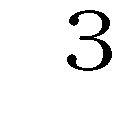
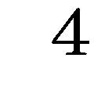

| 薄氷の踏み方 時代に塗りこめられないために | |
| 甲野善紀 & 名越康文 | |
| PHP研究所 (2008) | |
薄氷の踏み方
――時代に塗りこめられないために
甲野善紀
名越康文
名越康文
私は、あとどれくらい生きておれるのだろうか。
縁起でもない書き出しで恐縮だが、人間ならば人生のどこかで必ずつぶやく台詞の一つではないだろうか。私の場合、比較的若い頃（小四くらいからだろうか）から絶えずそう独語しながら生きてきた。だから私という自意識の端のほうには、絶えず〝一人〟という感覚がある。当然のことだ。人は一人で死んでゆく。それはたとえ、誰かと偶然共に逝くことになったとしても同じことだ。それぞれの肉体にそれぞれの死が訪れるだけなのだ。
そのような、やや生き死に関して神経症的な私の人生の中で、もっとも多くの時間を語らって来たのは、本書の対談相手、甲野善紀氏であることは紛れもない。年齢も異なり、育った環境も違い、専門分野も同じでない二人が、なぜこれほどまでに多くのことを語り合い、吐露し合えて来たのかは今もってはっきりとした理由が見つからない。あえて言えばその語らいはなお現在進行形であるから、なのだろう。
甲野氏を一言で評するなら（そのような暴挙を赦されるのは、さすがに私だけかも知れない）実は憤怒の人なのではないだろうか。人であるのに、人の外に立つ人、と言い直してもよい。自らが人であるにもかかわらず、たとえばこの星、この国の風土、大地の側に立たざるを得ない存在。なぜ、彼がそのような役回りを与えられてしまったのかは分からない。だが彼の幼いころの思い出の最たるものが、その過剰なはにかみであり、それが故にまともに小学校に上がれるかさえ心配だったと、母堂が後になって述懐されるほどのものだったという事実と、深く関係していると思う。つまり甲野少年は人間たちの空間よりもむしろ自然の懐のほうが、自己の存在のありようにずっとフィットしたのだろう。
しかしその感性の特質は、大人になってもその根幹は全く変わっていない。であるから、彼はいつもある意味で葛藤のなかにある。それはとりもなおさず、自分がいつも自然と相対峙する〝人〟であるにもかかわらず、納得する料簡は絶えず自然の営みの側にあるからである。才気は往々にして宿命の中に生ずる。この根本的な矛盾が、甲野善紀という稀人の汲めど尽きせぬ創造性の根幹にあると私は思う。
名越 最近、よくテレビや雑誌などで甲野先生のお名前を拝見します。ただひたすらに武術の研究をされて、普通の人間らしいことは何一つされていなかったかつての先生の生活を思い起こせば、なんだか景気がよさそうで何よりですね。（笑）
甲野 そうですね。名越さんと知りあって、しばらくはコンビニでバイトしている学生さんなどの若い人達の収入よりもすくないだろうという月もありましたから、それに比べれば、ここ数年で漸く年齢相応になった、というところでしょうか。でも、いわゆるお金になる仕事にはそれほど縁がありません。（笑）
名越 それは僕も似たようなものですよ。それで最近はあまりにお金が入ってこないので、そもそも僕はお金が入ってこない「体質」なのかもしれない、と考えるようになったんです。
たとえば、「お金が欲しいな」、「一〇〇億ぐらい欲しいな」と思うとするじゃないですか。そのときに、「ああ、居着いてるな」というのが自分で分かるんです。本当にお金持ちになる人というのは、「お金」に居着きませんからね。どんなに大きな金額の話をされても、自然に振舞える。でも僕は駄目なんですね。小さな金額でも慌ててしまう（笑）。実は、これは明らかに母親の呪縛なんです。でもそれをこの頃、感謝するようにしているんですよ。
甲野 「呪縛」に感謝するようになったというのは面白いですね。
名越 そうなんですよ。母の愛というのは、本当にさまざまな形をしているもんだな、と驚いています。（笑）
それで僕が小さな頃、母親はとにかく「お金がない、お金がない」と呪文のように、いや、呪詛のように唱えていたんですね（笑）。母は町医者の娘で、当時は、小さな町に二軒しか病院がないような状況でしたから、まあまあお金には困らない家だったわけです。それが駆落ちまがいでうちの父親と一緒になって、一から商売やり始めて、人に頭を下げなくてはいけなくなった。
商売には、どうしても「一寸先は闇」という感じがありますよね。町の中に二軒しかない開業医ですと、患者さんは、ほとんど自動的にやってきてくれますが、普通の商売では、商品やお客さんへの応対がちょっとでも悪かったら、すぐにお客さんは来てくれなくなる。お嬢様育ちのうちの母親としては絶えず不安を感じていたんでしょうね。僕が物心ついたときに、一番初めに聞いた母親の言葉は、「お金がない」だったかもしれない（笑）。だから、僕は「なんとなくいつも、お金がないんじゃないかな」と刷り込まれているんです。
貯金通帳なんかは、全部事務所にまかせっきりで年に二回くらいしか見ないんです。それなのに、なんとなく僕の体の中にお金がないな、という感覚だけがある。そうするとバランス悪くて、ふっと自然な動きができないから、僕には絶対に大きなお金が入ってこない。
でも、僕も四十年以上生きて、これまでの人生経験に照らしてみると、どうも大きなお金がドカンと入ってきた人はあまり幸せになっていないとも思える。だから、この頃はそのバランスの悪さが自分の人生の重石になっていて、うまくいっているのかなとも思うんです。母がわが子のために重石を授けてくれたのかなと。（笑）
今とは反対に、自分が欲深くもないのに、「欲深い」と人から見られるような人生を歩みだしたら、年貢の納め時じゃないか、という気がしているんです。
甲野 お金にせよ、スポーツ選手の名誉や記録にせよ、やはりその人が「得たい」と強く思っていたものを実際に得てしまうと、なぜか人生の税金がかかってくるものです。
人生の税金で、一番典型的なのは家族に災難が降りかかることです。どうも、妙にややこしい病気になったり、事故に遭ったりする。これは私も一時期随分調べたから言えるのですが、どのジャンルでも成功した人は本当にそういう人生の税金を払っている感じがありますね。私が自分で気づいた技は一切隠さずに世間に公表しているのも、実はこの、人生の税金対策の一つなんですよ。
だから、タイガー・ウッズやイチローといった超一流の選手で、富も名誉も入ってきている人はこれから大変だと思いますよ。一番いい方法は、まあ自分の財産の半分以上をどこかに寄付してしまうことでしょう。無記名なら一層いいでしょうね。
昔からずっと続いている豪商や庄屋は、ある程度の財産がたまると蔵開きをしたり田畑を人にあげたり寺社に寄進したりして、財産が、あまりたまり過ぎないように調整していたようです。そういうことをしていると、何代も何代も商売が続くのですが、一代で成り上がった成金なんかは財産を抱え込んでしまう。そうすると二代目か、三代目くらいに放蕩息子が出て全部使い切ってしまう。まあ、これは熱力学のエントロピーの法則からいっても自然なことのように思いますね。
また、生贄を差し出すというわけではありませんが、子どもを出家させるのも人生の税金対策の一つの方法でした。あるいは俗業には就かせない。ひたすら風雅の道を追い求めさせて、生産的なことは一切しない。
お金や権力が手に入っても、自分の姿勢を崩さずにますます自分を磨いていけるかどうか。環境が変わっても変わらないでいられるか。これは難しいことですよ。
自分の中にブレーキ的要素も持ちつつ、バランスも取るというのは、とても難しい。まあ、これは、名越さんが御専門でしょうが人間の無意識は広大です。名越さんが以前言われていた「無意識さん」というのはそれこそ深いところでいろいろ考えていますから、その無意識をうまく操作するのは並大抵のことではありません。
だからもし私にあまりにもお金が入ってこなくなったとすれば、それは、ついつい無意識のブレーキをかけ過ぎた、ということなのかもしれません。（笑）
名越 「ブレーキをかけ過ぎる」ということに関して言いますと、僕は、ずっと精神科医として人を診てきた結果、「人間というのは本当のところ成功するのを恐れているのじゃないか」と思っているんです。
甲野 昔の人と比べて、今の日本人に活力がなくなっているのだとしたら、それはある種の「成功」を手に入れてしまったからでしょう。
基本的に人間も含めた生物にとって、「生きている」ということは、とても不安なものです。先ほど「商売において一寸先は闇」という話がありましたが、実は生きているということは、本来「一寸先は闇」なわけです。先がどうなるのか分かりませんからね。突然死んでしまうかもしれない。不安なのは当然です。
そして、その「不安」が日々を生きる活力を生み出す原動力でもあったように思うんです。「明日どうなるか分からないから、今日を必死に生きよう」または「少しでも不安を解消するために、工夫をして文明を進めていこう」と考えることができた。しかし、最近の日本人はどうも「明日も生きていられるだろうか」ということに「不安」を感じていない。それからさまざまなことがおかしくなっていったんですね。
分かりやすく言えば、人類はその誕生以来、「豊かさ」と「安全」をずっと求めてきた。しかし、それはどんなに追いかけても手に入らないものであった。それが今の日本においては、まがりなりにも手に入るようになってしまった。つまり今の日本は、史上もっとも「生命に危機を感じる」ということから切り離された国になった。そうしたら、人々の日常生活から活力が減退したばかりでなく、自分で自分を傷つけたり、仲間を集団で危機に陥れるようになってしまった。つまりニートと自殺といじめが増えてしまったということです。
このことは「目標が満たされる」ということが、ある意味で人間の命にとって、「危機」だということを表しているのだと思いますね。
バランスが大切なんです。たとえばゲーム作りでも、まったく歯が立たないほど難しいゲームは、ほとんどの人はやらないし、逆にほとんどの人たちがすぐにできてしまうほど簡単なゲームも商品にはならないでしょう。人類にとって、「豊かさ」と「安全」を求めて「不安」を減らす、という壮大なゲームはとてもよくできていたと言えると思います。少しずつ目標に向かって進む中で、人生を生き生きと生きてこれた。そのバランスを崩してしまったのが、現代の日本の問題なのでしょう。
話が少し進み過ぎたかもしれません。とにかく、人間はあまりにも成功して次にやることがなくなってしまうと、生命力が弱まることを本能的に知っていて、それを無意識のレベルですごく恐れているように思うんです。
名越 まさにその「ゲーム」というのは、うまく言い当てていると思います。
成功者の虚しさはゲームが終わった後の虚しさとつながっているんですよ。徹夜でゲームをした後に「なんで俺はこんなことをしてしまったのだろう」と思う。こんな閑があったら金儲けをしたらよかったとか、こんな閑があったら勉強したらよかったと思う。でも、実際にお金を儲けても、勉強をしても、その後で感じる虚しさというのは、ゲームをした後に感じる虚しさと、たぶんほぼ同じなんだと思うんですよ。
でもこういうことを正直に考える人は実はあまりいない。皆、いや、これだけの人を救ったんだから、とか、これだけ社会に貢献したんだから、とか言うんですね。ただそれは究極、自分の業績をほめてしまっているわけで。それって、本当の修羅場をかいくぐってきたような人が感じることなんだろうかと思うんですね。そんなやわいナルシシズムにひたれる人が、それなりの所業をこの世に残せる人だろうかと。僕はそういうレベルの人って、もっと客観的に自分のことを見つめているに違いないと思うんです。
甲野 実際に真剣勝負をして、たとえようもないほど深い虚しさを感じてしまった典型例が、ウラ麻雀で無敗を誇った雀鬼こと桜井章一雀鬼会会長ですね。桜井会長は、それこそ勝負の直前になると、食べない、飲まない、寝ない、という状態になる。要するに普通のスポーツ選手が「コンディションを整えましょう」というレベルではなくて、生命存続の危機に自分をさらすわけです。そうすると酸性雨で枯れる寸前の木がいっぱい実をつけるように、生命活動の奥にある感覚が発動してきて、人間が出す最後の潜在力をふりしぼれる状態になったんでしょうね。そういった状態で勝負に集中すると三九度の熱が出たそうで、そうなると、それこそあらゆる状況が見え透いてきたらしいですね。
名越 パイが透けて見えるって、どこかに書いてあったような。（笑）
甲野 そうだったらしいですね。それで、ある種、勝負の場を支配できる能力が出る。それで勝ってこられたわけですが、勝ってどうなるかというと、もうなにもかもどうでもよくなってしまう。
名越 一刻もはやくそこから離れたい、という意識になるらしいんですね。
甲野 だから、それが成就した瞬間に、しかもその度合が完璧であればあるほど嫌になるんだと思うんです。ですから、勝負の後で、勝利の喜びをかみ締められるというのは、まだ甘いということです。
昔の剣客も、凄まじい相手と全能力を出し尽くして勝負したときには、たとえ勝ったとしても、「勝ってよかった」と思うより、むしろ呆然としてしまったように思うのです。
名越 だからと言って、「一生達成できないような目的を持っている人は幸せになる」というような、そういう単純なところには落とし込んで欲しくありませんよね。絶対的な虚無感を道の先に予感しながら、その道を突き進む人間の哀しみは、そんな言葉で片付けてしまってはいけません。
そう言えば御縁というのは、不思議ですよね。甲野先生も桜井会長と対談本を出されましたが、僕も会長との対談本をこの前出してしまいました。
あれっ。ところで何の話をしていたんでしたっけ？（笑）そもそもの話は、「なぜ、僕らにお金が入ってこないか」でしたよね。また随分話が大きくなってきましたね。甲野先生と話していると、普通の話題を普通に話し始めたはずなのに、ふと気がつくと、「一体僕はこんなところで何を話しているんだろう」とよく分からなくなっているから不思議です。（笑）
甲野 お金に関して、もう一つ別の観点から考えると、私は、一流の人というのは、その人がどれほどプロとしての素晴らしい技を持っていても、同時に、ある種のアマチュア性を失っていない人だと思っているのです。
「アマチュア性を失わない」ということは、仕事をするにしても、ただお金のために仕事をしているのではありませんから、自分と仕事との結びつきにおいて、お金にならないことにも興味を持って取り組めるということですね。
たとえば、生きながら伝説となった、道具鍛冶の千代鶴是秀などは、まったくの採算度外視もいいところという仕事をしていました。たしかに千代鶴の作る鉋は並の鉋よりも数倍も値が張りましたが、製作にかかる手間が他の鍛冶屋に比べて桁違いに多かったので、年収や月収で計算すると並の鍛冶屋よりもずっと収入が少なかったんですね。千代鶴はそれが分かっていても手を抜くことは自分で絶対に許せない。
名越 仕事をどういう形でどれほどやるか、ということについて、お金以外の基準で動ける人というのは羨ましいですよね。
高給取りと言われる弁護士さんの中にも、年収が四〇〇万～五〇〇万円の方がいるそうですね。たぶん今の僕が、「自分は幸せだな」と感じる生活リズムで、自分が納得できるしっかりとした診療をすることだけを考えて仕事をしたら、僕の年収は四〇〇万円くらいになると思うんですよ。ただ、それくらいの収入だとちょっと焦るだろうから五〇〇万くらいに落ち着くかな。なにしろ僕には母の「金はいつの間にかなくなる」という呪いがかかっていますからね（笑）。とにかく総収入が年間八〇〇万から九〇〇万くらいの人だと、事務員さんの給料や経費を差し引いて、結局、その人の手取り年収が五〇〇万くらいになる。そういう弁護士さんの話なんかを聞くと、「ああ、いいころあいだなあ。いい湯加減で仕事やってはるなあ」と思いますね。（笑）
そういう仕事のやり方は、一見アマチュア的でプロの仕事と比べて甘いものになりそうですけど、後から振り返ってみると、お金に追い立てられながら仕事をこなしていくよりも、結局は「良い仕事」になっているんですよね。
甲野 私も収入のことを考えれば、武術稽古研究会を解散したりしないで、それこそ自分を最高師範にして、全国に支部を置き、指導料を稼ぐシステムを作っていれば、たぶん収入は今の何倍にもなっていたと思います。ただそういうことは私はやらない。なぜなら、私にとっては、「技のさらなる探求」ということが、何よりの目指す「目標」だからです。それ以外の興味は「まあ少しは話の通じる人を作りたい」ということでしょうか。そうでないと、あまりに話の通じない人ばかりでは生きていこうとする意欲がなくなりますからね。ですから、あまり、必要以上のお金を稼いでしまわないようにと、どこかで思っていると思うのです。収入が多くなれば国に、多くの「税金」を払わなくてはいけませんが、それ以上に先ほどから話題になっている人生の税金をとられる恐れがありますからね。まあ家族の不幸とか、そういうものが降って来たら取り返しがつきません。またそうなったら、当然、技の探求にも支障がでます。だから今のような仕事の仕方をしているのです。
名越 最近は、人間が作り上げたモノの価値から、人間の人間としての価値まで、表立った高価な物だけではなくて、ほとんどあらゆるものが潜在的にはお金を軸に語られているように思います。
でもその潜在的な、換言すれば無意識的なレベルの価値の一元化というものが知らず知らずの内にすっかり回りを一色に染め上げてしまっていて、（ものや楽しみが溢れかえっているはずなのに、）ずい分つまらない、そして息苦しい社会に陥ってしまっているのも事実だと思うんです。この対談を通じて少しでも、その「生きるだけで辛い」状況に一石を投じてみたいものですね。
名越 そう言えば、僕が甲野先生のことを「あれ、この人はやっぱり普通の人と違うんだ」と思ったのは、はじめて寝屋川でお会いして市内を一緒に歩いていたときなんです。そのとき甲野先生はふと「あ、名越さんは方向音痴ですねえ」と言われました。それで僕が何の気なしに「そうなんですよ」と答えたら、先生は「分かりました」と頷いたんです。その「分かりました」に何とも言えない凄味を感じたんですよ。
次に奈良で待ち合わせをしたときに、甲野先生から待ち合わせ場所の説明を受けたのですが、それはもう微に入り細に入り驚くほど丁寧でしたね。「その電車は一両に○つの扉がありますから、前から何両目の○つ目の扉から降りてください。すぐ目の前に階段があるはずです。改札を出ると、これこれというような場景があるから、右へ行って左へ行って......」ということから始まって、「そこで待っていてください」となるまで、一〇分以上。
説明されているうちに、分かった気になるんですが、よく考えたらやっぱり分からない。分かった気になって分からないようになって、分かった気になって分からないようになってを数回経て、やっと「これは、メモしないといかんな」と思ったんです。（笑）
目的地に着いてみたら、確かに先生の説明してくれたまさにそのまんまの場景があって感動したわけですが、「出会い」までに、これほど気を持たされるのは、森外の『雁』ぐらいですよ（笑）。無縁坂に立って想い人を待つお玉の気持ちがよく分かりました。もっとも甲野先生とはすれ違うだけではありませんでしたけどね。（笑）
道案内でさえその調子ですから、会合の段取りなんかは、「この人は段取りに美しさを感じているのかな」と思うぐらい凝っていましたね。最近は甲野先生も武術界だけの人ではなくなってしまい、付き合う人間の数が一桁増えたので、だいぶ人間らしくなってきましたが、以前は「段取りが歩いている」と思うぐらいで。
甲野 私にとってみれば、段取りをするのも、物を作っているとつい凝り出して、より完璧な物にしようとしてしまうのと同じなんですね。どの角度から見ても、死角がないようにしようとする。こういう場合は大丈夫か、ああいう場合は大丈夫か、とつい考えてしまうんです。
名越 そう言えば、先生は「他人が突然不可解な行動を取ると、混乱することがある」と言っていましたよね。「なぜあの人はふっと背伸びしたのだろう、あれはどういう意味があったのだろう」と考えてしまうと。
甲野 それは今でもそうですね。いつでしたかね。もうかなり前になりますが、私が合気道をやっていた時代からずっと親しく付き合っている武術の先輩の伊藤峯夫さんと喫茶店に入ったんです。席に着くと、伊藤さんは手をあげて、ウエイターを呼ぶ仕種をしました。でも、すでに水も来ていましたし、注文も終わっている。伊藤さんは煙草を吸うけれど、煙草もある。マッチも灰皿もある。これ以上、伊藤さんが必要とするものとは何だろうと考えに考えたのですが、どうしても分からなくて気を失いそうになったんです。（笑）
結局、テーブルの上に置いてあったマッチが伊藤さんのほうからはコップの死角に入っていて見えなかったんですね。それで伊藤さんは手をあげてマッチを頼もうとしたわけですが、悔しいですけど、そこまでは読めませんでした。
まあ、でもその時は自分で自分の中にあるそういう凝り方に、驚いたり呆れたり。もちろん、そういうところがあるから、技の追求も、たとえば柔道などの組手争いで、相手に払われても払った方が崩れる動き、などという、およそ柔道関係者では考えないようなことを追求して、それなりにできるようになったのかもしれませんが。
名越 甲野先生も「つい凝ってしまう」とおっしゃいましたが、「気を利かせる」という行為は、こだわり始めるとキリがない面がありますよね。
たとえば講演をしていると、何気なく会場を見渡すときがあります。そのとき、視界の中にチラッとでもこちらが期待しているのと違った表情をしている人が入ると、僕はもう強烈に記憶に残ってしまって、「あれっ、何でこの人は今こんな表情をしているんだろう」と気になって仕方がなくなるんです。最近は経験を積んだからか少しずつ治ってきてはいるんですが。甲野先生はどうですか。
甲野 私が講演などで、よく下を向いて話しているのは、それを避けるためですね（笑）。一人の人の表情に囚われてしまうと、会場全体に良い影響を及ぼさないことがありますから。人の顔を見る場合は、つい私の話にウケてくれて、「ああ、理解してくれているな」と思える人をずっと見てしまうことになってしまいますからね。（笑）
名越 それが一番楽ですよね。（笑）
僕はほんとうに人の表情が気になるんです。たとえば、雑誌やテレビの企画で対談をしていても、マネージャーが頭痛か何かで調子が悪くて、目の端の一番無意識が刺激される辺りで、すぐれない表情をしているとするじゃないですか。そういうときは、ごく短い時間かもしれませんがもう七割以上そっちに注意が向いてしまうんです。それで仕方なくマネージャーに「ちょっと悪い、はずれてくれ」と言います。
でもここで難しいのは、そうやって「はずれてくれ」などと言えば、周りの人からはまるで僕が怒っているみたいに見えますよね。対談の相手と一対一で向かい合っているなら、その人一人に対して「気を利かせて」いればいいわけですが、現実の仕事の現場では、たくさんの人が周りにいる。ヘタな気の利かせ方をするとその周りの人の空気を変えてしまう。これが嫌で、困ってしまうんですよ。
甲野 そこは重要ですね。何をするにも「場」の空気というのは無視できない力を持ちます。だから「気を利かせる」ならば、「場」に対して気を利かせる必要がある。
以前、『BIG MACHINE』というオートバイ雑誌から取材を頼まれたんです。元々は二時間インタビューを受ける予定でしたが、つい夢中になって、結局五時間もの間、話し続けました。私がそれほど話に熱中したのは、インタビュアーからカメラマンそして照明板を持つアシスタントのお兄さんに至るまで、その場に来た全員が私の話にものすごく関心を持ってくれたからです。今までの例では、五、六人で取材に来ると、必ず一人か二人はとにかく自分に割り振られた仕事だけをして、「はい、私の仕事はもうこれだけですから」と、まったく私の話に乗ってこない人がいるものです。
ところが、このバイク雑誌の取材班は、全員よほどバイクが好きなんでしょうね。一人の例外もなく私の話を聞きたがっていたし、私の技を体験したがりました。カメラマンから「こういうことを聞いたらどうか」と意見が出てきたり。全員参加型なんですよ。
名越 あのドリフターズにも高木ブーがいるのに、全員が志村けんと加藤茶だということですね。（笑）
甲野 全員参加型だとやはり場も盛り上がります。私もこれまでかなりの回数の取材を受けてきましたが、あれほど夢中になって話をしたことは、滅多になかったですね。和歌山利宏さんという有名なライダーの方も一緒に来られていたのですが、取材が終わって、一行が私の道場の前の坂を下って行かれるときに、その和歌山氏の「ああ、今日は楽しかったなあ」と満足げな声が風に乗って聞こえて来ると、私の気持ちも満たされますね。
この件からも、「場」の雰囲気を良いものにするかどうかが、その「場」で作り出されるものの質をたかめるための重要な鍵を握っていることが分かると思います。
名越 そして、甲野先生ほど取材を受けていてそのときが初めての体験だったということは、逆に言えば、どれだけ少人数であっても、「全員が一定の関心を自分なりに持つ」という「場」と言うか、シチュエーションを作ることが、いかに難しいかが分かりますね。このシチュエーションを作ることができれば、どれだけ物事が進んだり、企画が通ったり、あるいは現実的にお金が動いたりすることがありうるか、ということについて、みんながもっと考えてもいいと思うんです。
僕の講演の経験では、「この人はいったいどうしてここへ来たんだろう。何を聞きにきたのかな」という人のほうが、多い時もあるくらいです。（笑）
甲野 芸能界には、スタッフをいびりながら使うプロデューサーがいるようですね。それこそよくコントのネタにもなっています。「何やってんだ。お前は気が利かないな」とプロデューサーが出演者やスタッフの大勢いる前でＡＤを怒鳴りつける。そうするとその場が冷え切って、「こんな雰囲気じゃあ、収録なんてできるわけないじゃないか」とタレントさんがキレるというような場面もありましたね。面白い内容のものを作るには、いかに「場」の雰囲気が大切か、ということの反面教師的な事例ですよね。
名越 企画会議で考える「内容」だけが企画ではなくて、そのチームの空気や雰囲気も含んだ「全体」が企画なんですよね。
こう言ってしまうと、「なんだ。企画って結局実体がない水物なのか」というようにも聞こえてしまいますが、そういうことではありません。会議で話される内容の一つ一つは「魚の切り身」だと考えればよいと思います。そして、企画が通った段階では、水揚げされたばかりの甲板で跳ねている魚、と考える。そうしないと結局面白いものはできないと思うんです。
だから、企画に参加している人がどれだけ視野を広く取っているかは本当に大切な要素です。一つの内容についてだけ考えていればいいというのは間違いで、できれば自分の意識がその会議室を越えて、広がっていくくらいの感覚を持っていないといけませんね。
「どうしてこの人は一代でこれだけの仕事ができたんだろう」という人と、「どうしてこの人はこんなに頭がいいのに、何一つ動かせないのかな」という人の差はすごく大きいですよね。その理由は企画というものが「全体を見なくてはうまくいかない」ことが分かっているか分かっていないかで決まるように思います。「全体が大切だ」ということが分かっていないと企画はまったく動かないんですよ。
企画の立ち上げから実際に動き出す途中で息切れしてしまったり、あるいは、この会議には自分はサブで付いているだけですからというような感覚の人が一人でもいると、大きな企画は動かせません。
会社で行なうような普通の会議では、メンバー七人がうまく会議を仕切れる限界で、八人からは難しいと言われています。なぜ八人がダメかというと、七人だと素数で割り切れませんが、八人だと、四対四になってしまうからです。確かにそういうこともあるかもしれませんが、僕から見れば、まずは一人でも多くの「コア」なメンバーを集めることのほうが大事だと思います。
「コア」なメンバーとは、企画の理念が分かっているのは当たり前で、企画の進捗状況が今どうなっているのか、どこに問題を抱えているのかについても了解を共有していて、企画を進めながら共に昂揚感を持ってつながりあえるメンバーのことです。それが五人もいたら、大概のことは達成できると思います。グループの中で、サブに付くことを考えない人が五人もいれば何でもできますよ。
言い換えれば、「それぞれが主体的に動きながら一つの生き物になる」わけです。大概はたとえ五人が集まっても、集まった瞬間に集団化して、主従関係を作ってしまいます。従になった人は何も考えないで主に従うだけになる。そうではなくて、頭、右腕、左腕、左足、右足になる。すると実体的には一つの人格みたいになるから、各々が別々に動きながら、なおかつ一つのまとまりを作り出せます。五人でそういうことができたら素晴らしいですね。
甲野 近代スポーツが陥りがちな身体の使い方の最大の問題点は、どんな小さな動きでもその動きの中には身体の中にある無数の部位が関連しているということを忘れてしまっている点です。身体全体を使うことが軽視というより無視されている。そして、自分の意識しやすい部位だけを筋力トレーニングで鍛えています。これではどうしても限界がある。限界があるどころか、全体の調和を崩すことで身体を壊すことにつながってきます。まさに「場」全体に対して気を利かさずに、一つの部分に気が捉われていることで、「場の空気」が読めないため「場」の雰囲気を壊している状態と言えますね。
名越 ただ、何人かの人が集まって大きなことを成し遂げることがある一方で、一人の人が突き詰めたほうが「より遠くにいける」場合もあると思うんです。
僕はマンガの評論をよくさせてもらうのですが、ある取材で「マンガというのは、なんでこんなにすごいんですか？」と訊かれたことがあるんです。その時、瞬間的に「一人の人間が描いているからだ」と言ったんです。これは、自分で言っておいて馬鹿げた話なのですが（笑）、すごく深い言葉だと思うんです。つまり、プロジェクトというのは、基本的に何人もの人間が考えを出し合って、落としどころを決めていくものです。それこそ「三人寄れば文殊の知恵」ではありませんが、たくさんの人の頭脳があったほうが良いものができるという思想が根底にあります。ビット数が高いコンピュータのほうが正解を出せる確率が上がるじゃないかというスーパーコンピュータの思想と同じですね。
でも、本当は一人の人間が作り上げたもののほうが、幾人かの人の総合力で作ったものよりも、格段に遠いところにいく可能性があると思うんです。むしろ一人の人が突き詰めたもののほうが、ある存在の真実みたいなものを垣間見させてくれる可能性が高いんじゃないかと思うんですよね。
「三人寄れば文殊の知恵」と言っても、みんなが同じことを考えているわけではありません。みんな考えていることはバラバラです。だからみんなで考えて一つのものを作るということは、みんなの考えが焦点化されて一点になるだけであって、どこか思考の果てまで届くようなものではないような気がするんです。
甲野 確かに、それぞれ場合がありますよね。何か事故があったりトラブルがあったときは、その解決法として、いろいろな知識を持った人がいてくれたほうが、より良い解決策が見つかるでしょうが、小説を書くとか絵を描くなどというときは、当然一人で深く突き詰めたほうがいい場合が多い。
名越 突き詰めていくと人が集まらないほうがより思考が深まる、という考え方は世間的には危険な考え方になるかもしれませんね。しかし、これは、みんなが目をそらさないで真剣に考えるべき、人間の存在にとっての重要なテーマだと思いますね。
名越 「場の空気」の話題に話を戻しますと、僕のカウンセリングの経験から考えてみても、「場の空気が読めない」子どもが生まれてしまう原因の一端は、親にあると思います。
親御さんと話していると、たまに、話の切れ目がどこにもない、という人がいるんです。ワープロで打った文章にたとえれば、点も丸もスペースも端折って、切れ目なしでだらだらと文章が続くような人です。カウンセリングをする者としては、こういう人が一番困るんですよ。話している自分自身でもどこが話の山なのかが全然分かっていないので、テンションも変わりません。だから、こちらとしても、何をどうまとめてあげたらいいのか聞けば聞くほど分からなくなる。
僕は「点なし丸なしお化け」と呼んでいました（笑）。お化けだから足がないので、どこに立脚しているのか分からず、どこまでが実体かも分かりません。（笑）
本来、人が今から大切な話をする、というときには、ぱっと空気が変わりますよね。その空気が変わったときに、お互いがうまく呼吸を合わせることで、単なるおしゃべりではない「コミュニケーション」をする準備をするわけです。
呼吸を合わせるときには、一瞬ふっと沈黙することもあるかもしれません。おしゃべりな人でそれまで機関銃のように話していた人でも、大事な話に入るときには、一瞬、沈黙してくれる。結局、その一瞬があるかないかがすごく大切だと思うんです。
お母さんが子どもと話すときも同じです。忙しく家事をやっていたとしても、子どもが話し始めたら、一瞬、手を止めて話を聞いて、それで「あ、この話なら流しながら聞いてもいいかな」と判断する。忙しくなくても、わざと子どもの話をそらすことはあると思うんです。あまり子どもに自分で解決しようという意気地をなくさせてもいけないというので、わざと子どもの話をそらしながら聞くことがあるとしても、話をそらしてしまう前に一瞬だけ、ふっと子どもと呼吸を合わせることは大切で、実はそれをするかしないかで子どものその後の成長まで違ってくると思いますね。
僕がこういうことを言うのは、とにかくカウンセリングの仕事をしていると浴びるように人に会うわけですよ。だから、あらかじめ相手を見極めておかないとこっちももたない。（笑）
でも考えてみると、お互いに相手の考えていることが自分の思考とビシビシとはまり合い、それこそ、いい碁石が盤上で響くような空間になることは稀です。いやむしろ日常会話でさまざまな人間が共存するために必要なのは「節目節目だけでも呼吸を合わせてください」ということじゃないかと思うんです。
甲野 日本にはもともと「察する」という文化がありますよね。
名越 これはすごい文化ですよね。ある意味で日本を代表する文化とも言えるかもしれません。
たとえば、日本の中で、一番利害関係をハッキリさせる都市と言えば、やはり東京です。ベストセラーになった『世界の日本人ジョーク集』（早坂隆著・中央公論新社刊）にも、「金儲けするなら東京行け」といったジョークが書いてありましたね。とにかく日本の中では東京が、一番利害がハッキリしていると言いますか、利益を得なければならない空間になっていると思います。僕は大阪のことが大好きですけれども、いろいろな意味で新しいことをはじめたり、多様な発想を具体化していく、あるいは実現していく力で考えると、今の大阪は東京の百分の一くらいの力しかないかもしれないと、悔しく感じることがあります。そんなふうに「利害」ということに関しては、日本の中で圧倒的な東京でも、あからさまに「お金」のことを言うことは、いまだにありません。
たとえば、何らかのプロジェクトを立ち上げるにしても、お金の話に関しては、プロジェクトの内容を考えたり、具体的に進行させたりするチームとは別に経理だけを担当する人がいる。要するに、お金のことは会計士同士が話し合う、法律のことは弁護士さん同士が話し合う、というような世界がある。これは非常に面白いと思いますね。外国ならば、一つのチームで企画から経理まで担当するんじゃないでしょうか。
プロジェクトの開始の合図にしても、「それじゃあ、さっそくとりかかりましょうよ、はっはっは」という笑い方で、今の言葉は冗談なのか、本当なのかを見極めるという世界です。「さっそく」と言っているのに、その「さっそく」という言葉を使うことでかえってこの話自体を突き放しているのか、言葉の意味通り本当にやるのかを判断しなくてはいけません。こうやって話すととても難しいことのように思いますが、実際にその場になれば、たとえば一〇人の会議だったならば、一〇人のうち九人までが分かる。経験不足の人だけが「結局、どっちですか？」と周りに聞かないと分からない。でも、勘違いして、急いで家に帰ってパソコンを開ける人なんかはいないわけです。それがすごいと思うんです。やはり日本人なんだなあと。（笑）
甲野 これは人から聞いた話ですが、外国人は日本の会社で飲み会の後などによくやる「一本締め」がうまくできないそうです。「よぉー、しゃん」の「しゃん」がうまく合わない。手を打つのが早過ぎたり遅過ぎたりしてしまう。
名越 まず、外国人はなぜ「よぉー」と言うのかが分からない、と言いますね。意味がないではないかと。タイミングを合わせたいのなら、「スリー、トゥー、ワン、どん」でしょうと。何のための「よぉー」なのか、そこからして分からない。（笑）
こういう事例を考えてみても「察する」こと、この場合で言えば、「間」を察するということに、日本人は特別な感性を持っていますね。
また「間」を取るということに関しても同じです。中国の花火と日本の花火も違うんですよ。日本の花火は、シューー、ボン、となりますが、中国の花火は、シューパパパパンというように「間」が入らない。日本人の感性からいくと、シューーの後に一呼吸あるかないかで、風情が、美しさの深さがまったく変わってきますよね。
コミュニケーションにおいても、その一呼吸の「間」に、その人の何とも言えない味わいが出ると思うんです。だから僕は、子どもに対して何時間もお説教するよりも、その一呼吸の味わいを気づかせてあげることこそが、子どもを育てるように思えて仕方がないんです。
甲野 それが最近では、日本人にも「一本締め」をうまく合わせられない人が出てきた。まあ、今は驚くほど話の通らない人がいますから、当然と言えば当然かもしれませんが。
名越 そうですね。最近は、日本人の感覚もだんだん鈍くなっていると言われますね。確かに根絶やしになっている部分もきっとあると思います。でも、一方では、アメリカ人には絶対に分からないあやふやな感覚は根強く残っていると思います。いくら取ってもどうしても取れないレンコンの穴の奥に入っている泥のようなものかな、という......。（笑）
それこそ今の若い人はメール返信のちょっとしたニュアンスが原因でいじめにあったりします。コミュニケーションに関して、むしろ以前よりも相当敏感になっているという話もあります。
すごく分かりやすい言いまわしで言うと、若い人たちがこの頃、すごく「女性的」になっている気がしているんです。少し説明しますと、僕の勝手に作った言い方に、「臨界点」と「極点」というものがあります。「極点」というのは、たとえば北極とか赤道のような場所。「臨界点」というのは、寒いと暑いのはざまみたいなところのことです。今はこの「臨界点」が大事にされているんですね。
これは恋愛関係のやりとりでも、はっきり分かります。今の若い人に人気のあるのは、はっきりとプロポーズすることではありません。たとえば合コンで出会って、あとで気に入った子にメールするときに、どのような内容のメールに女の子が一番ドキドキするかというと、それはもし少しでも誤解されてしまったらストーカー扱いされてしまうか、「この人、すごい勘違いしてるわ、バカじゃない？」と言われるギリギリの線を狙ったメールなんですね。
僕たち日本人がアメリカン・ジョークをいまいち面白いと思えないのも、このあたりのセンスの違いに原因がある気がしますね。たとえば、日本のお笑い番組を見ていると、人気の芸人さんたちはみんな必ず「一歩間違えたらスベる」という間合いで芸をやっています。もうあと〇・二秒でもボケやツッコミが遅れたらまったく笑えなくなる。すごくダサいところと、すごく粋なところの際々を、「スベる」と「ウケる」の際々を攻めて、「ウケる」側に落とすのが、最高のお笑いなんです。ぴったりのタイミングをわざとはずして、「え？ 置いていかれてる？ 僕」などと言って、ドカーンと笑いを取ったりすることもある。こういう「わざとスベることでかえって笑わせる」ような笑いはアメリカにはない笑いじゃないかと思うんですね。アメリカン・ジョークには、笑わせるまでの〝正しい〟段取りがきちんとあるんです。正確に段取りをこなしたんだから笑いなさいと。笑いも論理的というか、確固とした石積みなんです。
たとえて言うなら、アメリカでは扉をガッチャンと閉めることが良いとされているとしたら、日本では、障子がスーッと滑って来てピタッと閉まるのが一番良いとされているみたいな違いがある（笑）。僕は妻に「ちゃんと扉閉めて」ってよく怒られるんですが、僕としては、ガチャンとは閉めたくないわけです。ポンと扉を押して、スーッと閉まっていってカチャッとなる。そうすると「ああ、気持ちいいっ！」と。これが日本人の感覚のような気がするんです。
バスケットで言えば、ダンクシュートのように自分の手で直接リングにねじ込む感覚ではなくて、シュッとシュートを放って、そこからは偶然と必然のはざまのようなプロセスを辿り、最後にはポンと決まる。
そういうところの気持ちよさが、日本人の感性をすごく震わせるんじゃないですかね。
「どこが面白いのか」「どうしたら笑わせられるのか」という論理的な答えは、追求しても追求しても絶対に出ない。でもそこには確かに「面白い」ものがあると。
名越 「場の空気が持つ力」と近い話なのですが、僕は、テレビに出たり、ラジオに出たりする中で、よく「空間の力」というのを感じるんです。もちろん活字の分野でも感じますよ。
なんと言いますか、人間の作り出す空間は、それぞれ「比重」が違っていて、その空間の中で発言する人はその「比重」を意識せざるを得ないんだと思うんです。比重より重ければ、下に突き抜けてしまうし、軽過ぎたら浮き上がってしまう。そこでバランスを取った上で何かを言うわけですね。
たとえば、テレビの収録の現場に入ると、どんな論旨を言ってはいけないのか、どんな論旨は言っていいか、ということを誰から教えられなくてもみんな分かるんです。収録の現場に入っただけで、全員がほとんど揺らぎなく共有するんですよね。そしてその「枠」の中で、僕らはできることを考えざるを得ない。僕らはまさに空間の「比重」に支配されているんですね。
そして、テレビというメディアが一番その圧力が強い気がします。テレビは、それが良いとか悪いとかいう問題ではなくて、とにかく一番「自由の許される幅」が狭いんですよね。
いや、狭いというより、そこで起きるある一定の会話のリズムや相手との関係の間合いによって、かなり話の筋道が決まってしまう気がするんです。そして、その空間の中にポチャンと放り込まれた人は、ある〝幅〟の中でしか会話に溶け込めない。それは明らかに日常の会話が成り立つ〝幅〟ではないんです。
もっとずっと拘束力を持つ場の力が働いている気がします。そして、その空間にうまくはまる自己像や論旨を決定付けるのが「場の比重」です。それによって排除される論旨、排除されない論旨がはっきりしてしまうんです。それが分かるためのマニュアルなんかありません。でもみんなが共有しているんです。テレビに出演しはじめてしばらくは、それに縛られるんです。それで一年ほど縛られると、その枠の中でできることを組み合わせられたり、少しはみ出ても、またその比重の枠内に戻ることができるようになるから、その中で発言したり行動したりする自由度が出てくるんですよ。つまりは、どれだけ人間というものは〝場〟や〝他者〟との同調を本能的に求める生きものだろう、ということになってしまうんですが、では一体誰が主体的にその同調する基準を作っているのかというと、判然としない。
それこそ場が作っているとしか言えないところがあると思うんです。
空間をまるごとコーディネートするメディアというのは、二〇世紀の後半になってテレビが出てきて始まったわけでしょ。テレビが登場したことで、人間がはじめて分かったものがあると思いますよ。
名越 このメディアの空間には「場の圧力」があるというのは映画についても当てはまりますね。たとえば、映画の中に名優と言われる、というか観客が名優と感得できるような俳優が出ていたり、あるいは名監督と言われる人が撮るフィルムは明らかに「場の圧力」が高い。
実際の空間であればまだ力学的に、科学的に検証できる可能性があるわけじゃないですか。でも映画の場合は単なるフィルムですよ。音楽の場合はＣＤ。デジタルに換算されて、焼き付けられているわけでしょう。なのにそこに圧倒的な何ものかが埋め込まれているとすれば、これは宇宙の謎や恐るべしですよ。（笑）
いわゆるアナログ的と言いますか、その場で消えていく要するに生のコミュニケーション、生の対話は、まだ感覚的に「場」というものの大切さが分かりやすいですよね。「生の音は素晴らしい」とか、「本当の出会いは直接会うこと」とか。そこでまとめよう、納得しようと僕たちはするじゃないですか。
でも実際にレコードで聴いても「すごい音楽」というのはありますし、あるいは再現の仕方で言えば、凄まじいオーディオ・ファンが作ったレコードの音のほうが、ライブの音よりもかえって素晴らしいという場合もありうる。同じように映画に見る映像に、自然の風景を超えるようなものすごい感動が込められていたりすることがあるんです。
そこまで考えてみると、今のままの科学があと一万年続けば、人間の直観や心の存在にタッチできるようになるとは僕には極めて考えにくいんですよね。まともに考えれば考えるほど、「世の中にはいろんな謎があるから探してみよう」なんていう常套句ではなくて、たった一歩思考を踏み出しただけで、僕たちが分かっていると思っているあらゆることが完全な謎に変わる、という感じがします。
甲野 私も、この頃ずっと科学的思考の限界について考えているんです。科学的、つまり論理的分析的に考えるということは、「ＡのときにＢ」という一対一の関係しか取り扱えないわけです。しかし、これでは、人間の動作のように同時並列的に動くものは本来説明できないのではないかと思うんですね。
たとえば、「人の顔を見る」という行為にしても、視覚というのは同時にいくつもの情報を捉えて、印象を形作るわけですよ。ですから二つの関係しか取り扱えないような言葉では、どうしても象徴的にしか表せないですよね。本当はそれだけではとうてい言い表せない圧倒的な情報量が処理されているわけです。
俳句などは、言ってみれば単線上にしか展開できない一次元の、しかも限られた数の言葉で、まざまざとその情景なり人の心象を思い浮かべられるものですが、そこは芭蕉たち俳人の大変な工夫があってこそ創作された芸術だと思いますね。これはなかなか簡単にはできあがりません。俳句の誕生（当時は発句）は、日本の言葉の持っていた力を十分に理解していなくては為しえなかったのだと思います。俳句が生まれたのは、それまでに十分、日本特有の文化が成熟していたということが、その背景にあったのだと思うのです。
今ふと思い出したので、ついでに言うのですが、「愛国心が大事」というのはすごくおかしいと思いますね。やはり人間がいとおしく思うのは、自分が育ってきた「文化」に対してですよ。その人が育ってきた街の風景や文化、あるいは習慣などに愛着を感じているわけです。懐かしい雰囲気そのものだったり、昔から使い込まれた道具であったり。決して文化の容れ物である「国家という枠」に愛着を感じるわけではありません。
今、非常に胡散臭く感じるのは、そこをいつの間にか、為政者が混同させよう、混同させよう、としているように思うことです。
どうしても私が「愛国心」という言葉を使うことに抵抗を感じるのは、そういうことに感づいてしまうからなんです。そこが整理されてくると、あやしげな「愛国心」とはずい分違う、もっと自然と人が信じられるような言葉が出てくるんじゃないかなと思うのです。
名越 家に代々二〇〇年も伝わっているような漆の器があったとします。そして、その温かさというか、手に取ったときのなじみ感や、毎朝それで味噌汁を飲むときに感じるぬくもりとか、それに伴う思い出とか、先祖がそれを使っていたという系譜的な感触といった、それらのものが集まった一つの器を、自分が本当に自分の身に引き寄せて感じ取ることができたら、これはもう、その人の中に「一つの国の形が見えている」と言えると思うんですよ。今の日本には、そういう人がほとんどいないでしょう。
極端に言えば、自分とその器に本質的な意味を芳醇に嗅ぎ取る、感じ取ることができたら、たった一つの器の中に、その人にとっての「日本」があると言えるのではないでしょうか。
逆に言えば、そういう部分がなくて、「ただ国を愛せ」とか「精神文化が大切だ」と言っても、それでは「この器は唯一無二の私のものである」というそれだけのパッケージを持つことにも劣るように思います。今の国が僕たちに与えようとしているのは、内容のないただの「標語」みたいなものです。
それがどれだけ貧困なものか。目指すべき方向性が全然違うわけですよね。無意味な標語を掲げる閑があったら、各地域にある独得の塗り方をした器のこととか、その地域に伝わる伝承だとかを年月をかけて子どもたちに伝えられる大人を探したほうがいい。そういう大人たちが何人もいる環境で、子どもたちの中に育て上げていくものが、その人の「風景の中の国家」につながっていくんだと思います。
そういうことが寸断されている世の中で、いきなり「国に愛を持て」というのはおかしい。そういうことを言えること自体で、僕はその人の国に対する感覚を疑いますね。
甲野 国というのは、あくまでテレビと同じような「枠」でしかないものですから、そこに「中身」がなくては仕方がありません。そしてテレビに「こういうことは言ってはいけない」という強制力が働くように、国にも強烈な強制力が働きます。とくに「世間体」という言葉がいまだに力を持つ日本では、この強制力は強い。もし、この強制がセンスの良いものなら、きっとその国は良い「中身」を持つことになるのでしょうけれども、結局親の見栄を満たすことだけしか考えずに一向に中身の根本的なテコ入れがなされない教育問題を見ても、景気のことを考えてか、根本的な対策をほとんどしないまま汚染が進む一方の環境問題を見ても、どうも今の国はそうではない。
国や社会が作り出す「環境」は、国民の意識の環境です。これは、いわば金をかけずに変えられる「環境問題」なのですが、現実にはこれを変えるのはほんとうに大変なんですよ。実際、汚い水や空気をきれいにするのは、巨額の金がかかるし手間もかかりますが、やってできない事はない。でも人の意識の中にある学歴や見栄が作り出す環境は、変えようと思えば金もかからず変わるようにも思うのですが、逆にお金をかけたからと言って、これが変わらない。
現代は、さまざまな問題について長期的な視野を持って、現在の社会の行く末を憂うようなセンスのいい人ほど生きにくい時代だと思います。ですから、そういう人たちに向けて「今の時代をどう生きるか」ということをあえて言うならば、「今はみんな無意識のうちにあまりセンスの良くない社会の枠組みに適応しようとしていますけれど一人の人間が存在していること自体の凄さを見つめていけば、時代や環境にかかわらず〝人間が生きている〟ということを掘り下げていけるでしょうから、そこを見つめていってください」と伝えるしかないですね。
私は、自分がセンスが良いとは言えませんが、現代を生きにくいと感じている人間の一人であることは確かです。私の場合、名越さんが私に会って一番心に沁みたと言ってくださった「運命は完全に決まっていて、同時に自由だ」という「気づき」が根本的な精神の支えになっています。このような自分の運命に対する自覚を持っておくことも、今後、どんな環境になるか分からない時代の中で、自分の立処を持てる有効な方法の一つだと思います。
名越 そうですね。
甲野 私には、若い頃から「今の時代をどう生きるか」についての苦しさがずっとありました。こういった問いに対して、伝統的な宗教も新宗教も、いくつかの答えを出していますが、宗教というのは「何かを頭から信じる」ことがまず大前提です。しかし、私は一からすべて自分で納得できる方法でないと、自分の本当の力にはならないと思ったので、武術を選んだわけです。本来、まさに生きるか死ぬかという、命のやりとりをテーマとした武に関わっているときというのは、人間が一番切実な状態に置かれるときだと思ったからです。人間にとっての根本的な問題はそういう余計なことを考える閑のない場で見つめるのが一番いいだろうと思ったのです。
現代人が学歴をはじめとした世間のしがらみからはなかなか抜けられないというのはよく分かります。私も大学を途中でやめて武術の稽古にのめり込みはじめたときには、やはり前科一犯みたいな感じがしました。正直なところ、その後も十年くらいは、引きずっていましたね。今はまったくそう思いませんが。
名越 前科一犯（笑）。離婚にしてもそうですよ。僕なんか前科二犯です（笑）。今度、また結婚したので「結婚おめでとうございます」ってみんな言ってくれるんですが、「三犯目はいつですか？」って言う声も聞こえてくるんですよ。（笑）
甲野 さまざまな世間体からかなり解き放たれているつもりの私ですら、「社会的強制力」が働いているということは感じます。日本の社会というのは、いわゆる「みんなと違うこと」をすると、悪いことをしたわけでもないのに白い目で見られることがあったり、共同体に取り込もうとする締め付けが特別に強い。そして「世間並」に塗り込められる。そうであるからこそ、自分の考えを確固としたものとして持っていないとただ流されるだけの人生になってしまいますよね。それで、癌になったとか、何かのときにガックリきたりしてしまう。
名越 僕はアイデンティティという言葉自体があまり好きじゃなかったんです。でも最近、アイデンティティに対する捉え方を変えたらそうでもなくなりました。当時のことを思い返すと、「ああ、俺は本当に浅かったな」と思うんです。でも今は、アイデンティティというのは、アイデンティティを「持つ」ことが重要なのではなくて、アイデンティティというのは勝手に自分にくっついてきてしまうもので、それをしっかりと「意識」することが重要なんじゃないかと思うんです。
先ほど先生が言われた「大卒ということにこだわらないとはいえ、大学を中退したということを引きずっていた」というのは、まさにアイデンティティのことだと思うんです。つまり頭では「そんなもの関係ない」と分かっていても、どこかで引っかかっていることでしょう。
「私は日本民族だ」とか「私は在日だ」とか、そういうことではなくて、「忘れているようでも引っかかっているよな」というところに、アイデンティティは、根深くあるものじゃないかと思うんです。
甲野 それは、武術用語で言うと「居着いている」ということとも言えますよね。「居着く」とは相手が「わっ」と斬ってくるとき、どこに避けようかと迷うと、かえって右にも左にも行けなくてその場に滞ってしまうことになりがちですが、こういう状態ですね。
名越 そうです。アイデンティティと「居着き」はすごく近いですよね。「居着き」というのは、要するに、居着きたくて居着いているわけじゃないじゃないですか。でも、頭では「居着きたくない」と思っても、身体を見れば、居着かざるを得なくなっている。体の欲求と意識の欲求が相克しているわけです。踏ん張らないと怖くて不安なんですね。それをすごくベタに言うと、意識と無意識の相克と言うのだと思うんです。そこがアイデンティティの妙ですよ。
カウンセリングをしているとよく分かるんですが、時として女性は言う事と、したい事が逆だったりする。逆なんですけど、女性のすごさは、「結局はこうしたいんでしょう？」と言うと笑い出しちゃう、「まさか！」って。ましてや彼氏やダンナにそんなこと言われたら、「そんなことないです」と頑なになるか怒り出す。男のほうが言葉と、したい事が裏腹になっていることが少ないんですけど、男と女で、ここがズレている時は調整するのが難しいでしょうね。
女性は要するに心の「リボン結び」が多いんです。リボン結びがいっぱいある。男はぎゅっと結ばれたこま結びが一つか二つあるだけ。女の人は、あちこちに結び目があるのですが、リボン結びだからほどきやすい。だからこちらとしては、「はは、こんなところにもあった。はは、ここにもあった」とほどいてやればいい。そうすると女性は「そうかもしれません」と、すぐに小さい白旗を揚げる。それがピンクの白旗だったりして。（笑）
アイデンティティの話に戻すと、アイデンティティというのは、ある状況に置かれて焦ってしまったり、不安になったりして、だんだん目に見えるものに頼りだすところで、余計に居着いてしまって、他人からも「この人のアイデンティティはこれだ」と分かってしまうところがあります。
本当は、「この人はどこにアイデンティティを持っているんだろう」というくらい、「居着き」がなくなると、何にでも対応しやすくなるし、相手に首根っこを掴まれにくくなる。それが「強くなる」ということかもしれないと思っています。
甲野 なるほど。でも、それって世間で言うアイデンティティのイメージとは、かなり違いますよね。たぶん。私は、アイデンティティという言葉が流行しだしたとき、どうにも分からなくてそのうちなんとなく自分なりのイメージはできたのですが、まだまだ正体不明です。今、お話聞いていて、アイデンティティは武術用語の「居着き」に近いという展開になってきて、何かひとつ見えてきました。つまり、アイデンティティから自由になるとは、周りの社会の思惑に左右されずに、自分が自分としてしっかりと立つ。共同幻想みたいなものから外れても別に何とも思わない。外れるのは別に〝きばって〟外れるわけじゃないから、共同体の人とはもう付き合わないということではなくて、ごく自然に余裕を持っているということですね。よく使われる表現としては、「自然体」という感じでしょうか。特殊化しているというのはある種の「居着き」ですから。ユニークでありながら、そのことに自分がこだわらないようになるといいですよね。
名越 心の所在はあくまで空白で、そこにスポットがパッと当たっている状態がいいんですよね。今、日本ブームというものがあるみたいで、「日本人とは何か」とか、「日本人としてのアイデンティティとは何か」としきりに主張されているのが世間に受け入れられていますけれども、それは下品ですよね。全然品がない。
たとえば、ふっと他人の家にお邪魔することがあって、その家に日本画の画集が一杯あったとします。「まあ、趣味でね」「へえ」というくらいの会話で十分だと思いませんか。一つ一つ「これはこうでね」と細かく解説されて、「日本画はいいですよね」と陶酔した表情を見せられたら、その途端にもうこの人と友達になるのをやめようと思いませんか？（笑）この品があるかないかの違いは大きい気がしますね。
甲野 そういう意味では、新渡戸稲造の『武士道』にしても、押し付けがましいところがあるのは否めませんね。まあ、あの本は新渡戸稲造が西洋文明のすごさを目の当たりにしてもう押しつぶされそうになったときに必死で自分を保とうとして書いたもののようですけどね。日本にはこういう素晴らしい武士道があるんだからと。
ベストセラーになった『国家の品格』も、やはり時代に影響されてかなり無理して「日本は素晴らしい」ということを主張している気がします。ですから、私にはどうも説得力が感じられない。「こんなに素晴らしい」と最初からどんどんお客に押し付けていくのは、下手なセールスマンと同じです。押し付けるから、お客は逃げる。上手いセールスマンは客に考える材料を与えて、うまく誘導し、客に結論を出させるんです。客が自分で考えて自分でいいものだと判断するようにうまく導いていく。自分が出した結論には、誰でも積極的になりますからね。そのために、その結論へと導いていく仕掛けをしたセールスマンは自分の気配を消してゆくのです。
その点、渡辺京二先生の『逝きし世の面影』（異邦人による訪日記を多数紹介。日本近代が失ったものの意味を根本から問い直した超大作。渡辺京二著。平凡社刊）にすごく説得力があるのは、事実を淡々と並べて、より客観的な感想を書くことで、「昔の日本はそうだったのか」、「これはそういう意味だったのか」と読者に考えさせているからだと思うんです。
名越 そして、それにはやはり美意識がないとできないことだと思うんです。自分が出て行かないで、相手に考えさせるというのは、そこに禁欲原則がないとできない。「こうこうこうだよ」と言いたくなるのをぐっと押しとどめる。それは「我慢をする」というよりは、ある種の美意識に近い感じがするんですよね。
甲野 なるほど！
名越 少し前までブログをやっていた頃はよくメールが来たりして質問されたんです。「名越先生も臆病なんですか。男っていうのは臆病なんですか、どうですか」みたいな質問ですね。五行も読んだら、「ああそうか。この子は今、変な男に引っかかっているんだけど、自分が弱いから離れられない。その上その男からいろいろとけなされたり、自慢話をふっかけられて、正直げんなりしている。そこに僕の本を読んだら〝男は臆病や〟と書いてあるから、本当なの？ と聞いてきた」というのが分かる。しかも「本当なの？」と聞く裏に、「その男をなんとか操作して、自分が幸せになりたい」という欲望まで見えているんですよ。「結局自分の欲望かい」と思うけど、一応「本を二度読みました」と書いてあったら、「そうか。それなら」と答えるわけです。（笑）
やはり自分の本を読んでくれたという時点で、僕にとってはもう百分の一くらい娘なんですよ。本というのは不思議ですよね。患者さんというより、「百分の一娘」になっている。カウンセリングをしていて、そういうことはないんですけど、本を読んでくれた人には、なんとなく勝手に親としての責任がある気がしてしまう。（笑）
そうすると数行だけ返事を書くんですね。「これから後は、自分で考えたほうが絶対いいよ」というような返事をする。でも数行しか無いから、また質問メールが来るんですよ。「自分で考えてみました。でも......」って。結論を書いてあげたほうがずっと時間がかからないんだろうと思います。でもやはり、ある距離感を取る、というのがすごく大事なんだと思うんですね。
相手をこの穴に入れたよ、というより、相手自身に、そのちょっとおっかない穴に入ってもらう美意識。どこか自分でも自分の美意識にくくられているみたいな。まあ、勝手な美意識なんですけどね。（笑）
名越 ところで、甲野先生は一昨年、ヨーロッパに行かれましたよね。どうでしたか。それこそ新渡戸稲造的に、自分の中で何か確固としたものを作らないとまずい、とか感じましたか。
甲野 これがなんというか、私があらかじめ予想していたことがすべて外されましたね。当初、私がヨーロッパに行って感じたことは、新渡戸稲造とは違って西洋文明に触れて、自らの矮小さを感じる、というような反応ではありませんでした。何と言いますか、パリに来て特別楽しいとか、素晴らしいと感じることもなかったのですが、同時に悩みも、苦しみも、日本が恋しいというホームシックみたいなものも、まったくなかったのです。すべてがニュートラルでしたね。毎日を、ただ、ただ過ごした、という感じです。今思えばあれほど不思議な状態はありませんでしたよ。夢も希望も悩みもないんですから。
そもそも自分から「ヨーロッパに行きたい」と思ったわけではないんです。パリの、「アトリエ・ド・パリ」というカロリン・カールソン女史のダンス・カンパニーから招かれて、私は気乗りしなかったのですが、うちの子が「行こう」と言うので、「きっと自分はすぐに日本に帰りたくなるだろう」と思いながらも、「じゃあ行ってみるか」、ということになったんですね。しかし、いざ行ってみるとまったく「帰りたい」などとは思いませんでした。しかし、だからと言って、美術館のような街にずっと住んでいたいとも思わない。確かにヨーロッパの街並みを見て、「きれいだな」と思ったと同時に、日本のゴチャゴチャした街をウンザリする思いで思い出しましたけれど、それだけのことです。もしかしたら田舎に行けばまた違ったのかもしれませんけれどもね。とにかくすべてが宙に浮いているような不思議な感覚でした。
そして日本に帰る段になって、「きっと日本に着いたら、日本の風景にしばらくはウンザリするだろうな」と予想していたのですが、実際に日本に帰ってきた瞬間に、バッと一気に普段の状態に戻った気がしたんです。「あれ？ 今まさにパリから着いたばかりのはずだが」と、成田空港を車で出た瞬間に思ったことをよく覚えています。とにかくヨーロッパに行ったことがまるで何ヵ月も昔のことのように思えたんです。家に帰って来たら来たで、国内を一週間旅行して帰ってきたときよりも、家を空けていた感じがしない。
結局、今になって振り返ってみると、あまりにも大きなショックを受けていたということなんですね。人間というのは、受けるショックが大き過ぎるとそれを感じなくなるものです。交通事故に遭った人の中にも、ガーンと激しく車やバイクにぶつかったそのすぐ後では、特に不調を感じなくて、血まみれになった同乗者を世話したり平然と事故処理をしたりするのですが、翌日にころっと死んでしまう人がいることがあるんです。打撲でも、骨が折れる閑がないほどものすごいはやさで打撃が入ると、威力が身体の奥に浸透してしまって、そのときはなんともないのに、あとからドッとダメージを受ける。だから昔の拳法や空手で「三年殺し」といってその技をくらうと数年後に死んでしまうというようなものがあったという話がありますが、まんざら嘘ではないんですね。
話を戻しますと、家に帰ってきて、あまりにも普段と同じような気がするので、「ああ、別にヨーロッパで感じたショックはたいしたことなかったんだな」と思ったんです。ところが、二、三日して私の座右の書とも言える夢想願立の伝書『願立剣術物語』を読もうとしたら読めなくなっていたんです。読もうと思ってもどうしても読めない。
なんだか、現代の日本的なものすべてがとても「嘘っぽいな」と感じてしまったんですね。いくら日本独自の道具や日本的と言われる伝統的な絵とか、織物などを見て、そこに自らの起原を辿ろうとしても、それらは、やはり「逝ってしまった」「もう無いんだな」と思ってしまう。もぬけの殻なんだから、いくら懐かしんで現代に残っているそれらしきものを見つけてきても、そんなものは「和風もどき」、「伝統もどき」に過ぎないものなんだな、と。「明治になって、日本の文化は滅びたんだな」ということを、どうしようもなく感じてしまうんです。
帰国してすぐに『逝きし世の面影』に描かれていたような、外国人が驚嘆した江戸の町の美しさや、きれいな里山を実際に見ることができれば、そうは思わなかったのかもしれません。しかし今の日本には、里山もほんの僅かか、地方のそれこそ村おこしのために無理やり作ったようないいかげんで安っぽいものしかない。そしてその裏にはお金が絡んでいたりするわけですね。そんな自国の現状に対して、たまらない嫌悪感が生まれたんですね。辛かったですよ。
名越 そうでしょうね。先生は着物しか持ってませんものね。
甲野 本当にそうですね。一時はルバシカ（ロシアの伝統的な民族衣装）でも着ようかと思ったくらいです。なぜルバシカかというと『願立剣術物語』は読めなくなったかわりに、檀一雄の『夕日と拳銃』にはまったんですね。この小説は細かな心理描写があるわけでも、気の利いたストーリーの筋があるわけでもありません。本当に単純な冒険ロマン小説なんですが、パリにいたとき、昔読んだ、この本の一節をフト思い出し、パリの後に行ったドイツの知人宅で、この本を見つけ、そこで奇縁を感じて手にとって以来、離せなくなりましたね。私があまり熱心にこの本について語るのでその知人のＨ氏に「どうぞ持って帰ってください」と言われたのを幸いに、飛行機の中でもずっと読みつづけ、さらに帰国後も、二ヵ月くらいの間手離せない本となりました。
幕末の名君伊予宇和島の伊達宗城の孫にして拳銃の名手。満蒙独立運動などで勇名を馳せた伊達順之助がこの小説の主人公伊達麟之介のモデルです。伊達順之助は昭和六年に中国に帰化するほど中国のことが好きで満蒙・山東の独立自治を目指す中で、中国国民党から中国共産党、そして日本軍とまで対立して、宙に浮いたような存在になり、そして日本が負けて戦争が終結した後、昭和二十三年九月に戦犯として上海で処刑されてしまいますが、私はどうも主人公の葛藤に苛まれている様子にたまらなく共感したようなのです。
そもそも私の好きな人物には、そういう矛盾に引き裂かれた人が多いですね。越後長岡藩の河井継之助（一八二七～一八六八年）にしても矛盾に満ちた人でした。この継之助は日本の武士に異常なくらいのプライドを持っていながら、剣術や馬術などの武士の習い事を軽蔑し、自分流を貫き幕末の西欧文明の流入に積極的に関わって武士の時代の終焉を甘受した人ですね。この人の言説に「世になくてはならぬ人になるか、世にあってはならぬ人になれ」というものがありますが、これはすさまじい言葉ですよね。羊や牛となって、人に食われるか。それとも豺狼、つまり山犬や狼になって人を喰らうか、どちらかになれ、中途半端になるな。などというのは、やはりある意味で狂った人の言葉だと思います。でもそこに惹かれるんです。
甲野 そしてこの「引き裂かれた」状態が、まさに現代を象徴していると思うんです。
戦前には、遺伝子操作も何もありませんでした。自然がまだ圧倒的に人間に対して強い存在で、環境問題等も足尾銅山の鉱毒問題など僅かしかなかったでしょう。ですから「一生懸命科学を進歩させていけば理想郷ができるのではないか」という期待を持てたわけです。医学にしてもペニシリンが開発されて多くの人の命を救えたというように、「何か新しいものを開発するという事は、人間にとって必ずよいことだ」と素直に考えられた。その弊害面を考える必要がほとんどなかったんですね。現代は、そういった時代をいろいろな意味で懐かしく感じることはよくありますね。
今は、有効なものがあれば、それは同時に弊害があるというのが当然という時代です。原発などは典型例。原子力発電所が現代社会にとって有用なのは間違いありませんが、大変なリスクも負っています。
もっと言えば、現代に生きているというのはそれだけで地球環境に対して加害者になっていると言える時代です。そういう時代の難しさが厳然と私たちの前に立ちはだかっています。
だから、一般に使われる意味でのいわゆる「日本人のアイデンティティ」というのも、現代にはもう無いんですよ。新渡戸稲造が『武士道』を書いたのも、すでに崩壊した武士道を懐かしんでいるわけでしょう。そういうアイデンティティは、渡辺京二先生によれば、『逝きし世』でもう逝ってしまっているんですよ。
渡辺京二という人は、最初はバリバリの左翼だったそうです。それがだんだんと変わってきたんですね。普通の左翼文化人は、何か大きな事件があって転向して右翼になるものです。それがあの方の場合は、特に何かがあったわけではなくて、実に緩やかに、江戸時代のことを調べていくうちに変わってくる。
渡辺先生の子どもの頃は、江戸時代というのはとんでもない時代だと教えられていたんですね。まあ、我々もそれに近かったと思いますが。
名越 農民は代官に責め苛まれて、子どもは売られるとか言われていましたもんね。
甲野 そうです。そういうひどい時代だったのが、文明開化が起きて、日本はまともになったんだと。だから子どもの頃は、「あんな時代に生まれなくてほんとによかった」と思っていたそうです。ところが日本に来た外国人の文献を読んでいったら、「昔のほうがよかったんじゃないか」と思えてきた。
もちろん江戸時代にも悲惨なことは山ほどあったに違いありませんが、江戸時代のことを詳しく調べると、庶民は生き生きとしていたことが見えてくる。それからこのことは現代人がいちばん驚くと思うのは、子どもがものすごく大切に扱われ、伸び伸びと生きていたということです。荒くれの駕籠かき（駕籠の担ぎ手）ですら、子どもが道で遊んでいたらそっと避けていって、決して子どもを蹴散らしていくようなことはしなかったと言います。それくらい子どもを大事にするという感覚が社会全体にいきわたっていた。
つまり、江戸時代を知れば知るほど、「江戸時代にのんびりと遊び人でもやっていたほうが、よっぽど現代社会に鬱屈として暮らすよりも幸せなのではないか」と思えてきたようです。現に、駐日公使のハリスの通訳官のヒュースケンなども、西洋の悪徳がこの国をダメにするのではないかと神に訴えかけるような文章を遺していますし、勝海舟に航海術の指導をしたカッテンディーケも、「町人たちは純真で、みんな本当に必要なものだけを稼いでおおらかに生きているこの国のよさが、西欧の文明に浸かることで消えていってしまうのは胸もふさがる思いだ」というようなことを言っています。現代の資本主義の中では、江戸の町人のような生き方はできないんです。
そして、来日した多くの外国人は、「日本は王政で厳しい専制君主制が敷かれていて民衆はみんな苛まれていると聞かされて日本に来たのに着いてみたら庶民がみんな幸せそうで、実に不思議だ」という感想を持ったようです。
名越 「日本を西欧文明で近代化させる必要はないじゃないか」ということですね。（笑）
甲野 これには外国人は本当に当惑したそうです。封建主義で民衆が圧制に苦しんでいるかと思ったら、むしろ統治階級である武士のほうが窮屈で不自由に暮らしていた。これはなんなんだと。だいたいヨーロッパだと上に立つ者は地位もあれば金もあります。ところが日本は、地位と金がつり合っていないんですね。たとえば老中という役職は譜代の大名の中から賢い殿様を選ぶのですが、何十万石という大藩からは選ばない。そこに富と権力が集中してはいけない、ということで、権力を持った老中のような役職につくのは石高が五万石かそこらのお金のない大名なんです。そうして富と権力を同時に持たせないようにした。これは徳川幕府の知恵ですね。アメリカでも徳川政権がどういうふうに日本を治めたかというのは、すごく興味のある政治の研究対象になっているみたいです。
そうなると、渡辺先生でなくても、「維新というのは何だったんだろう」と疑問に思ってきて、自分の生きてきた近代が付け焼刃のニセモノみたいな感じになってくる。明治維新は近代のはじまりとして、それまで育んできた日本の文化を否定したわけですから。それから第二次大戦で日本は自身の文化をさらに否定しました。戦前は資本主義といってもある種の封建制が残っていました。華族も残っていましたしね。別に経済的に豊かなわけでも、政治的に権力を持っているわけでもないのですが、血筋が良いということだけで「若様」と呼ばれるような人がいました。今に比べればずっと「単純な時代」だったと言えます。
やはり私は、正直に言ってそういう時代が懐かしく感じられます。もちろん懐かしんでいても、あの時代が戻ってくるわけではないのですが。
名越 やっぱり日本の中で日本が崩壊していることを考えるのと、日本の外に行ってそれを実感するのはだいぶ違いますよね。
甲野 違います。全然違う。
名越 これはなぜなんでしょうか。日本の中にいると、その中で空気を吸ってしまっているから、どうしてもきちんと状況を見ることができないということでしょうか。
甲野 日本の状況は、やはり特殊なんだと思います。たとえばヨーロッパでは、五〇〇年も前に建てられた古い建物が美術品の一つとして保存されているだけではなくて、今も役所や裁判所として使っていたりする。日本ではそういうことはほとんどありませんよね。二条城にしても、明治の最初の頃は京都府の庁舎として使われたり、第二次世界大戦後は進駐軍のオフィスになって茶室をトイレにされたと日本人がえらく憤慨したという話もありますが、現在はただの観光地になってしまいました。
やはり明治維新と太平洋戦争の敗戦は、日本人にとって大きなショックだったんだと思います。フランス革命にしても、王政はひっくり返されたかもしれませんが、フランス文化が否定されたわけではありません。でも日本の場合は、日本文化そのものを全否定されたわけです。それも二回も。
しかも明治維新後の廃仏毀釈などにいたっては、ことさら、誰かに厳しく命令されたわけでもなくて、庶民たちが自分から能動的に動いて革命を進めてしまったわけです。だからそれは大変大きな被害を出しました。上の立場の者から強制されてやっているのであれば、そうした命令に反抗して、どこかで手を抜いたり、少しはこれまでの文化を残しておこうと、そうした文化の象徴となるものを、隠したり、言い伝えを残したりするものだと思いますが、自分たちから自発的にしかも「世が変わるんだ」とお祭り騒ぎの勢いで破壊してしまった。
こうして自国の文化を、大規模に破壊してしまったことの重大性というのは、自国にいてもなかなか実感するのが難しいもので、他国との比較で分かることなのでしょうね。
名越 なるほど。しかも甲野先生は、たとえば炭焼きの現場へ行ったり、あるいは自分で鍛冶仕事をしたり、武術に使う道具の修繕をしたりしますね。身体化された文化に実際に触れるという体験をされています。だから特に不可視の実感、つまり文化に対して、「実は崩壊していた」という大きなショックが表れたんだと思います。
でもきっと外国に行った普通の人の中にも、つまり日本人がもともと持っていた伝統的な文化に直に触れていない人も、甲野先生のように言語化はできないまでも、何かしらの不安を感じる人は多いと思うんです。
そしてそんな人たちが一番「日本文化が崩壊していた」と感じるのは、やっぱり現代の「言葉」の空虚さについて考えたときだと思うんです。
言葉というのは、意味がどんどん希薄化していったり、シフトしていくのに、言葉の形としてはそのまま残っていますからね。
甲野 そう言えば最近スポーツを見た後に「感動をありがとう」なんて、昔はよほど感動しなくては出てこない言葉を、まるで外交辞令のように簡単に言うようになりましたね。もう手紙の最初に書く「拝啓」と同じような一つの定型になっています。確かに、あらゆる言葉がすごく軽く使われ始めているな、という印象がありますね。
名越 「日本文化」と同じように、「言葉」についてもその中身はもうなくなってしまっているんです。でも一応言葉の形としては残っている。
「やさしさ」とかもう勘弁してくれ、と思いますね。だいたいキーワードになっている言葉のほとんどは内容を伴っていない。「言葉」というものを少し腰を落ち着けて眺めてみるだけで、現代の悲しさと言いますか、虚しさが立ち上がってくるように思っています。
甲野 その「腰を落ち着けて眺められない」というのもやはり世の中が「便利になっている」という現代の問題だと思います。今の人は、便利なのが当たり前だと思っているから、いちいち深く時間をかけて考えていられない。そのことが「文化」「国」「言葉」「家族」といったあらゆるものを壊しているような気がします。
その中でも特に「国」や「家族」のような長い年月をかけて信頼関係を築いていくような人間関係が、まったく便利にならないことに現代人が多かれ少なかれみんな苛立ちを募らせている。時間をかけることに、イライラしてしまうと名越さんは言われていましたね。
名越 本当にみんな何でもかんでも「便利」さを求めていますよね。僕なんかは、合コンとか聞くとすごく気持ち悪くなります。それは決して下心まる見えのドロドロした空間という意味ではなくて、まさに場の目的に居着かされてしまう自分をリアルに感じるからです（笑）。そして、合コンというのは、まさに人間関係を便利にしようとして考え出されたものですからね。
いや、僕も普通に合コンしている分にはいいんですよ。でも「じゃあ、一人ずつ自己紹介でーす！」とかやられてしまうとたまりません。なんでそんなわざとらしいことをしなくちゃいけないのかと思ってしまう。つまりそれは「便利」にするためなんですが、人間関係をシステムで処理していくというのは、気持ちの悪い世界だと思います。
でもその中で「家族」という空間だけがなかなかシステムに回収できなくて、便利にならない。だから、家族という空間がものすごく重荷になったり、崩壊した、と言われるわけですが、僕は逆に家族の空間のほうが、ずっとまともな空間だな、と思うんです。それを外側の「便利さの感覚」と言いますか、「便利さのリズム」を家族の中に持ち込んでしまうから、おかしくなるんですね。
家族の中では、感情もぶつけるだろうし、言ってはならないことも言ってしまう。もちろんＤＶとかはよくありませんけど、そこからがスタートだったりすることがあるわけです。でも、それをたまらない苦痛だと、もはや僕たちは思ってしまうんですね。そこで、家族がお互い息をこらして、まるでいないかのように振舞うようなことになってくるから、「家族は崩壊した」というけど、実は崩壊しているのは外側なんです。周囲が全部便利な空間になってしまったのに、内部はやはり不便なまま、不便なままというのは原型のままで残っているということで、逆にそこに僕らが適応できなくなってしまった。そういうことがあると思うんですよ。
甲野 江戸の後期の頃は、世の中がすごくうまく治まってきて、これも渡辺京二先生の著書ですが、『江戸という幻景』（弦書房刊）の中にも当時の人が「尭舜の世もかくのごときか」というくらい中国の伝説的名君に治められていた理想の国を彷彿とさせるほど非常に暮らしやすく穏やかだったということが書いてあります。でもそのときも、便利さで考えれば、今と比較にならないくらい不便だったはずです。機械もほとんどありませんから、生きていくために何をするにも身体中を今よりもはるかにいろいろと使っていた。それでたぶんバランスが取れていて、よかったんだと思うのです。たとえば、女性のお産ですが、最近自力で産めない女性が多いのも生活の中で身体を使っていない事が最大原因でしょう。今は、進行形でどんどん便利になっているから、「この先どうなるんだろう」と不安に思わざるを得ませんね。
名越 そこで僕はやっぱり心理学、あるいは心理分析の根本である「認識」に戻るべきだと思うんですよ。医者の視点から言えば「診断」ですね。
というのも、「そうか、家族の中は不便な空間なんだ」と、家族という空間の根本概念の一つが不便さだ、ということを家族の中でしっかりと「認識」して、共感できたら、過ごしようが出てきますよね。「なんで不便なんだよ」と家族にあたる前に、「ここはそもそも不便な空間なんだ」と認識する。
要するに、対人関係というのは、手作りのアナログでやるしかなくて、毎日ほんのちょっとずつ少しずつ修正していかないと済まない空間なんだ、ということを認識する。「奥さんにはこういう言い方をしましょう」「子どもにはこういう距離で話をしましょう」とノウハウばかり言っても、それはいわば付け焼刃です。いくら「次はこうすればよい」と思っていても、その〝こうする〟がいったん自分の中で消化されたもの、つまり起きたことの認識に基づいていなければ、どうもこうもうまくいかないのです。というのも、この世は実は何かが〝再現〟されるということはなぜか決して、決して無くて、神さまというのは絶えず新しい事件を起こすものだからなんです（笑）。浅いレベルのノウハウはいつも〝現在〟に追い付けない。〝現在〟に追い付くノウハウを身につけるには、〝認識〟を経るしかないんです。そう考えれば、必然的に行動は変わるでしょう、それを心理学の成果だとすれば、あるいは洞察の成果だとすれば、それは「認識」が変わることに意味があるということで、まさに「認識」というものの持つ力だと思うのですね。
だから「ハウツー」というのは昔の集積の中から、ある一般項を当てはめているだけだから、いつまでも二次元的なんですよね。二次元的思考だから、絶えず後れをとる。身体教育研究所所長の野口裕之先生の言葉で言うと、「間に合わない世界」なんですね。
「間に合う世界」にするには、「認識」に可能性があると思うのです。「認識」の中にこそ、現在に「間に合う」知性があると思うのですけどね。
名越 また、「便利」ということを、「時間」という観点から捉えなおすこともできると思うんです。
今の価値観から言えば、人はいろいろなところにどんどん移動して、転身していく、あるいは時間を寸断してさまざまなことに能率的に手をつけていくほうが、価値としてはずっと高いとされているわけです。グローバル・スタンダードの考え方というのは、そういうことですからね。どこへ行っても適応できる人が生き残るということです。しかし、考えてみると、これは今までの「国」という考え方とは正反対ですよね。グローバル・スタンダードというものを推し進めていけば、自然と「国」というもののイメージが薄れてくるのは当たり前だということを忘れてはいけません。
これは僕自身がおかしいのかもしれませんが、僕がある時期からずっとリアルに感じ続けているのは、もはや、少なくとも大都会に住んでいる人間の大半は、「自分の人生に対して時間軸を持てなくなった」ということなんです。
たとえば、ある一人の人間と出会ったとします。時間が経つにつれて、その人と次第に距離が近づいてきますよね。あるときある事件があって一緒にそれを切り抜けたり、あるいはあるときにその人との間で大きな諍いがあってお互いの価値観がぶつかったりしますよね。先ほどの「家族」の関係の作り方と基本的には同じです。それらの時間の中で、その人に反発を抱いたり、憎んだり、驚いたり、喜んだりして関係性が変わっていきます。もっと距離が縮まると、その人の感覚が自分の中に流れ込んできたり、自分の感覚が相手に伝わってしまったりすらする。そういう経験が起こる中で、ある人とは別れが来るし、ある人との関係は第二幕を迎えるというのが、一つの出会いから人間関係を紡いでいくまでのストーリーですよね。今は、そういう時間軸に沿ったストーリーがないんですよ。
そのストーリーをかろうじて作っていたのが、終身雇用制の会社システムだったと思うんです。あの人は係長になったとか、あの人は稚内から帰ってきたとか（笑）。でも今はどんどん転職していく時代です。ある一つの組織の中でストーリーを積み上げていく時代ではありません。
職場から離れて純粋に仕事上で人との関係性を作ろうとしても難しいでしょうね。たとえば僕にしても、毎日毎日二人くらいの人には、新しく会うわけです。編集者の方だけで、おそらくこの三年に三〇〇人くらいの人には会ったと思います。これは二〇年前には考えられないことじゃないでしょうか。このように人との関係もどんどん流動的になっていっています。出会いも、人と知り合うことも、ものすごく断片化してきたから、自分が人間として生きていて、そして死んでいくという一つの時間のつながり、数珠繋がりのような時間を感じられないんだと思うんです。
そして僕は、今やこの時間のつながりは映画やドラマ、あるいはアニメのような外部から提供されるフィクションの中にしかないんじゃないかなと思っているんです。今、去年よりも衰えたとはいえ、映画バブルが起きています。テレビが普及することで映画は消えると言われていました。もちろん現代はテレビが隆盛を極めています。それなのに、どうしてこれだけ映画が流行っているのか。しかも映画の中でも派手なハリウッド映画ではなくて、この二〇年間、『寅さん』と『ゴジラ』以外はどんな映画もお客が入らなくて風前の灯火だったあの日本映画が流行っているのはどうしてか。
もちろん今後はどうなるか分かりませんけれども、今、日本人は「物語」を必要としているんだと思うんです。
今の人は、人生の急激な断片化によって、人生に物語性を感じることができなくなっています。ちょうど高速度で走っている車のコックピットに座って運転しているＦ１レーサーの視野が狭窄になるのと、ものすごく近い気がします。高速道路を八〇キロで走っている状態と比べて、一六〇キロで走っている状態では視野の広さは何十分の一にもなります。ましてや三〇〇キロになると視野はほとんど点になる。特殊な体質であるＦ１レーサーだけがある程度の視野で見えるのであって、ほとんどの人には点にしか見えないんですね。
僕たちの対人関係において、そういうレベルの変化が起きている気がします。時間当たりの出会いの速度が本当に上がってしまって、断片的にしか、点でしか人と出会えなくなっている。それを僕たちの本能が察して、危機感を持ったのかどうか分かりませんが、バランスを取ろうとした。つまり、そこにある欠落を補填するために、物語を渇望していると。
でも、そこで作られる物語は、とにかくどこか性急なんですよ。それこそ『セカチュウ』のような純愛ものとか、『オールウェイズ 三丁目の夕日』のようなあの素晴らしい日々を想いかえそう、という物語になる。それはまあ本当に見事なんだけれど、見事なだけにどこか心温まるとか純愛とは裏腹のある焦燥を感じてしまうんですね。
それこそ時代を見つめる目が網膜はく離を起こしそうなくらいの高速度で移動している僕たちに「効く」物語というのは、完全に目的論的に作られたある意味効果的で刺激の強い物語であって、そうした刺激物以外はカンフル剤として効かない状態になっているのかなとも思います。
今流通している物語は、人生の滋養や成熟といったいわゆる〝無用の用〟を司っているのではなくどこか「かろうじて正気を保つためのカンフル剤としての物語」という感じがするんですよね。
甲野 商業映画が目的論的制作になっている一方で、今はデジタル・カメラがありますから、高校生や大学生が自主映画という形で何かを表現することが増えてきているようですね。絵を描く感覚で、映画やドラマを作っているようです。
こうして若い人たちが創造性を求めて行動してきているのを見ると、人間はやはり何かをせずにはいられないものなんだなと思います。彼らは退屈したくないんですよ。退屈というのは、命にとってものすごい脅威ですからね。退屈は生きる気力を減退させますから。
名越 「満たされる」と危ない、という話と一緒ですよね。
甲野 そうですね。「便利」さを推し進めていったのちにある、「安全で豊か」ということは、ある意味で「退屈」と結びつきます。人間は本能的にある種の「混乱」を求めていると思うんです。
ルールや見せ方は変わっても、格闘技の人気があいかわらず衰えないのは、やはりある種の危機リスクが求められている証拠だと思います。それはテレビゲームにしても同じでしょう。なんとか退屈を遠ざけようとしているんです。退屈の脅威は瞬間的には分からないけれども、真綿で首を絞められるようにじっくりと効いてくるんですね。
名越 しかもきっと今言われている「便利」というのも、ただ現代の「便利」という定義に沿ってレッテルを貼っているだけなんですよ。
携帯電話なんてその最たるものでしょうね。タクシーの中に置き忘れたりして、人に見られた日には、電話帳どころか、誰に何時に電話をかけたかまで知られてしまう。もちろん、それ以前に大量のメールアドレス等も紛失してしまう。今、「便利」とされているものでも、ふとそれが失われてしまえば、どんなにめんどうなことになるかしれません。
カードにしても、そのうちの一枚でもなくしたら大変な苦労をしますよ。運転免許証や定期券をなくせば、あらためて申請したり、自分で取りにいかなければいけないし、銀行のキャッシュカードやクレジットカードをなくせば、人に使われないように効力を停止させなくちゃいけない。もちろん申請して取りにいかなくてはならないのは同じです。
もう僕なんかは、これらのカードが無くなった途端に、一瞬「僕の人生が......」というレベルで虚脱感や不安を味わうことになるでしょう。
仮に一〇万円の現金をなくしても、もちろん「イタッ！」とは思いますけど、「これからどうなっちゃうんだろう」に近いような何とも言えない嫌な感じは起こらないと思うんです。
つまり実は便利になればなるほど、僕たちは潜在的にそれが壊れてしまうこと、それを失ってしまうことへの予期不安にさらされている気がして仕方がないんです。
携帯は機能が増えて、買い物はできるし、ネットにアクセスはできるし、個人情報はさらにたくさん入るようになるしで、さらに便利になるでしょうね。これ、逆に言えば、「携帯なくしたから自殺します」というのが冗談ではない世界になるかもしれないと思うんです。
僕たちがカードや携帯を使って能率的になればなるほど、起きて行動している一六時間の間の余地をなくしていく、のりしろをなくしていく人生を歩んでいるわけです。それは生きている基底のような部分にすごく不安を抱え込ませている気がします。で、再び「便利」とは何なのか？ ということになる。
建築物が現代化されていくに従って死角やデッドスペースが無くなってきているのですが、そのことでかえって現代人の精神状態が悪くなっていると聞きます。だからわざわざ死角をたくさん作る建物が考えられているそうなんです。これは時間に関する「便利」さについても、同じように考えなくてはいけないことのように思います。
甲野 「便利」が「不便」を作るというのは、まったくその通りだと思いますね。でも、今の時代がそのように活路の見えない絶望的な状況だという事は、今のような時代が来たからこそ分かったことだとも思うのです。
つまり、不沈の豪華客船と言われたタイタニック号が氷山に衝突したとき、「本当に沈没するかもしれない」ということを誰もなかなか言い出さなかったのと同じように、いけいけどんどんと科学技術を発達させていけば便利になる一方で、そのことがこれからの時代を非常に難しくしていく、ということは誰も言わなかった。もちろん誰もそのことに確信が持てなかったからとも言えますが、「便利だ！ 素晴らしい！」と皆が言っているときにそのことに水をさすようなことは言いにくかったのでしょう。
ところが今は、便利になればなるほど人間はロボット化してしまう、別の表現を使えば空洞化してしまう。ですから、これ以上便利になれば、人が人でなくなるんじゃないか、人が生きる意欲をなくしてしまうんじゃないか、ということが感じられはじめた時代です。ここまできたからこそ、やっと私たちが向かうべき方向性を真剣に考える人が出てきたのかもしれません。
名越 それで今、やっと方向性が見えてきて、「じゃあ、どうするのか」と言っても昔に逆戻りはできませんよね。
たとえば、よく「便利というのは、つまりはやく結果を求めること。それよりは過程を楽しみましょう」なんて言いますけど、すぐ手の届くところに「結果」があればそれを欲しがるのが人間です。
料理のことを例に挙げても、一時間もかけて一生懸命手ごねハンバーグを作るという、その過程を楽しめる人はいいですよ。そういう人はもうこの本を読む必要はありませんね（笑）。でも、帝国ホテルの有名シェフが作った手ごねハンバーグが成城石井で一三〇〇円で売っていたら、確かにちょっと高いけど、多少お金に余裕があって一人暮らしをしている人なら買いますよ。八割以上の人が自分では作らない。
ですから僕が思うに、今の「便利」に取り囲まれた状況を打開するには、「結果」と思うものも、実はそれは「過程」である、という空しさの中に自分の身を置いてしまうことしか、おそらくないと思うんですよ。
便利の「結果」というのは、実は「過程」であって、それも空しく消えていくことなんだ、だから今すぐ手に入る「結果」にこだわっても駄目なんだ、というところまで行かないと何も解決しないと思うんです。今いくら「過程」を楽しもうと思っても、もう成城石井でハンバーグは売っているわけですからね（笑）。時代は逆行できないんですよ。
甲野 そう、もちろんできませんね。それどころか、自転車操業みたいなものですから、止めたら倒れてしまう。こぎ続けていなくてはならない。この「便利」の追求というのは、もう大洋を回遊するマグロみたいなものです。停まったら死ぬんだから、ずっと泳いでエラに水を通してないとダメなんですよ。
名越 だからそこでまた「認識」だと思うんですよ。「認識」というものにシフトしていかないといけない。「結果」として見えているものが、単なる二次的なレッテルであったと「認識」したときに、はじめてそこに空しさが起こってくる。その空しさを感じることからしか、現代のその先には進めないと思うんですよね。絶望をむしろ楽しんでいく。（笑）
甲野 私もそういう気持ちでいますよ（笑）。私は現代の社会に絶望していますが、まあ、「事実は小説より奇なり」ですから、この先何が起こるかは分からない。おそらく、あらゆる予想を超えたことが起こるんじゃないかと思います。
いつもこの例を挙げますが、『冬のソナタ』が大ヒットして昔から朝鮮半島の人たちに対して根強くあったある種の違和感が、大変化して「ヨン様素晴らしい」というような状態になるなどという、誰も予想できなかったことが起きたりするんですから。もし「冬ソナ現象」のようなことをドラマで作ったら、ものすごく嘘っぽい感じがしたと思うんです。しかし、現実に起きた。
昨年三月に、私が東大でいくつかの武術的動きや介護への応用などをロルフ・ファイファー教授（チューリッヒ大学コンピュータサイエンス学科に所属し、同教授が運営する人工知能研究室において人工知能の研究、特に人工知能における身体性の重要性についての研究に携わっている。著書に『知の創成―身体性認知科学への招待』共立出版刊など）という世界的なロボットや人工知能の研究者に実演してお見せしたところ、"Very interesting"、大変興味深いと言ってもらえたのですが、場合によっては、私の研究がターミネーターみたいなものを作ることに手を貸すことになるかもしれません。まったく先のことは分かりません。ナンバがこれほど世間に知られるようになったことも含めて、どうも私の身のまわりには、予想もつかないことばかり起きる。
だからそういう可能性を考えると、万に一つか、億に一つかもしれないけど、現状を見ている限りは絶望的な道を進みながら、人が生きているということの本質的な意味に気づく必然性が生まれてきて、思いもかけず、さまざまな問題が一気に人間というものの本質を見つめようと人類全体の意識が向くことがあるかもしれないとも思うんです。
名越 「過程」が大事だ、というのが一周まわってきて、まさに先生の話につながったように思いますね。
「結果」というものがターミネーターであったとしても（笑）、僕たちはいつだってさらに先の未来を設定することで、そこまでの「過程」を作ることができるわけでしょう。
やっぱり「過程」を経る中で「結果」というものの方向性が決まっていくということはあると思うんですよね。たとえば、先生の動きをファイファーさんが見て、ターミネーターを作り始めたとします。そのターミネーターには先生の身体操作が完全にインプットされていて、しかも人間の一〇〇倍の速度で動くと。理論的には殺人マシーンにも使えるし、宇宙開発にも使えるわけですね。でも、そのターミネーターがどれほどすさまじいものでも、「作る」という「過程」を経る中で、ファイファーさんは必然的に武術的思想というものを、読解し、解析していかなければならないと思うんです。そうして開発されたターミネーターが、人間にとってそんなにひどい影響を与えるものでない可能性が実はあり得ると思います。
もう一度過去に戻って、自分でハンバーグを焼きましょう、というのは難しい。だから今設定している未来よりも、さらに遠い未来について目標設定をする技法を提出することによって、「結果」が出てしまうまでの余地を作る。今の方向性の「結果」がそれこそ『マトリックス』の世界かもしれないけれど、『マトリックス』の世界まで行くのに二〇年の余地があるんだとしたら、その二〇年の間に新しい目標を作って、今の「結果」をより遠くの未来への「過程」にしてしまう。
僕は、人類を照らす本当に一抹の光は、その「余地を作る」、まさに「認識」の思想を作り上げていくことしかないと思うんです。
名越 「過程」と「結果」の話とリンクしているのかもしれませんが、ちょっと軽い話をしたいと思います。
僕はよく「どうすればモテるようになるんですか」とコメントを求められるんです。でも僕の興味はもっぱら「モテた後どうすればいいんだろう」ということなんですよ。（笑）
僕は前々から、きっと深い真理（心理）がそこにあると思ってるんです。たくさん出版されているいわゆるモテ本や女性月刊誌の特集では、どうやったら異性をゲットできるかとか、こうすればモテるようになるという企画が一杯あります。でも、それらの本や雑誌には、モテてからどうするのか、についてはまったく書かれてないんですよね。
一生懸命に「どうすればモテるようになるか」を研究をして、見事モテるようになって、好みの男性なり女性なりをゲットしたとします。でも、そこからどうするつもりなのか。これは難しい問題ですよ。僕はついつい、「ある関係を作った後で、その関係をどう継続していくのか」「それだけの時間や体力、または相手に対して持続した興味を持ち続ける素養がそもそもあるのか」、ということについて自問自答してしまうわけです。
誰でもまずはモテたいという気持ちが先にあるのは分かります。僕にも「とにかくモテたい！」という時期がありました。僕の場合は大学生の頃で、高校までは男子校でしたから、モテるモテないというよりも、女性が怖かったんです。だから十八歳くらいまでは、女性という生きものがこの世にたくさんいるのを見ないふりして生きてきました。（笑）
人間なんて単純なもので、大学に入ってから、これまでの遅れを一気に取り戻そうとするわけですよ。ところがそのときには、どうしたらいいのか、方法がまったく分かりません。それで「モテたい、モテたい」と悶々と思いながらも空回りしていたんですね。
でも、そういう強迫的な時期を過ぎてしまった今となっては、モテた後にどうするのかを考えないで、モテたいと思う事に、すごく疑問を抱きます。疑問と言っても説教臭い意味での疑問ではなくて、みんなが「モテる」ということに対してものすごい労力を費やしているということを考えると、ちょっと遠い目になってしまうんですよね。
「モテることが悪い」と言っているわけではなくて、どんどんモテていただきたいと思いますよ。（笑）
僕は、これはモテるわけねえな、というのはかなり分かると思うんです。でも、モテるためにはどうしたら良いかの法則なんてあるはずないし、分かりません。それでもやっぱり、ただモテた後のことも考えたほうがいいんじゃないかということです。後のほうがよりつらいですよ、ということですね。
ちなみに、僕に対して「どうすればモテますか」と聞いてくるような取材では、メディア側から「一般には○○ということが言われますけれども、これは事実でしょうか？」という質問の仕方が多いですね。あるいは具体的な事例が書かれた投書などについて、「どこがいけないのかを教えてください」という聞き方をされます。こういう質問のされ方ですと、モテるためにどうしたらいいかを分かっていない僕でも答えられるんです。具体的な事例があれば、そこからその人がわざわざモテないようにしている部分を指摘すればいい。それは僕にもできるんですよ。
精神科医は、......と言っても一般的な精神科医かどうかは定かではないですが（笑）、その人間のどこに盲点があるのか、どこを思い違いしているのか、については指摘することができるんですが、どうすれば理想的な生活ができるのか、については指摘できないんですよ。僕らにできることは、いわばその人の力がどこで逆行してぶつかり合って停滞してしまっているか、というような部分なんですね。そういうところは思考や感情のバランスが悪いんです。現状の中でバランスの取れていない部分を指摘することだけなんです。
甲野 それは私が武術の技について話すときも同じですね。つまり具体的に「どういう動きが良い技なのか」については言えません。
「超高速で動く」とか、「相手の目の前で消える」、と言っても多分に空想的で、ただそういう夢のような願望を思い浮かべても何も始まりません。
これはイメージ法の限界という根本的な話につながります。つまり、自分がその動きをできるかどうかも置いておいて、とにかく「良い技の動き」について頭の中で想像したとします。しかし、それは未熟な自分が思い浮かべている「良い技」に過ぎません。本質的によりレベルの高い動きについては、レベルが下の者は、文字通り「想像もできない」ものなのです。
これは、「どういう生活が幸せか」といった話にも適用できますね。ある人がある時点で「お金をたくさん持っているのが幸せな人生だ」と考えたとしても、それはあるレベルでの自分が予測したことに過ぎません。自分のレベルが上がれば違うことを考えるでしょう。よく見過ごされてしまうことですが、レベルが上がる前には、レベルが上がった後に自分が何を考えるか想像もできないんですね。
禅における「悟り」を例にして言えば、悟ったときの歓喜を思い浮かべて修行するなどという方法では、決して本質的な見性は得られないでしょう。つまり、未だ体現していない自分の世界に踏み込んでいく場合には、やはり消去法しかありませんね。
今の話にあったように、「これは拙いよ」という指摘はできます。そうして拙いところを、「これは拙い」「これは拙い」と削りさっていく。そうしていくうちに出てくるものは、未だ自分が体感していない世界なんですよ。
名越 そうです。そして悩ましいことに、これを実際に実践していくと、たとえばカウンセリングをしていくと、すごくクサい話になってしまうんです。
どういうことかと言いますと、これだけ長い間、人間を見ていると、その人の問題点とか、バランスの悪いところとか、あるいは自分自身でせっかく持っている良いエネルギーというか流れをわざわざ滞らせている部分が、あぶり出しのように浮き上がって見えてくるわけです。もともと揚げ足取りがうまい性格ですから、人より余計見えるんだと思うんですね。（笑）
それで相手に滞っていてバランスの悪いところを指摘する。本人もセンスがあれば、すぐどこが悪いか分かるわけです。まあ、指摘されて自分の内側のバランスが悪いと分かるかどうかは、センスがあるかないかじゃないですか。武術家の光岡英稔さん（日本韓氏意拳学会代表。二〇〇三年二月、意拳の創始者、王齋の高弟であった韓星橋氏と、その四男である競辰氏に出会う。両氏にその才能と実力を認められ、同年八月に日本人として初の正式な入室弟子となる。現在、日本における韓氏意拳の指導の一切を任されている。甲野善紀との共著『武学探究』『武学探究巻之二』（冬弓舎刊）がある）の話ではないですが、自分がまっすぐ立てているかどうかについて問える、なんていうのは間違いなくセンスがあるということです。センスが悪い人は問えない。僕には武道的なセンスがないから、「まっすぐ立つ」というのがどういうことなのか皆目分かりませんが、分かる人は分かってくるわけですよね。少なくともカウンセリングの中で、そういうバランスの悪さを指摘されると、すぐにそれを修正しようとするセンスのある人は、結構、いや場合によっては即刻、その悪い部分が直ってくるものなんです。そうすると、その人のバランスはだんだんよくなって、視野も広くなるし、他人を自分の距離内に入れることができるようになるので、結果モテるようになる。前よりは人も惹きつけるようになるんですよ。
つまり、「ポジティブで明るくて、人間を信じてさえいれば幸せになる」ということが、非常に表面的ですが、成り立ってしまうんです。いわゆる既成概念的な幸せが手に入る。すごく長い前ふりでしたが、そのことが僕は大嫌いなんですよ（笑）。そういう考え方にどこかすごく嫌悪感があるのに、カウンセリングの世界では、時として成り立ってしまう。
これが自分のやっている仕事の嫌なところです。自分が一番嫌いな人生観とか、一番嫌いな人生の歩み方とか、人生の経過が成り立ってしまう。
成り立った結果、その人の喜びは増えるかもしれない。でもそこには、なぜかニセモノ感が出てくるんですね。そこら辺のバランスを取るのがすごく難しいんですよ。
そもそも、モテるとかモテないとかいうのも、たぶんこの地球が何百億回か何兆回か自転しているうち、ある回数のあいだの流行なんだ、と思うんです（笑）。もっと人間の存在というものを普遍的に考えた場合には、「モテるためにバランスを整える」なんていうのは、流行にのっているだけの姑息な方法に過ぎないと思うんです。だから僕はそういうのが嫌なんです。
これはどうしようもない本音、どないしようもない傲慢な本音ですけれど。
甲野 よく願望達成の逸話などで、「念ずれば現ずる」という言葉がありますね。これにはコツがあって、「こうしたい」「こうなりたい」と思い続けていても駄目なんですね。そうではなくて、うっかり思うとそうなるんです。子どもの頃、街灯に向かって、「ちょっと石をぶつけてみようかな、どうせ当たらないだろう」と思って投げるとこれが当たる。（笑）
名越 本当にそうですね。
甲野 本当は当たったら困るんだけど......、という感じで、何気なくポッとやる時というのは、人間の力がすごく発揮されるんですよ。
名越 まさにそうなんですよ。カウンセリングでも「こう考えたらもっとよくなるよ」と押し付けがましく言うのは、単なるポジティブ心理学です。そんなこと言っても絶対によくならない。
要するに、「あれに当ててやる」と思って石を放る時には、必ず身体のどこかに力が入る。だから当たらない。だけど、「ちょっとかかとの角度を変えてみて」と言うと、「これに何の意味があるの？」という感じで、言われたほうはその言葉の意味がよく分からないんだけど、「やってみたら当たった！」みたいな。そういう人生の妙はありますよね。
その人の凸凹の凹をちょっと指摘してあげると、ククッと効果が上がる。ところが効果が上がって、自分が得たいと思っていた目先のものを得てしまったり、ちょっとした幸せを得てしまった人の表情の惨めさ、つまらなさというのは胸が痛むものがあります。その得たいものを得る前に苦しみ悩んでいた人のほうがよほど、芳しさがあるんですね。不遜極まりない言い方ですけれど、そこが本当に難しいところです。
甲野 整体協会を創られた故野口晴哉先生は、「こうしたい」ではなくて、「こうなる」と、「る」をつけなさいと言われていましたね。「こうなる」という形で願って、そして願ったことを忘れなさいと。そういうある種の心理テクニックがあるのです。
ただ、先ほどからの話のように、そのテクニックを使えば幸せになるかと言えば、そうではない。私の知り合いで一人、神道をはじめとした日本のいろいろな行法を渉猟研究していた人がいるんですが、この人は「ちょっとお金ないな」と思うと、買物をしていても、店員がつり銭を間違えてどんどん多めにくれるそうです（笑）。また、ある時、「外に出かけるのに傘がないな」と思ったら、突然、新聞の勧誘が来て断ると、「この傘を捨ててください」と言って、ボロの傘だけど置いていくとかね（笑）。そういう現象が大変な頻度で起きてきて、何だか自分がさもしいというか嫌な感じになってきたそうです。そういう癖がついてしまうというか、水路ができてしまうことが、幸福かというと、別にそうではないんですよね。それとこれとは別の問題なんです。
「何気なくすることの力」に話を戻すと、身体の使い方から考えてみて二、三年前から、「何気ない動きに宿る高度な身体の使い方」ということについて、あらためて考えさせられています。たとえば「何時かな」と思って腕時計を見ているときに、横からだれかが呼んだような気がして、「えっ」と振り返ったときのこの腕の形は実は大変な力を持っています。振り返るときに、腕を動かさずに上半身だけで振り返ると、腕の上部が少しきつくなります。自然に振り向くと、上半身と一緒に手も外に向いていくような形でついてきます。そのときの手の形は、意識的に力を入れてバッと払うよりも強い力を持っているんです。「腕を使って払おう」と決めてしまうと、いくら踏ん張ったり、腕に力を入れても、結局身体の使われる部分が一部になってしまいます。しかし何気なく動かしたときには、身体全体を使って腕が払う形になるんですね。
電車でぼんやりしていた人が、ここが降りる駅だと分かって慌てて、「あっ、すみません」と言って人を掻き分けて降りていくことがありますよね。いきなり後ろから掻き分けられた人は「うわ、危ないな」と手を前に出します。その突き出した手は、別に前の人を突き落とすための手ではなくて、自分のバランスを取るために思わず動かしてしまった手です。この手のほうが自分が意識して突き出す手よりも、ずっとしっかりしていたりするんです。
無住心剣術の小出切一雲（一六二九～一七〇六年、無住心剣術の開祖・針谷夕雲について学び二代目を継ぐ。真里谷円四郎らの門人を育てるが後に出家して空鈍と称し剣術も一時捨てたが、晩年再び指導する）は、こんな話をしています。ある日、殿様の大切にしている秘蔵の鷹が逃げ出しました。もちろん飼われている鷹ですから、呼べば帰って来るのですが、鷹の気まぐれで帰ってこなくなる可能性もないではない。ですから「もし失踪して帰ってこなかったらたいへんだ」と、鷹匠は夢中になって追いかけたそうです。夢中で追いかけて、やっとのことでその鷹を呼び戻して、腕に止まらせ、「やれやれ」と一息ついて城へ帰る道中、すごい激流があって鷹匠は驚きました。鷹を夢中になって追いかけていたときは何か川を渡ったような気もするが、夢中でしたからどうやって渡ったのか分からない。鷹のことに気を取られていて、激流などまったく気にならずに、とにかく渡ってしまっていたという話ですね。
それで、安心して我にかえってからは、とてもではないが渡れないのでずっと下流のほうまでまわって帰ったということです。
似たような話は太平洋戦争中にもありました。「敵襲だ」と言われ、夜で真っ暗闇の中を、ある兵士が夢中で逃げた。翌日、逃げてきた道を見たら、大きな鉄条網の防護柵があったそうです。鉄条網が何重にもなっている。どう見ても越えられるわけがない柵です。しかし真っ暗闇で見えない上に、無我夢中でしたから、どうやったのか分からないけれども越えてしまったようなのです。夢中になっていると思いがけないことができてしまうという例ですね。「できない」という思考に囚われなければ、常識的にあり得ないことでもできる。
名越 変な言い方ですけど、「認識するな」ということですね。
甲野 そうです。無住心剣術の伝書にありますが、「高山・大河も無いと思えば、無いと同じ」ということですね。これは昔からよく言われている話でもあって、剣術にも同じような話がいくつもあります。
猿を飼っていた剣客が、猿を柔らかい竹刀で突くという剣術の稽古をしていたのですが、その猿はいつもひょいひょいとかわしてしまうんです。それが、ある日、「さあ突こう」と思った瞬間に、急用だと告げる女中に呼ばれて、「おう」と答えて注意が女中に向いた拍子に、突こうということもなく何気なく突き出した竹刀が、ポンと猿に当たったということです。
また、反町無格という無眼流の剣客が山道を歩いていたら、断崖に丸木橋が無造作にかかっているところに出た。普通ではとても渡れないくらい怖いところでさすがの反町も、「ハテどうして渡るか」と思案していたら、そこに盲人がやってきた。それで自分でさえ簡単には渡れないものを盲人の身で、いったいどうするのだろうと息をころして見ていたら、その人は見えないから、「怖い」という認識をしないで済んだんでしょうね。余計な恐怖心が働かなくて、杖で橋の幅を叩いてたしかめると、スラスラと渡ってしまったそうです。
これを見た反町は深く感ずるところがあったそうです。
宮本武蔵も剣の極意をたずねられたとき、「お城の天守閣から向こうの山まで幅三尺の板を渡したとする。この板を渡るのは、足が震えてなかなか容易ではない。しかし地上一尺の高さならだれでも渡れる。板は幅三尺、高さにまどわされず、三尺幅を三尺と知れば、落ちる心配はない」。そう言われても数十メートルの高さにあると気楽には渡れない。これは欄干のない橋はすごく怖いということと同じでしょう。もし欄干を何の支えにもならないダンボールで作ったとしても、あるいは角材をただ積んだだけでも、感覚的にはよほど楽になる。人間の感覚の微妙さって面白いですよね。
名越 結局は、何を「認識」しているかですよね。自分の脳の中で、この高さは危険という恐怖心、つまり警報ですよね。それが鳴り出すだけで、ふつうに歩くということすらできなくなってしまう。この警報は言葉を換えると「想像」ということになるでしょうか。自分の想像に縛られてしまったとたん、これほどに「認識」も鈍くなるというわけですよね。ベタな言い方をしてしまえば、「思い込み」が感性を鈍らせてしまうと。
甲野 そうですね。私の使う武術の技でも、結果を想像して動くとうまくいきません。なぜダメかというと、たとえば腕を前に出す技を使おうとしても、結果を想像してしまうと、腕を前に出している間に「うまくいくだろうか」という不安が出る。不安が出ればまず、その技は成功しないものです。
そうではなくて、「明日の事を、思い煩うな、明日は明日自身が思い煩うであろう」と聖書にも書いてありますが、過去は過ぎ去ってしまい、未来はまだ来ていないのですから、『願立剣術物語』にもありますが、「いまのいま」を生きるしかないということです。
武術の技で言えば、そこへ腕を持っていくという目的は一応ありますが、それは仮の予定です。今、腕はここにある。それをこれからあそこへ動かす。ただ、それは状況によってはどうなるか分からないということです。決して希望的観測を立てない。そうすると、賭けみたいなもので、当たったり外れたりするからです。ただ「やる」と決めて、できるかできないかは関係ない。そうしておくと不思議なもので、人間は多くのことができてしまうものなのです。
人生においても、まあ、ためにする人生訓のようなものですが豊臣秀吉が小者のときは草履とりを、その後出世した時々の職分に応じてとにかく「いま」の職分に全力を尽くして、「いま」の仕事と向き合ったという話がありますが、やはり「いまのいま」を生きることが大切であって、先のことを考えていろいろ動くというのは、そんなに良い結果を生むものではありません。
それに先ほども言いましたが、本当に優れた境地は、低いレベルにいる自分が思い描けるものではありません。悟りを目標とした宗教世界で、自分が悟ったときの雰囲気を思い浮かべるなどということはおかしいのです。自分がまだ体験していない、今よりも優れた状況を思い浮かべるということは、根本的に不可能だと思います。そういうことが「できる」と思っている人がいるかもしれませんが、それは本質的には「できていない」でしょう。
ちょっとした具体的な物を「欲しいな」と思い浮かべることは、人生に張りを作る小道具として良いと思いますけれども、本質的なものを思い浮かべることは難しいでしょう。あくまで「結果として」そこにたどり着くのだと思いますね。
確かに伊藤博文が「自分は太閤秀吉だ」と盛んに手習いの後に書いて自分自身に暗示をかけて、それが実現したということもあるかもしれません。そういう「方便」としてのイメージ法が有効であることも確かでしょう。世に知られている「成功の法則」などはこの例ですね。しかし、それは枠というか容れ物で、内面的世界ではありません。
具体的な話で釣ってその人を深い精神レベルに導いた話としては次のようなエピソードがあります。
白隠（白隠慧鶴、一六八五～一七六八年。臨済宗中興の祖と称される江戸中期の禅僧）が、ある強欲な男を、何とか良い方向に導こうと、方便として「南無阿弥陀仏を○回唱えれば○銭をあげよう」という形の提案をしました。するとその強欲な男は「そんなことで銭になるならこれはいい」と、大変な回数念仏をあげだしました。やがて念仏に夢中になって、銭のことも忘れて、一つの悟境を得るような宗教的境地に入ったといいます。最初にその人の関心のあるもので釣っておいて、結果としてもっと広い世界を見せるということはありますね。
名越 僕はセラピーをするときには「関与しながらの観察」と言われるんですが、何とも言えない〝あわい〟のような意識が大切なときがあると思うんです。そしてそれには「何気なさ」が必要なんです。感覚的に分かっていたのですが、今、甲野先生の話を聞いていてはじめて納得しました。
つまり観察の対象者と、関与する人である僕と、観察している人である僕は三角形です。そして「何気ない」というのは、つまり「主体から降りる」ということです。観察しているのでもなければ、関与しているのでもないという状態に自分を置いてはじめて、三角形の関係が成立することになるのかな、と思いました。
カウンセリングをしながら、「相手を自分の思い通りに変えてやろう」、あるいは「相手の気持ちに共感してあげなければならない」と思うと、それはどちらも居着いてしまっていて、状況は必ず動きません。自分の主体性を、われでもない、相手でもないという感覚にすると動き出す。三点がうまく動き出すというのは、ちょっとだけ自我の枠組みから出るということなのかもしれません。
甲野 良い教育者というのは、あくまで黒子に徹しながら、生徒に材料を与え、なんとなく誘導をしながら、生徒自身が解答を思いつくように導きます。
だから、「思い通り」と言うときの、その「思い」は、「われにあらざるわれの思い」と考え、結果的にそれが「われの思い」だったと考えるのが一番良いのではないでしょうか。
名越 そうしておくと、相手との関係性は好ましい方向に行くんですよね。
甲野 結果として、そうなるんですよ。
これは、次善の王は、民に慕われる王という『荘子』に出てくる話です。つまり人民が慕う王が、二番目にいい王。最善の王は、民が治められていることも気がつかない王なのです。
今はみんな「自分のお陰だろう」と、とかく恩を着せたがって、自分を売り込みたがります。でも、それは最善ではありませんよね。次善でもないかもしれない。『老子』には、似たような話で最善の王は、民が、名のみ知ってその存在を意識しない王、次は慕われる王、次は恐れられる王、次は軽蔑される王とありますが、自分を売り込みたがるのは、三番目か四番目でしょう。とにかく結果として、相手があたかも一人で思いついたかのように影響を与えるのが最善の指導形態でしょう。
名越 本当にそうですね。ただ現実の世の中には、幼児的な自己主張や意地の張り方をしてしまう人、つまり、いびつで不均衡な力の使い方をしてしまっている「ネガティブな思考」の持主の方が圧倒的に多いわけでしょう。まあ、それは僕自身も含め、誰の中にもその要素はあるわけですが、でもこれは見方によったら人間の身体の中にある、そんなネガティブさどころではない、まるで核融合反応のような、得体の知れない巨大エネルギーが爆発しないように拡散させて、爆発を抑止しているようにも思えますね。
まあ、もし、みんながみんな爆発的な自己実現なんかしてしまったら、そのエネルギーで地球が割れてしまうかもしれませんからね。（笑）
名越 少し前に、『腐女子化する世界』（杉浦由美子著・中央公論新社刊）というちょっと面白い本を読んだんです。腐女子というのは、その頃流行っていたボーイズラブを嗜好する若い女性たちのことですね。表向きは普通にＯＬしているのに、残業のない金曜日には池袋のマニアックな書店に行くような、つまり、女の人のおたくの世界です。本人たちは、そんな自分たちを「腐女子」と自称しているそうなんです。
甲野 隠れキリシタンですね。（笑）
名越 腐女子の「腐」というのは、自分たちがメインストリームから外れているというのを客観視しているんだと思うんです。
それに「弾圧の美学」というものがあるんでしょうか。やおいというのは、要するに美少年同士の道ならぬ行為ですから、それが表にばれたら二人とも変態扱いされる。それに感情移入しているわけですから、まさにそれは弾圧ですよ。欲望は弾圧されるからこそもっと燃え上がるんですが。いかんな、今日は取材でもうあと一時間半でＳＭの女王に会うのにこんな話して体温めて。（笑）
自由というのは、人間にとって最大の苦痛なんです。自由でいるには、孤独にも耐えなければならないし、不安にも打ち勝っていかなければならない。すごく勇気がいるし、すごく度量がいるし、ものすごく修練がいることなんです。一概には言えないんですが、架空であっても弾圧という状況に身を置く彼女たちは、自由に対する恐れ、あるいはしんどさみたいなものが分かっている分、ある意味では成熟しているような気がします。この感覚は僕も共感するところがあるんですよ。
それにちゃんと生活しているのに「腐女子」という言葉で笑ってみせるというのは、なんか大正ロマンチックじゃないですか（笑）。大店の旦那が実は花魁に身も心も捧げていて、「わしの顔を踏んでくれ」というちょっと『卍』みたいな世界です。
甲野 いま例に出された「自由」のようなこれまで人類が無反省に獲得することを目指していたものの怖さを理解する「腐女子」が出てきたのも、近年、「いじめ」が急増し、かつ悪質になっているのも、科学の発達によって「まがりなりにも昔より豊かで、安全になった」という成功に対して、人間が無意識のうちに「危機」を感じていることが原因の一つなのではないかと思っています。
もともと生物の中には、弱い遺伝子は排除して、強い遺伝子を残そうとする本能がある。たとえばニワトリにしても、弱った個体は群れの中でみなに突かれて殺されてしまうことがよくあります。これは道徳的に良いとか悪いとかいう問題ではなくて、生物の本能の中に根本的にある働きなんです。人間も生物ですから、もちろん同じ本能を持っています。だから、これを無視することはできません。そういう本能がある中で、「じゃあ人間が生きるとはどういうことか」と話を深めていく必要がある。ただ単純に、「いじめは道徳に反している」とか、「弱い者をいじめるのは卑怯だ」と教えればそれで問題は解決する、という考え方をしているようでは、状況を余計に悪くするだけだと思いますね。いじめというのは、エネルギーの溢れている十代の子どもがその溢れるエネルギーのハケ口を求めてやっているものですから、その集中力というか、情熱は大変なものでしょう。周囲から「いじめはいけない」と言われようものなら、その全能力をかけて、いかにその監視をかいくぐって巧妙にやるかを考える。そうやっていじめが潜在化して、ますます複雑怪奇なこじれた状態になっていくように思います。
私はこのごろつくづく思うのですが、資本主義というのは何かドンドン人間を腐らせていく気がします。資本主義の世の中は、基本的にマルチ商法のように絶えず増え続けていないと成立しません。成長し続けることを前提に作られた社会制度ですから。しかし、もう秘境などどこにもない、開発よりも保護が大事だという現在の地球でこれは根本的な問題です。
その点、私は、封建社会というのは、ある意味で動物にとって自然な社会構造だと思っているんです。サルだって、ボスがいて、部下がいて、と封建社会を作っていますね。無理な成長を促すことももちろんありません。それを人間が頭だけで考えて、「近代」とか、「ヒューマニズム」とか、「弱者を守ろう」といったことが主張されはじめておかしくなった。
もちろん「弱者を守ろう」とすること自体は、悪いことではありません。環境問題という重石が、のしかかってきている現代でも、そういうことを考えなくてすんだ封建時代の昔でも、それは美徳で、そういうことに命をかけた人のことは美談として遺っています。ただ、その昔のようにそう思って努力してもそれを達成するのが難しかったときは、全体のバランスが取れていたようですが、今は弱者が、マスコミの匙加減によって強者になったりして問題を大変ややこしくしてきているということです。こう言うと、単純に「弱者を切り捨てよ」と言っていると誤解されることがありますが、もちろんそんなことを言いたいわけではありません。とにかく「差別用語をなくす」とか、いろいろなキャンペーンを張るといった表面的なことを、とりあえずやってそれでまあよしとするということが問題だと言いたいのです。
このように今のいじめの問題は、本質がとても複雑なものを、とりあえずのキレイ事でつじつまを合わせようとしているんです。「いじめはいけない」などというスローガンを出すのは、私に言わせれば、単なるつじつま合わせに過ぎません。
東南アジアのある国の人たちは、国内でツバを吐くと罰金になるからきれいにしているけど、その分、他の国に行くと汚しまくるとか、禁酒法時代のアメリカ人が外国に行ったときにベロベロに酔うまで飲むといったことと根の部分は同じです。
表面上のつじつま合わせは本質的な解決には結びつかないどころか、別の問題まで引き起こしかねない。逆に状況が複雑にこじれる原因になるんですね。
名越 今のいじめを「誰かにみんなで意地悪をする」という単純な形のものとして集約してしまうのは危険ですね。見逃しているものが多過ぎます。そういった単純な構造だけを無理やりに解消させたところで結局、〝中途半端に抗生物質で病原菌をやっつけた後の身体〟みたいな状態になってしまうんじゃないかなと思うんです。その後、より深部から緑膿菌かなにかがわーっと増殖してきてとんでもない病気になってしまうような。
いじめというのは、それこそ甲野先生の論法で言うならば、「科学的な空間論や時間論では絶対に解決できない」種類のものですよね。つじつま合わせすらできるはずがない。
しかし、まずは科学主義の手法を使って真っ向からいじめを研究してみて、「どうもうまい解決方法がない」と分かることが大切なのかもしれませんね。そのこと自体が世間を惑わすエセ科学を駆逐してくれるかもしれませんし、「人間は単純な論理で説明できるような時間・空間の中で生きているわけではない」ということの端的な証明になるかもしれません。
これは、はじめに言いました封建社会の見直しということにつながっていることです。分かりやすい例で言えば、悪代官の圧政に苦しむ農民の立場に立って、その村に居候していた浪人が、命をかけて悪代官の許に抗議に行く、という図は、封建社会が解体した現代に生きる我々も十分共感できます。そして、その浪人が、つましく暮らして村人に読み書きを教え、慕われていたとなれば一層共感できます。
この場合、武士とは農民よりも抽象的な概念の世界に生きることの専門家として社会全体が認識しているとも言えると思います。現代でも、抽象的な価値感に命がけになれる人はいるでしょうが、封建制度が解体した時代では、単なる変わり者とされかねません。変わり者はそういう種類の人間を再生産することは非常に難しい。「カネがすべての価値観になった若者が多い」と嘆いても、そういう社会構造を作ったのだから、当然といえば当然でしょう。
しかしまあ、いまさら身分制度を復活させると言っても、それは、難しいでしょうけどね。私自身、身分を与えるから、それらしく振舞えと言われても、気恥ずかしくて無理でしょうし。
最近は、よく「物事は文脈も含めて判断しよう」と言われるようになってきましたが、本当は文脈でも足りないんですよね。もっと大きな時間・空間を考えていかなくてはいけない。
たとえば、今のこの空間は甲野善紀が生きている唯一の空間ですが、もし甲野善紀の読者や視聴者が甲野先生の話したり書かれたりしていることを「理解しにくいな」と思うことがあるとすれば、それは甲野先生がその空間内部に居ながらにして言葉を発しているからです。甲野善紀を取り巻く状況は複雑過ぎますし、刻一刻と変化さえしているわけです。多くの評論家たちは、とりあえず自分を論じる対象が含まれている空間から棚上げした後で、空間内で起きた事象について語りますから、それは分かりやすい。しかしただそれだけのことで、その事象の本質に近づいているかと言えば、そうではないんです。甲野先生の言葉のように、実際の複雑な時間・空間の流れに身を投じながら発せられた言葉のほうが、より物事の本質を射ている場合が多いことを経験上僕はよく感じるのですが、その言葉を理解するのはとても難しい。
いじめの空間もまさに同じで、そういう複雑な時間・空間を純粋にストレートに感知する感性がないといじめの本質に近づけない。つまり共感不可能になってしまう。そうするとどうしても上滑りな議論になってしまうと思うんです。
たとえば、「いじめ反対」をとにかく声高に叫ぶ論者は、たとえば、「弱い者に肩入れをしたり、弱い者に共感したりすることで社会全体が弱い者を基準にシフトしてしまっていいのか」と言って、社会全体の利益のためには弱者を切り捨てることも仕方がないとする議論に対して怒るわけです。「確かに今は強者かもしれないけれど、あなただっていつ交通事故に遭って社会的弱者になるか分かりませんよ。ましてや誰もが年を取れば、かなり高い確率で社会的弱者になるのに、その弱者に基準をあわせて何が悪いんだ」と言うんですね。
確かにそれは議論としてはまったくその通りです。そしてそれを主張すること自体は悪いことでもありません。
でも、はっきり言ってしまうと、そんなことは誰もが分かっていることなんです。そんなことをいくら主張してもいじめはなくならない。現実のいじめに対応するのが難しいのは、いじめというものが、弱者と強者がはっきりと弁別可能である単純な領域の中で起こっているものではないからなんですよね。
特に子どものいじめというのは、強者と弱者の反転がすごく頻繁に、そして強烈に起きることすらある。いじめの首謀者の一人だった人が次の日から、クラスの全員からいじめられるなんてことすら起こりかねない。これは決して、いじめられっ子も我慢していたら、いつかいじめっ子側になれて復讐できるということではありません。
言い換えれば、いじめられっ子というのは、大変な不確定性の中に存在しているんです。分かりやすくいつも同じメンバーに、同じパターンでいじめられていて、「はい、今日も一発ドツきをバチッともらう」ではない。
いじめられている子が、ある瞬間に、周囲からものすごい「ウケ」をとることもあります。それこそお笑いの世界で「おいしい」と言われることは、大体「いじめ」でやられることに近かったりするでしょう。パカーンとドツかれてお客さんが笑えば、芸人たちは「今のおいしかった、ありがとう」と言うわけです。
でも、その「ドツき」がリアリティを持った瞬間に、お客さんも引いてしまって、急にドツかれた人が惨めになる。あの感覚は、いじめの本質を考える上ですごくヒントになる気がしているんですよね。
名越 お笑い芸人というのは、自分の置かれている状況を一段上から見て、それをお笑いに変えていくという操作をしているわけですよね。あるネタを言ってウケなくても、その状況を一段上から見ることができれば、ウケなかったということ自体をネタにできますよね。お笑いというのは、その「一段上から見る」というのをあらゆる場面でやっていくんですが、ある瞬間に現実の状況に追いつかれてしまって、一段上から見ることができなくなってしまうときがある。そうすると急にリアリティが出て、本当にいじめられているような感じが出てしまう。お笑いならそこでお客さんが引いてしまい、ウケなくなるということですが、一般の社会と言いますか、いわゆる教室では、そこで実際に「いじめ」となるんですね。しかも芸人同士ならば、とにかく場を盛り上げないといけませんから、一人が苦しくなってもお互いに助け合うわけです。でも教室はそういうことがない。むしろ一度ウケなくなると、みんなでよってたかって「リアル」に追い込んでいきますね。こうなるとなかなか抜け出せません。
素人でも一回は頑張るんです。一回は「一段上から見る」ことで何とか凌ぐ。でも次の段階で、リアルに追いつかれていじめになる。
「ほんとにバカだな」とか「つまらねえな」とか言われたときに、それこそ「ほんと俺ってバカだわ」というベタな受けでもできればまだ耐えられるわけですけど、やっぱり自分が過去にいじめられた経験があったり、クラスメートがいじめられた場面を見たことがあったりすると、その恐怖が身体に刷り込まれているから居着いてしまってきり返しができなくなるんですね。
そういう意味では、いじめの世界というのは、もう間合いの世界と言ってもいいですね。
甲野 そうですね。「居着く」から、いじめになる。ちょっかいを出されても、まともに受けずに、うまく切り返すことさえできれば、キャッチボールをしているみたいなものですから、何ということはない。
たとえば、いじめの構造の一つに、子どもの世界の中で「彼は場の空気が読めない」とされ、場の調和を乱す者として攻撃されるというものがあると思います。しかし、いくら場の空気が読めなくても、あるいは場の空気を読むことに興味が無くても、いじめられない子はいるんですね。あくまでも自分の世界を作って、周囲からのからかいにまったく取り合わないほどのものすごい集中力を持って何かに取り組んでいる子がそうですね。「こいつは普通とは違うんだ」という〝良い意味での変人〟として認められている子をいじめようとしてもシラけてしまいます。せっかく「いじめ」ているのに、相手が受けないものだから、手ごたえがなくて自分が無視されたような状態になるわけですね。人間は、「シラける」ということに対して、根本的にとても弱いんです。ですから、いじめっ子もその「シラけた場」に耐えられなくて、いじめをやめてしまうということはあるでしょう。
私自身も、電車の中で言いがかりをつけられたときは、「お母さん元気ですか」とか、相手の言葉とまったく関係のないことを好意的な態度で相手に問いかけるようにしています。だいたいこれで相手は逃げていきますね。（笑）
つまり、相手にしてみればどうしていいか分からなくなるわけです。怯えたり、無視したり、というように相手の攻撃行動に対して明らかに、その影響を受けた何らかの反応をしてしまえば、相手は得たりとばかりカサにかかって攻撃してくるでしょう。言いがかりをこちらが無視したとしても、それがわざとらしければ相手は、自分の行動に意味があったことの証明ですからね。そうなると言いがかりをつけた側は、「なんだ、お前は俺の言うことを無視するのか」と次の手の打ちようがある。でも、明らかに好意を持った感じで非常に積極的、かつ、にこやかに、まったく的外れなことを逆に訊かれると、どうしていいか分からなくなるわけです。
そうすると、その「場」に居つづけるのが耐えられなくなって、「こいつを相手にするのはやめよう」となる。とにかく人間は誰でも、「間が持たない」とか、「場がシラける」ということがものすごく苦手なものですよね。
名越 「間が持たない」ってすごいことですよね。ある意味で恐怖の根本かもしれません。（笑）
甲野 相手を「シラけさせる」というのは、その恐怖心を利用したいじめ対策ですね。
人間は、やはりある種の道理が通っていないと駄目なんですね。たとえば、これは以前、私が自分自身を使って何度も実験したことがあるんですけど、道を歩いていて、何の用もないのに、突然一〇メートル戻る、というのはすごく難しいんですよ。五メートルでも難しい。
何か忘れ物でもあれば、すぐに戻れますけど、何の用もないのに引き返すのは難しい。
もし、やるとしたら、「人間は、何の意味もないのに、ただ、後戻りすることがどれほど難しいか、それを実験するためにやってみよう」という大義名分をつけなければならない。
そうではなくて、フッと思いついて、ただちに単なる、後戻りしようとしたら、足に千鈞の重みを感じましたね。
名越 それは、足の裏までジンジン来そうですね（笑）。まだ、後ろ歩きで戻るとか、ナンセンスでもいいので、意味づけしたほうがマシですよね。
甲野 何の理由もないことをする、というのは、人間にとってものすごく辛い。だから拷問にも、穴を苦労して掘らせて、また埋めさせて、また掘らせるとか、そういう意味もないことを延々させるものがあるそうですね。これは辛い。人間は、どんなことでも何かをしたら何らかの達成感を得たいんですね。
そして先が読めないのも辛い。これも拷問の一つですが、寝ている額の中央に水がぽつん......ぽつん......と落ちてくる。冷たいのがぽつんと来る。別に痛くも何ともない。でも、それが定期的ではなくて、ちょっとずれてたりすると、ものすごく辛いらしいですね。
もう来るかなと思うと来なくて、突然ぽつんと来たり......。
名越 それはきついでしょうね。想像しただけで神経衰弱になりそうです。
名越 こうして「いじめ」をいじめたらしめる要素があまりにも複雑なのを見ていくと、やはり一度根本的なところに立ち返って、「いじめをどうするか」よりも、一人一人が「いじめとは何か」を「認識」することを連鎖していくしかないんじゃないかな、という感じがしますね。ここでも「認識」の力に頼らざるを得ない気がします。
甲野 そうですね。そして一人一人ということが大事なように思うんです。宗教でも、昔はお坊さんが勉強して、あとの人はそのお坊さんからただお説教を聞くだけでよかったわけですが、今のようにこれだけそれぞれの人が抱えている問題が複雑になってくると、「一人一人が宗教を持っている」という必要が、昔以上にある時代だと思うんです。
名越 確かにそうです。でも一方で、一人一人の宗教を自分の力で構築していくのはなかなか難しいことですし、真剣に考えていくと本当に存在ののっぴきならない問題にぶち当たって辛い思いをする恐れもある。それを何とか補おうとして、「とにかく人を信じたい」あるいは「敢えて人から騙されたい」というような意識や無意識の策動が人間に絶えずあるからやっかいです。
つまり、「自分でものを考える」ということに対して、非常に倦怠感というか抵抗感がある。そして、何かを得ようとするときには、「認識」を得ようとしないで「ハウツー」「ノウハウ」を得ようとする。ここがこの数十年間の根本的に誤った方向性だと思うんです。
だいたい実践の場において「ノウハウ」なんて無いんです。誰もどうすればいいかなんてあらかじめ分からない。
僕の知り合いに二〇〇人もの社員を抱える女性社長さんがいるんです。その彼女が、先日言っていたのは、「自分は二〇人の会社を二〇〇人に増やしたけども、二〇〇人が二〇〇〇人になる、ということがどういうことなのかは、ほんとうに分からない」ということなんです。
きっと僕が想像するに、一代で二万人もの社員を抱える会社を立ち上げた人でも、社員二〇〇人の段階から社員二〇〇〇人にするというときに、どうやって人心を掌握していくのかを「ノウハウ」として説明することはできないと思うんですね。
甲野 それはできないでしょうね。それこそ人心掌握術が云々といったビジネス書はたくさん出版されていますが、それに沿って会社の経営をして、うまくいく人はまずいない。「ノウハウ」を絶対視して実行したら絶対に失敗するでしょう。
センスのいい人というのは、「前提条件次第によってはまったく同じことをしていても正反対の結果をもたらすことがある」ということが自然と分かる人なんです。だから、「ノウハウ」を絶対視することなんて絶対にない。ノウハウ本を読むときも「あ、ここは参考になるけど、ここはセンスが悪いな」というようにちらちらと見ていくだけでしょうね。
先日、インターネットで「甲野善紀」と入れて検索にかけてみたら、何十万件もヒットしました。また、ほんの一〇年前まで、「昔の人は今のように手を振った歩き方とは違うナンバ歩きをしていた」などという話は、たいへんマニアックな情報で、千人に一人も知らなかったでしょう（笑）。それが今ではワイドショーのネタになっています。
名越 お笑いの人も「それはナンバですね」と言っていましたよ。
甲野 どうやら、少なめに見ても社会に出て活動している人たち、まあ、中学生以上の学生、生徒なども含めると、その二、三割の人たちは、「ナンバ」についてのなんとなくの知識ぐらいはあるようです。そしておそらく一割くらいはかなり詳しく知っているんじゃないでしょうか。（笑）
これは驚くべきことですよ。それこそ『冬のソナタ』がヒットして、日本人の韓国への差別意識が大激変したことと同じくらい予想のできなかったことです。
名越 確かに。
甲野 ただ、そのナンバを広く知らしめた張本人とされる私ですが、「どうしてそうなったのか」を私に訊かれてもさっぱり分からない。「本当に不思議ですね」としか言いようがありません。
名越 そこには「ハウツー」も「ノウハウ」も無いんですよね。学級崩壊が急に起こり出したということだって、いろいろな説明が付けられていますが、本当の理由は分かりません。世間に流れた説明は、みんなが納得するそれらしいものを後付けしたに過ぎないんです。
心理学にしても、結局多くの人が興味を持つのは、たとえば「どうすれば彼女をゲットできるか」というハウツーのほうです。でも、本来の心理学の力というのは、何度でも言いますけど、やはり「認識」の力だと思うんですよ。根本を変える力。しかし世間はそこを無視して、ハウツーに走る。それがズレていると思うんですね。
甲野 世間がズレているということでは、以前に、テレビ番組の『発掘！あるある大事典』が問題になりましたね。納豆を食べるとダイエットの効果があるという「納豆ダイエット」を紹介する際に、数字をごまかしたウソの実験結果を使って納豆ダイエットの効果をでっちあげたとして問題になりました。以前からすでにその傾向はあったのですが、あれ以来特に、何かあるたびに「それは科学的な根拠はあるのか？」と聞かれるようになりましたね。でも、その「科学的根拠とは何か」と言えば、「大学のその分野の権威と呼ばれる先生がそう言っていた」という程度に過ぎないわけです。反対の学説と照らし合わせるような、その先生が言っていることがはたして本当に科学的かどうかという詳しい検討はまったくない。
名越 そうそう。
甲野 実はこれは単純な「信仰」と同じなんですよ。なぜなら、その先生の出した〝科学的な結論〟というのは、ほとんどその人の主観に基づいたものです。たとえば、データを取る、という行為にしても、どういう切り口で実験を行ない、どの数字を有意と考えるか、ということでも実験者の独自の判断が入り込んでいるはずです。だから、その主観に基づいた結論を、「ああそうなのか」と疑うこともなしに受け入れるというのは、信仰にほかならないわけです。
まあ、信仰と言ってもいろいろあり、本当に頭の下がるような真剣な信仰ならば信仰としての良さがあるわけですが、「これは科学的だ」と思っている中途半端な信仰は実に馬鹿げていますね。でもマスコミは、こういう私のような意見には一切聞く耳を持ちませんね。そんなことをしていたらもう話の収拾がつかなくなるからでしょう。
名越 結局、テレビ番組というのは尺に入るか入らないかという絶対的な基準がありますからね。新聞なら紙面に入るか入らないかですね。
先ほどのいじめの議論につなげると、今までのテレビ番組で流すいじめの議論というのは、わざと二極分化させているんです。
つまり、一方にオヤジ的議論として、「そんないじめくらいはねのけろ。戦えない場合は、学校を変わってもいいじゃないか。主体化しろ」「学費も出してやってるんだからしっかり勉強せい」というような議論がある。
そしてもう一方では、それこそ精神科医やカウンセラーが中心になったりして、「無理するな」「頑張らなくていいよ」と言う。
結局、世間では、「頑張れ」という言説と「頑張らなくていい」という言説があってどちらが正しいかについて議論しているわけですが、臨床的な対応としては、必ずその二つの中間になるんです。両極端のどちらかが正解だったなんていう臨床例は一例もありません。ただ「頑張れ」と説得していけば良くなる個人がいるかと言えば、絶対にいないし、「頑張らなくていいよ」とずっと言い続けることによってカウンセリングがまっとうされる事例も一例もない。
それなのにメディアで報道されるのは両極端のどちらかしかない。これはなぜか。その原因の一つはすごく単純なことです。ずばり紙面がどれだけ空いているか。テレビで言えば、どれだけの尺の中で構成できるか、ということなんです。
新聞で連載するのに、一回がたとえば一〇〇〇字で、三回連載しますと、では三〇〇〇字で言えることは何か。
あるいは、報道番組の特集で八分の時間枠があったとします。テレビの報道番組で八分の特集と言えば、すごく力の入った特集ですよ。じゃあ八分の中で何が言えるのか。
どうしても、どちらかに完全に特化するか、あるいは一方に八割がたの力を割いて主張しながら、他方は二割の力で「でも、そうではない事例もありますね」という無毒化と言いますか、マイルド化するための議論を挟み込むことしかできないわけです。「中間では何が起こっているのか」については決してきちんと議論されることはない。
あえて極端に言うと、真理というのは内容じゃなくて、紙面と尺に依存している。
僕たちは、何を語るにも、そのコンテンツの「長さ」や「大きさ」を意識しなくてはいけません。こうなってくると、もはやコンテンツの中身が本質なのではなくて、枠組みが本質になってくるんです。このことをちゃんと理解した上でメディアから情報を得ることはとても大切な心得だと思うんです。
甲野 最近は、スポーツもテレビ放映の時間枠に左右されていますね。とにかくテレビに映って話題にならないとお金が入らないから、どんなにおかしなスケジュールになっても、放映時間に合わせて試合を組む。これでは選手はたまりませんね。
名越 そして、僕自身もメディアに関わる前は一視聴者だった経験から言わせてもらいますと、これはメディア側が一方的に悪いわけではなくて、視聴者も一緒になってやってきたことだとしか思えないんですよ。
視聴者も、その最長八分の枠組み、三〇〇〇字という枠組みの中で、物事を了解していく、了解したような気分になっていくことのある種の心地よさとか、馴れの中で生きてきたんだ、と思うんですね。
そして、たぶん今になって、その「枠」に収まりきらないような事例がたくさん出てきた。典型的な例はテロリズムがそうでしょうね。八分とか、三〇〇〇字という枠の中では、とても図式が描ききれない。もっと言えば、「単純に図式化することで多くの人に何かを伝える」という伝達法の限界に突き当たったということかもしれません。
これは甲野先生がいつも言う「三次元の運動を二次元で理解しようとするのは限界がある」ということとすごく近い議論になってくると思うんです。過去の名人芸や甲野先生の玄妙な技というのは、二次元的ステッカーを付けられて無理やり理解されますよね。そうして分かったふうにしとこうと。これで枕を高くして眠れるみたいな。（笑）
僕は、すべてのことにおいてそういう捉え方をされた世界の中をみんなは生きているんだと思うんですよ。
いじめの議論にしても、メディアは、「教室が、いじめの空間にもなるし、教育の空間にもなる」という複雑さを、「枠」の中で表現しきれなかったし、あるいは視聴者のほうも、そういう単純化されたものをうまく想像して複雑な素材に転換して、自分のものとして吸収するツールが無かったから、誤解が誤解を呼んで大問題にしてしまっているんだと思うんです。
甲野 「とにかく安全に」という安全信仰がいじめを増やしたという話をしてきましたが、これはクレーム社会の問題にもつながっていますね。
まず何がクレーム社会を引き起こしたか。それは一般の人が社会的強者になれるのはクレームをつける時だからです。まったく名もない社会的弱者もクレームをつけるときは大きな顔ができる。そのことがクレーム社会を引き起こした大きな要因でしょう。
クレームをつけられても、企業やメディアが、それに過剰反応しなかったときは、特に問題にならなかったわけですが、今では、その一般の人のクレームを過剰に怖がって、企業側がおかしなことをやるようになってしまった。私は俳優の浅野忠信さん（一九七三年生まれ。基本的に映画にしか出演しない国際的にも評価される実力派俳優）からの依頼を受けて、ビールのＣＭで使う剣技の指導をしたことがあるんです。浅野さんが刀を振ってビールを飲む。つまり、「キレを出す」ということを印象づけしようとしたＣＭだったと思うのですが、話が進んでいくうちに、お酒を飲んで刃物を振り回すのはまずいということで、放映時は、刀からスターウォーズのライトセイバーみたいなものに変えてしまったんです。
名越 わけが分かりませんね。そういうことをすれば「倫理的たりえる」と思っている人がいるということにちょっとげんなりします。
甲野 要するに企業としては、「クレーマーに対する危険は極力冒したくない」「とにかくクレーマーに足を引っ張られたくない」ということなんでしょうね。それでせっかくの良いアイデアもつまらないものにしてしまう。危ないものは極力排除して、リスクを減らす。この企業の姿勢は今の日本社会を象徴しています。
でも、そのはてにある企業の未来や、人類の未来がはたして明るいのか。大いに疑問があるところですね。いじめの問題と同じように、クレーム社会から抜け出すためには、それくらいの長い視点で物事を考える必要がある。
名越 今の社会は、特に子どもに対して安全に、安全にと防護壁を張り巡らせますが、僕はむしろ危険なことを教えるのには、十歳とか十一歳の小学生のときが一番いいと思ってるんです。ローティーンというのは大人よりずっと感性や知性が輝いているときですからね。そういうときにこそ、「絶対に安全なもの」だけではなくて、もうちょっと「危ないこと」も教えれば、世の中に対する見方も変わってくるでしょうし、新たな発想も生まれてくるんじゃないかなと思うんですよね。
でも、これは内田樹先生（一九五〇年生まれ。思想家、エッセイスト。神戸女学院大学文学部総合文化学科教授。合気道六段、居合道三段、杖道三段の武道家でもある。専門はフランス現代思想、ユダヤ人問題から映画論や武道論まで幅広い）がブログに書かれていたことですが、世間で司馬史観がもてはやされて、「今の時代こそ明治維新をなした偉人たちが必要だ」などと言われることもあるけど、現在の教育機関には、そんな偉人を育てる能力なんかまったくない。それどころか、そんな人を育てて社会が騒がしくなるのはもうこりごりだ、とすら思っている。実はなるべくものを考えない子どもたちを生産したい。そういう意味で、今の教育機関は自らの目標をしっかりと達成しているとも言えると。こう内田先生は看破されたわけですが、まったく僕も同感ですね。現在の教育機関には、社会のためになる「人材」を育成する気なんてないんです。既得権益者側に立っている自分たちに都合の良い人間を作ろうとしているだけなんですよ。
ただ、それでは早晩限界がくるに決まっています。「人類ってどこに向かっているんだろう」というような、身の回りの既得権益云々を超えたスケールの大きなことを真剣に考える素養のある人をクラスの中に何人作れるか。それが現代の教育機関に求められているものであり、いじめやクレーム社会から抜け出すための唯一の方法のように思います。
たとえば二〇％もいたら、あとの八〇％のそういうことを考える素養のない子どもたちにも、その空気感のようなものが皮膚から伝わっていって一気に状況が変わるような気もするんですけどね。でもそのきっかけを作るのは、そう簡単にはいかないでしょうね。
甲野 クラスの五分の一の子どもに本質的なことを考えてもらう、というのを達成するのは実際にはなかなか難しいでしょうけれども、そういう「目標」を立てるのはいいことだと思いますね。
ところで、本来、目標というものは、より本質的なところに入っていくために、方便としての「仮の狙いどころ」としてあるものだと思います。指導者なり、自分自身が、時にそれを与え、時に奪う。そういうものだと思いますね。逆に言えば、本質的な議論においては、目標を持つとか持たないということは、どうでもいいことだと思うのです。
私のライフワークになっている「運命は完璧に決まっていて同時に完璧に自由だ」という気づきは、名越さんが私に強く関心を持たれるキッカケとなった、私の根底にある思想ですが、これを追求するようになったのは、「人間生きていれば何があるか分からない」たとえば震災に遭って、今まさにガレキに潰されそうだ、というときは、それまでいろいろな計画をしていても、金を貯めていても、社会的地位があっても、何も役に立たない。
それで、どんな時代になっても、どんな環境に置かれても、どんな突飛なことがあっても、失われない財産は何かと私は考えました。
そして、結局、「自分が、今向き合っているその状況をそのまま納得できるのが一番だ」と思ったんですね。だから運命が決まっているか決まってないかというその一点さえ超えられれば、どんな対策にも勝る、どんな人生設計にも勝る、と思ったんです。どこそこの有名大学に入って、一流企業に就職して......、などということは人生の本質そのものとは、まったく関係ないと、気がついたのです。
よく宗教団体などは、巧みに多くの人たちが抱いている、自分の「運命を変えたい」という物欲しさに取り入っていて、「運命はほぼ決まっている。しかし真理に目覚めれば変えられる」というような言い方をするんですね。でも、これでは、どうして自分は運命を変えたいと思ったかについては説明していませんよね。「運命を力強く切り開くんだ」と言いますけど、その「運命を切り開こう」という目標をどうして持つにいたったのかが分からない。
かつて、私は某巨大新宗教教団からの勧誘にあったときに言ったものです。「巨人ファンが、今年は巨人が負けそうだからといって、優勝しそうな中日のファンになれば、ひいきのチームの優勝を喜べる理屈ですが、そう手軽にひいきのチームを変えられるものでしょうか。仮に変えたとして、それで本当に優勝の喜びは味わえるんですか？」と逆に質問しました。だいたい新宗教の人たちは、教団の上層部に言われたことをただ盲目的に信じている場合が多いですから、そういう根源的な問いを出すと、はたと我にかえるんですね。そして、私のそうした問いに、つまってしまう。そうすると、奥からその教団の偉い人が出てきて、「あ、もうご意見はよく分かりました。どうぞお帰りください」と丁重に送り出される。（笑）
名越 その後できっと、「あの男は魔物に取り付かれている」とか言われているんですよ。（笑）
甲野 私はディプログラミングと言うんですかね。質の悪い新宗教に取り付かれている人を醒ますことを頼まれたこともあるんです。そのときには、「宗教は非科学的だ」というような言い方は絶対にしません。そうではなくて、宗教にはまっている「おかげ主義」のような人には、「この教団は特別なようだけど、まったく違う教義でまったく違う教理を信じているところで、同じような、いや、それ以上の、こんな奇跡的なエピソードもありますよ」と、いろいろな例を話します。つまり、奇跡的なエピソードに釣られている人に対して「では、あなたが信じているものがどうして唯一絶対なの？」という形で醒ましていくのです。
そんなことをいろいろやっていました。それにしても、「場」の話ではありませんが、人間の想念というのはやはり敏感なんですね。ディプログラミングのようなきつい話をしていると、小さな喫茶店だと、本当に空になりますからね。大きな店で壁ぎわで話していると半円形に人が入ってこなくなる。（笑）
名越 貧乏神じゃないですか。（笑）
甲野 まあ、一種の結界ができたようになって、その中には誰も入ってこないんでしょうね（笑）。人間というのは不思議なものですよ。無意識のうちにも何か感じて避けるんですね。
名越 話している内容の深度を、人間は感じてしまいますよね。その深さに当てられた人は、近くに来ると自然に「はっ」と用事を思いついて帰るとかね。あるいはなんとなく違う方向に歩いていくとか。そういうことは明らかに起きていますよ。
甲野 たとえば、私の武術に関心はあるけれども、心の中では懐疑的な剣道や柔道の経験者が、私のところで武術の体験をしたいと言いますね。そうすると私も予定を空けて待っているんですけど、まあ、九割ぐらいは来ない（笑）。急用ができたり、事故に遭ったり、直前になって、私の所に来れないようないろいろな問題が起きるんですよ。これはその行動をすることに、その本人や周囲が潜在的に抵抗しているんだと思うんです。これはすごいことですよ。
名越 僕なんか足の爪が折れたことがあります（笑）。行きたくない所へ行くときには、もう絶対に何か起こります。それはすごいですよね。
甲野 新宗教教団では、入信に抵抗している人間を無理に教団の施設に連れていくときは、本当に車が事故を起こしそうになるから、とても気をつけると聞きますよ。
甲野 さて話を戻しますが、本来目標というのは「仮の狙いどころ」と言いましたが人間がより本質的なことを追求していくには、やはり師匠があったほうがいいですね。
ですから就職なども、「この人にならついていきたい」と思う上司を探すつもりで取り組むのが良いと思います。それこそ昔から、「三年稽古するより、三年師匠を探せ」と言われています。それくらい師匠選びは大事なことなのですから、上司として「この人なら」という人を探すつもりで売り込みにいく。「雇ってもらう」というよりも、「習う、学ぶ」気持ちを持つのが良いのではないかと思いますね。
名越 その言葉は、心ある人をすごく慰めるでしょうね。勇気づけますよ。
面接を受けるのはすごく辛いことですよね。心ある人ほど自分を切り売りされるような気がして、身売りするぐらいの屈辱を感じている人もいると思うんです。
甲野 その点では、大企業は、そういう志のある人には不向きですよね。そう言えばあの桜井章一雀鬼会会長が、大学を卒業されてから、決まりかけの大企業を蹴って、就職されたのは、やはり、その会社のボスに惚れたからでしたね。しかし桜井会長のユニークなところは、「給料はいらないから、出退社を自由にして欲しい」。それでいて、名目だけの社員ではなく、ずいぶんと、その会社の為に働かれたようですね。
名越 まあ、桜井会長は、当時のサラリーマンの月給くらいは麻雀を一時間か二時間すれば稼げたようですからね。
甲野 まあ、桜井会長にとって会社は、人生修業のためということだったんでしょうね。人生修業と言えば、社員研修などで、よく新入社員に三日とか、一週間くらい坐禅をさせるという話が、昔はよくありましたね。今でも、やっている所はあるかな。
さて、この禅ですが、これは凄い世界だけに、問題も多い。司馬太郎が禅宗を嫌いだったのは、禅はある意味で天才の道だったからでしょう。ですから天才ではない人が背伸びをすると、実にクサいことになってしまいます。禅で道力のある人は本当に稀ですからね。禅は門外漢の私がこんなことを言うのも、私の中に禅に対する思い入れが大きいからです。
たとえばこんな話があります。ある修行者がある寺の住職のところへ教えを請いに行きました。住職は「森羅万象ことごとくここにあり」と言って、修行者にお茶を出しました。するとその修行者はそんなクサい言葉を聞けるかと、お茶を蹴飛ばして「森羅万象いずこにか去る」と言って胸を張った。力のない住職でしたらそこでひるんでしまいますが、この住職は少しもひるまず「ああ、惜しむべし、一杯の茶」と言いました。これは修行者の負けですね。即興でこういうレベルが維持できる師匠を探すことができれば、それは素晴らしいことです。
経営者側も、自分のパートナーとして、部下として使える奴はいないものかという考え方で採用すると良いと思います。専門知識があるかどうかなど関係なく、弟子として使い物になるかどうかで判断する。細かいことはあとで教えればいいのですから。そういう採用の考え方にすると、面接の雰囲気もずいぶん変わると思いますね。
名越 師匠の話が出ましたが、僕もカウンセリングに関しては師匠に就きました。まず僕は師の選び方に関しては、絶対に上手なほうだと思います。それはどうして言えるかというと、その人のやっていることがまったく分からないという人を師匠に選べたからです。当時は師匠のやっているあらゆることが自分にとっては新鮮で、つまり、結果として目が醒めるようなカウンセリング、何をやっているのかはまったく分からないという状態でしたね。そういう状態ですから、変に姑息な技術で学んでやろうとしても、全部失敗するわけです。これは本当に良かったと思っています。
そして、自分に「あ、これはまずいな」ということに気づける能力だけはあったことに感謝しています。師匠がカウンセリングをします。それを見ていて「こう言ったらいいのか」とか、「こういうふうに主題に入っていったらいい」とか、「こういうふうに中盤戦は戦ったらいい」とか覚えるわけですが、それを僕が「同じようにやろう」と思っても、患者さんは僕が「ここでこれを引き出そう」と罠を仕掛けていることを、僕の顔色だけで無意識的に感知してしまうんです。だからいくら罠にはめようと思ってもはまらない。
結局のところ、自分が先生の技術を使おうとすると、力業になってしまうわけです。患者に対して「いつまでには、これだけのことをしといてください」とか、「あるいは一〇のところ五だけでもやってください」といった感じで説得したり、落としどころを見つけたり、駆け引きをするわけです。そのことに対して僕は「俺はすごくつまんないことやってるな」、「自分がウキウキしてないな」と自己不全感みたいなものを、思想的なイデオロギーとは違った感覚の部分でいつも持っていたのですが、そのことをすごく良かったと思っています。
つまり、人は、「こうだったらいいな」と思い込んだら一直線に走ってしまったり、「これでいいんだ」というところで固まってしまうものですが、僕の場合は、自分が今何をしているのかを気づけたということはあるでしょうね。「あかん、俺、今日は全部ズレてるわ」とか。
でもそれはけっこう茨の道です。実際の実効性はともかく、「そのままでいいんだ」と思い込んで突き進める人のほうがその人の人生としては幸せかもしれません。僕のように、すぐに「ああ、もうあかんわ。この方法はあかんわ」となってしまうセンサーを持っていることが人を幸せにするとは限りませんからね。
甲野 実は私もこれまで「自分の技が良い」と思ったことは一度もありません。だから、私はスランプに陥らないのです。スランプに陥るということは、「今までの良い自分と比べて悪い」と思うわけでしょう。私などは、良かったためしがないのだからスランプに陥りようがありません。
もちろん「前よりはマシになったな」とか、「一歩進んだ」と感じたときに喜びがあるので、やりがいはあるわけですけれども。
名越 僕などは、人前でたまさかほんの少しうまいことを話せたり、相談を受けているときにたまにうまいことを言えたときは、すぐ周りの人に「今日は俺、うまいこと言ったよな」と聞くんです（笑）。変でしょう。でもこれは自分を褒めて欲しいと思っているわけではありません。いくらうまいことを言えても、僕にとっては「誰がやったのかな」という感じがしてしまうんです。本当にまぐれで言えただけであって、その中にノウハウがあると思っても、次には使えない。次はまったくの白紙なんです。
だからこそ、「俺、うまいこと言ったよな」と聞くんです。自己確認なんです。それがないと人生がつながらない。
甲野 まあ、それと似たようなことかもしれませんが、私は、講座などで話をしているとき、自分が一番私の話を真剣に聞いていて、「あっ、そうなんだ」と思うことはよくありますね。
名越 そうなんです。「うまいこと言ったよな」と僕が人に確認するとき、僕の中では「なんかあいつ面白いこと言ったな」という感覚です。
それは僕の近くにいる他人よりももっと遠いところにいる人が言ったように思うんです。一〇〇メートルぐらい向こうに立って今にもどこかへ行ってしまいそうなずた袋を背負った人がうまいことを言って、「俺、あの人の言うことで、なんか心が動かされた」というような感覚で聞いてるんです。
だから、僕は講演するにしても、カウンセリングするにしても、いつも完全に初めてだと思ってやっているので、すごく緊張しているんです。
身体教育研究所の野口裕之先生が初めて福山で講演をされたときに、ちょうど時間があって、個人的に話をすることができました。それで「先生は今まで何百回と講演してますね」と言ったら、クスッと笑われたので、「あ、一〇〇〇回以上ですね」と言い直しました。すると「まあ、そうですね。軽く超えてますね」と野口先生。僕は三十代の前半だったそのときすでに、講座や講演を合わせれば、二〇〇回ぐらいはしていたと思います。そして続けて「僕、講演の前になると、いまだに逃げ出したいと思うんですけど」と話したら、先生が「何を言ってるんですか。私だって今すぐ逃げ出したいですよ」とおっしゃいました。
いまはそんな青臭いことは聞けません。当時はまだ、今のように近しい距離ではなかったので、むしろ傍観者として聞けました。親しくなる人と、親しくなる前に聞いたことの中には、とても大切な言葉が多いんですよね。
その野口先生の言葉を聞いて、僕は、目から鱗が落ちて、「これでいいんだな」と思いました。自分が通過したことや言えたということは、二度と絶対に出現しないという確信。だれに出会うとか、出会えないとかいうよりも、そのときの自分に出会えないという絶対的確信が正しいんだと思いましたね。
だから、僕にとっては、「自分」というのはもっとも遠い他人で、まさに見ず知らずの人なのに、なぜこれだけまとわりつかれているのだろう、という感覚です。それで「このあいだは感心してしまったけど、今はもう君のこと嫌いだから」となってみたり。（笑）
甲野 私もときどき自分の気難しさに「もう、ホントに君と付き合うのはいいかげんにして欲しいよ！」と思いますね（笑）。でもやはり一番身近にあるから、一番使い慣れている、とも言えるんですよね。
なくなった桂枝雀（一九三九～一九九九年。本名は前田達。三代目桂米朝に弟子入りして基本を磨き、二代目桂枝雀を襲名して頭角を現す。古典落語を踏襲しながらも人一倍の努力と類稀な天才的センスにより、客を大爆笑させる独特のスタイルを開拓する）という落語家だったと思いますが、「だれの落語が面白いかと言えば、それはもう私の落語に決まってます」と言っているのを聞いたことがあります。つまり「人様の落語には、あないしたら、もっと面白くなるのに、とは言えません。でも自分にだったらいくらでも言える」ということです。他人には細かく注文を出すことはできないが、自分に対してはいくらでも面白く直せるのだから、自分の落語が一番面白くなるのは当たり前だと言うのです。まあ、こういう話が、少しも自慢めいて聞こえないのが、この人のセンスの良さでした。
これは料理について考えてみると、当たり前です。ある程度腕のある人が、自分の好きな味付けで料理を作れば、それが一番美味しいものになるでしょう。
だから自慢でも何でもなくて、当たり前だというわけです。当然、私の落語が一番面白い。それで当たり前だと言うのです。
名越 それはまあ確かに、その流れで言われればそうですよね。（笑）
甲野 教育ということの本質から考えると、今の医師養成の方法は問題を抱えていますよね。結局、学校にいる間は知識ばかりを詰め込まされて、国家試験まで通って、いざ現場に出て血を見たら、気持ち悪くてとても医者ができないので医者になるのをあきらめたというバカみたいな話を聞いたことがありますが、その人は青春の十年近くを無駄にしてますよね。本来なら中学生か高校生ぐらいのときから、現場で手伝いをして、現役の医者が「こいつは医者に向いてるな」と思うような子が医者を目指して勉強するのが本来のやり方だと思います。どうしても向き、不向きというのはあるわけですし、本質的に向かないことをしてもその子の人生に何もプラスにならないと思います。
名越 ええ、外科手術なども、今医者をやっている人よりも、もっと向いている人が世の中にたくさんいるかもしれませんね......。
甲野 須磨久善（一九五〇年生まれ。財団法人心臓血管研究所付属病院スーパーバイザーを務める。日本初のバチスタ手術執刀医）という「神の手を持つ」と言われる心臓外科医の方に、「手術が上手な人と下手な人ではどこが違うんですか」と聞いたことがあるのですが、そのとき須磨先生は「それはもう手の出し方から違います」と言われていました。メスを持って手を胸に持っていく、その動きを見た瞬間に「ああ、あれではダメだな」と分かるそうです（笑）。この話なんてまったく論理的ではなくて、感覚的なものですね。
名越 医学は感覚が非常に大切なんです。
甲野 ところが数年前から、私は、私の武術の技を介護に応用することを始めたので介護の世界のことも少し知ったのですが、介護界では、高い地位にいる人は、今でもさかんに「科学的に証明されないものは、何の意味もない」と言っているそうですね。私とともに介護の武術的身体操法を研究している介護福祉士の岡田慎一郎さんは、現在毎月数十件の依頼に追われて日本中を飛びまわっていますが、介護の専門家のところからは、ほとんど無視されているそうです。しかし医師、看護師のところからは、もちろん場所によりますが、とても関心を持ってもらえるようです。
これは私が体育学者のところへ行くと嫌がられるのに、ロボット学者のところへ行くと、とても面白がられるのと似ていますね。どちらも人間の身体の構造を論じているのですが、その意識はだいぶ違います。ロボット学者は「人間の動きをロボットで表現するのはたいへんだ」と思っているので、何気ない動きもすごく複雑な動きの積み重ねでできているということが分かっている。ところが、体育学者は、誰でも自分の身体くらい簡単に動かしていることを前提にして身体を見ている。要するに人間の動きを甘く見ているのです。それに自分たちに説明がつかないことがあると、学者としての沽券に関わると思うのか見なかったことにしてしまう。現実に私が目の前で動いて見せているのに、私の話に、露骨に聞く耳を持たない、という態度をとられたことがありました。まあ、最近はかなり風向きが変わってきましたが、それでも継続的に話を聞きたい、という人は、ほとんどいませんね。
名越 医者にも同じような問題はありますよ。老人が転んで骨折しました、または腰痛があります、というときに今の医者は「何が原因でしょう」と聞かれると「筋力が衰えているから」と答えるわけです。これは本当に驚きます。まさに何から何まで「筋力の衰え」のせいにします。これは介護の人たちも言いますね。
それで街にあるトレーニングセンターでフィットネスをして、お腹の筋力を付けて、腰痛を予防しましょうという話になります。
しかし僕が知るかぎり彼らは決して「なぜ筋力を付ければ、腰痛が治るのか」については説明しません。僕は頭が良くないのか、どうも納得がいかない。常々「なぜ筋肉で解決できるんだろう」と不思議に思っています。単純に言うと、筋力とはどこかに支えがあって、そこを起点としてもう一方を引っ張る力です。ですから筋力が付けば、身体が浮遊するわけではないので、その分の力が身体のどこかに負担としてかかるわけです。耐震構造と同じですよね。その負担によって身体が悪くなるということはどうして考えないのでしょうか。
甲野 そうやって無理に筋力を付けているから、かえってバランスを崩して怪我しやすくなるということも多いようです。ですからスポーツ選手などでは、その部分の怪我が治っても、試合に出るとまたすぐに怪我をしてしまうのです。それでまた落ちた筋肉を付けようとトレーニングルームに行く。その悪循環で、結局はやめざるを得ない。そんな選手を、トレーナーはもう数え切れないほど見てきたはずなのに、自分たちのやっていることをおかしいと思わないのですから、本当におかしい。
これは「科学信仰」の弊害と言っても良いと思います。何でも科学的にやることが正しい。科学で認められないものはすべて間違っていると思っているのがいけないのです。
科学的に認められるということは、論文が書けるということです。論文になるものというのは、「ＡのときのＢ」または、「Ａ点からＢ点へ」といった二つのことを一つの関係として、捉えることのできるものだけです。つまり線的な、一次元的展開です。
しかし、同時にいくつもの部位が働いてこそより合理的な働きなのです。そしてそのことは論理では表せません。物理には有名なハイゼンベルクの不確定性理論があります。つまり電子の位置を正確に測ろうとすれば運動量は不正確になるし、運動量を正確に測ろうとすれば電子の位置は不正確になる。物理ですらそう言われているのに、電子よりもっと不可思議な生命体の運動など論理的になど把握できないに決まっています。
また、不確定性理論は、観察しようとする行為そのものが対象を変化させるというジレンマを述べていますが、身体を観察する、ということも野生動物の生態を観察しようとカメラを持っていったら、逃げてしまうのと同じでできないことなのです。観察しようとすることで対象になる動物が逃げてしまうのですから。養老孟司先生にこの話をしたら、「それは三体問題と同じことですから当たり前です」とあっさり言われたものです。人工衛星の動きも月の引力と地球の引力との三つの力が絡むので、正確には計算できないそうですね。三つ以上のものの関係は一つにまとめられないというのが三体問題です。
ＡＢＣＤＥＦとあって、ＡＢＣＤＥＦ全体とＸとか、このＡＢＣＤＥＦの中のＢとＸといった関係なら、理解することはできます。しかし、ＡＣＦＸを同時に考えたり、記述することは意識の構造上できないのです。意識して考えたことを記述したのが論文ですから、これらは論文のテーマにならないでしょう。そうすると人間の動きの科学的研究とはいっても、部分化・限定化して、たとえば「どこそこの何々筋を太くすれば」といった非常に狭い範囲の中での話とならざるを得ないわけです。
名越 その科学信仰の一番の牙城が大学ということになると思うのですが、僕の感覚で言えば、大学の中で、一つでも面白い授業があれば、儲けものです。四年間は短くはないですが、一人でも良い先生と出会えたらかなり幸運です。しかし現実には、一つも面白くないという学生が本当にたくさんいて、それでもみんな強迫観念で授業を受けているという状況ですよね。
僕自身はそういう出会いがまったく無かったので、大学にはあまり行きませんでしたね（笑）。かろうじて産婦人科に前のめりの講義をしてくれた助教授がいて、その人の授業が面白かったくらいでした。
甲野 私などは、大学在学中に一番面白いと思っていた教授が、結局、私が大学を辞める後押しをしたようなものでした（笑）。林学の先生でしたけれども、しきりに、「治山治水なんてナンセンスだ」と講義されるんですね。「川というのは蛇行するんだ。無理にまっすぐにしようとするからおかしくなる。岸に竹を植えておけば、大きな流木などはそこにひっかかり全体がじわっと増水してゆっくり広い範囲が増水するから、家屋も床下浸水ぐらいで収まる。それをわざわざ川を直線にして勢いを付けさせて、一気に決壊させるから大変なことになるんだ」と。
それからこんな話もしてもらいました。「崖というのは一番崩れやすい傾斜が三〇度。だけど公務員試験では六〇度と書かないとダメだからな」（笑）。この角度に関しては、正確に記憶していませんが、とにかく実際の山で起こることと、試験の正解とがまったく違っていたのです。それでは何のために林学があるんだと思いましたね。馬鹿馬鹿しい話です。
まあ、そうしたことに対して疑問も持たない人が大学を卒業できるのでしょうか。そう言えば、少し前に私の講義に来た人で、私に向かって、先日、「私は身体の動きがとにかく悪いんです。論理的理解力に至っては、まったく自信がないんです」と大威張りで、「そういう私を教えてこそ、あなたは偉いのよ」と言わんばかりの女の人が体験を申し出て来たので、体験してもらったのですが、動きを説明しようとした時から、「もう、分かりません」と言ってくる。もうほんの僅かでも、自分で考えて、理解しようとすることを放棄しているんですね。ただ、その人の言動から、どうやら、この人も女子大らしい大学か、短大ぐらいは出ているようでした。それでも、というか「だからこそ」かもしれませんが、こんな感覚しか持ち合わせていない。私は大学教育の無力を痛感しましたね。
大学で勉強することで、たとえば簿記のような技能や、何らかの専門的な知識を身につけているのかもしれませんが、「ものの成り立ちはどうなっているのか」といった問題については、まったく考えたこともないのでしょう。
本来、人間に必要な「学問」というのは、哲学にしても宗教にしても、まさに「ものの成り立ち」を知るためのものだったと思います。
甲野 そして私は、学問を仮に文系と理系に分けたとすると、理系はあくまでサブでなくてはダメだ、とつくづく思っています。環境問題をはじめとした現代の問題の多くは、理系を主流に置いてしまったことから始まっているような気がするんです。
最近は世間もそのことが分かってきたのか、養老孟司先生のように、ただの理系の専門家ではなくて、理系の学問を専門的に研究しながら、越境して文系の領域も含めた全体的なことに対して物を言える人が、社会の中での需要が非常に高くなっていますよね。
今では、解剖学という養老先生の研究分野とはまったく関係のない社会的な事柄でも、何か少しでも変わったことが起きれば、多くのメディアが養老先生にコメントを求めに行きますよね。まあ養老先生は、御専門の解剖学を社会解剖に応用されるからでしょうか。
名越 すごく大雑把に言ってしまうと、自分のアイデンティティを獲得しようとして理系の学問に入った人は、学問的越境がうまくできていないと思いますね。そうではなくて、何かわけの分からないものを知りたいという目的が一番にある上で、それを知るための思考をとりあえずは解析的、分析的な手順で進めていく人。そうしないとあまりにも探究の対象が茫漠かつ深々としていて「自分が危ういぞ。狂ってしまうかもしれない」と思って理系の学問を始めたくらいの人が、結局は越境していくような気がしますね。
解剖学者の養老孟司先生にしても、脳科学者の茂木健一郎さんにしても、本当は文系の頭を持っている人たちだと思います。そして自分の危うさをすごく分かっている。つまり、普通の人では想像もつかないような創造的なことを考え過ぎてしまうから、理系的な考え方で足元を確かにしておかないと狂ってしまうかもしれないみたいな潜在的恐怖があるように思えるんです。そういった自分に対する不信感を持っているんじゃないかなと。（笑）
テレビに出演している茂木さんなんかを観ていると、有名になって喜んでいるとかいばっているのではなくて、有名になって「やっと落ち着いた」という感じがするんです。今までは脳科学という枠の中での活動しか社会的に認められなかったのが、有名になることで幅広い分野に対して発言することが許されるようになった。たとえて言うなら、固い小さな座布団に座っていたのが、やっと自分のお尻に合う座布団に座れるようになって落ち着いたみたいなところはあると思いますね。
そういう意味では、『バカの壁』の大ベストセラー化で養老先生が切り拓いた領域はすごく重要だったなと思います。
最近になって、明らかに知性というもののイメージが変わってきましたよね。
僕も医学部出身で、理系だったわけですが、僕のような座礁しやすい人間にとっては、理系の勉強をすることで「救われた」ところもあります。というのは、「断言できることがある」ということを知ったからです。
理系の学問というのは、「今の時点では、あるいは今の医学では、断言して良いのはここまでだ」ということしか学ばせてもらえません。「公に言えることはここまで」という「線」ばかりを教え込まれるのです。
これは馬鹿げたことでもあるのですが、僕にとって「俺が今分かっていることはここまで」という構えができたことはそれなりに重要なことでした。僕はよく「○○だ」と断言します。断言はしますけれども、「○○が正しい」とは言っていません。つまり、それが普遍的に正しいかどうかは分からないけれども、今の時点では、そのことを基軸にするしかないという姿勢ができたんです。そうするとまあ、いかに何もかも分かっていないことばかりかが見えてきたりするのですが、でもそのことはその後の人生を生きる上で助かりましたね。
甲野 私自身はもともと理系の学問が得意だったわけではありませんが、理系的な基礎知識を持っている人の話はやはり面白いと思いますね。
たとえば、砂場にはだいたい砂鉄が混じっています。これは砂に磁石を入れると、砂鉄がくっつくので、みんな知っています。でも「鉄は錆びるのに、砂鉄はなぜ錆びないか知ってますか？」と聞くと、大抵の人は答えに詰まります。
それから、ステンレスは錆びないのですが、「では、トタンが錆びないというのと、ステンレスが錆びないというのではどこが違うか知ってますか？」と聞けば、ほとんど答えは返ってきませんね。
砂鉄が錆びないのは、砂鉄自体が錆だからです。砂鉄は四酸化三鉄というＦｅＯの結晶です。磁鉄鉱などと同じ成分ですから、磁石にくっつくわけですね。
ステンレスについて言えば、ステンレス自体は実は錆びています。鉄の中に含まれるクロムが錆びているのですが、その錆が非常に緻密になっていて、しかもその錆が透明だから錆びてないように見えるのです。
トタンが錆びないのは、亜鉛でメッキをしてあるからです。普通にペンキを塗っただけですと、少しでもひっかき傷が付いたら、そこは赤く錆びてしまいます。しかし、亜鉛でメッキされたトタンは少々のひっかき傷が付いても錆びない。なぜかと言うと、イオン化傾向の違いによって、亜鉛が自分の身を削って「先に先に」と溶けてなくなっていくから、トタンは錆びないのです。
これらの知識はいろいろな譬えに使えます。たとえば、子どものために身を削っている親は亜鉛にたとえられますよね。
私は、社会的にも、人々を引っ張っていける人間というのはちょうど理系と文系の両方の知識を単なる知識としてではなく、さまざまな状況下で駆使できる人だと思っています。私なども及ばずながら自分の技を考えたり、説明するために理系の知識をいかに「譬え」に使おうか、いつも考えています。
私は高校生の頃、化学が苦手でそれこそ試験では二〇点ぐらいしか取れませんでした。ところが、その当時、よく流行っていた、忍者に憧れて、「煙玉を出したいな」と思ったんです。それでその煙玉を作るための方法を調べはじめたのです。そうしたら、驚くほど短期間に、今まで解読不能の暗号のように思えていた化学反応式の意味が、目の前の霧が晴れるように分かるようになりました。そしてわずか二ヵ月ぐらいの間に、試験でも八〇点ぐらいは取れるようになったんです。ですから、よく、その気になって勉強すればできるようになった生徒の見本のように化学の先生に言われました。でも重要なのは興味を持つかどうかですよね。人間は興味を持ちさえすれば、知識を取得するくらいあっという間なのです。
また、私は子どもの頃、とても不器用でした。工作も惨憺たるものでしたね。しかし今は刀の柄巻も自分でやりますし、ものを作るのは大好きです。これも、十代の終わり頃に、「手裏剣を作りたい」と思って、鍛冶屋の技術を研究したのがきっかけですね。
名越 器用、不器用というのは、突然、反転するときがあるのでしょうか。
甲野 それはよく分かりません。ただ不世出の道具鍛冶と呼ばれた千代鶴是秀が器用だったかというと、髭を剃るのにしょっちゅう顔が傷だらけになっていたそうです。
名越 やはり器用か不器用かはジャンルによるんですよね。それを多くの人があまりにも大雑把に、人間を「器用」か「不器用」で分けてしまっているのは問題ですね。
甲野 天才は特にその得意分野が突出してるんですよね。一方で興味の無い分野は一般人以下だったりする。千代鶴にとって自分の髭をきれいに剃れることなどあまり興味は無いわけです。ですからそういうところは下手でも気にしない。ところが、その髭を剃る剃刀や、大工道具を作らせたら、みんなが「神様」と唸るくらい美しく切れ味も凄まじい作品を作ってしまう。
名越 自分の才能を発動させる「要」、「不要」の感覚があるんですね。何らかのきっかけで、「要」の感覚が発動するとすべてが動き出すんだけど、発動しないとまったく動かない。でもそれが発動するかどうかは、運命的なものですよね。
甲野 弓道の無影心月流を開いた、梅路見鸞（一八九二～一九五一年。弓道家。無影心月流の開祖。釈宗演に師事し禅の修行を積み、弓術は橘流を修めている。禅と弓が一体となった弓術を志向して多くの門弟を育成した。『弓と禅』を著したドイツ人オイゲン・ヘリゲルが就いた阿波研造も師事したことで知られている。弓以外にも、剣を初めとする武芸や、さまざまな技芸に傑出していた）という人がいました。この梅路老師は、仏典にはすごく詳しかったのですが、その梅路老師の筆になる『忘々録』には、「人を忘れる、月日を忘れる、財布を忘れる、道を忘れる、家を忘れる、電車・自動車に物を忘れる、買物をして釣銭を忘れる、一度家を出たら最後忘れることを忘れた無事な日がない」と言うくらい物忘れがひどかったようです（笑）。門人の名前は覚えるのに三、四ヵ月から一年くらいはかかり、中には四年も五年も経っても覚えないこともある。傘を持って外に出ても、途中で晴れたら、持って帰ってきたことなど一度も無かったそうですね。
ところが、播州傘の家元の八十を超えたおばあさんが、「細骨の張り納めに老師のために」と言って張ってくれたその傘だけは十回に一回ぐらいしか忘れない。忘れても、すぐ取りに使いを出したらしいですね。「『傘にも魂があるんだろう、忘れても直ぐ思い出すよ不思議だねェー』と言われた」と門人が書いています。
名越 やはり、「記憶力がいい」とか「記憶力が悪い」とか、「器用である」とか、「不器用である」とかは人間が存在することの意味に触れ得るような弁別の仕方ではないと思います。
その「記憶力」や「器用さ」を、「要」「不要」で表現したとします。しかし、ではその「要」「不要」は、だれが決めるのか。これは分かりません。先ほども言いましたが、意思によって決めるというより、ほとんど運命で決まるようなものだと思うんです。
梅路見鸞が傘を何本も何本もなくしたという話にしても、昔はおそらく普通の傘でも高かったはずで、梅路見鸞の家もそんなに豊かではなかったと思いますから、傘がなくなるたびに奥さんは泣いていたと思うんですよ。つまり、経済的な意味で「要」「不要」を判断すれば、「要」だったはずです。でも、どうしても彼は忘れてしまうんですよね。
僕自身の話をしますと、僕は「忘れる」というか「覚えていない」のです。どういうことかと言いますと、カウンセリングを一日に二〇人するとします。一人あたり一五分か二〇分、多くて三〇分です。〝生き死に〟についてそれだけの患者さんとお話しするわけです。「首を吊ろうかと思ってるんです」というような話も出る。それを一応収めてカウンセリングが終わると、その患者さんは出ていきます。そして次の患者さんが診療室に入って来るわけですが、普通の感覚でしたら、前の患者さんと話していたことを引きずるのが当たり前です。でも僕はまったく引きずらないんです。一時二十九分まで〝生き死に〟の話をしていたのに、一時三十分になったときには、そのことを引きずっていないというのは、「いったいどういう神経をしてるんだ」と思いませんか。
病気なのか、記憶喪失なのか、はたまた人間が冷たいのか、よく分かりませんが、そういう人間にろくな修飾語が付かないことは確かです。（笑）
そうやってカウンセリングが終わった途端にすべて忘れてしまうんですが、その患者さんから「ちょっと聞き忘れたことがある」と家から電話が入った途端に、全部がつながるんです。だからきっとクイズなんかは苦手な頭なんです。なにせ必然が来ないとつながらないんですから（笑）。こういうことを考えると、「記憶力がいい」のか、「記憶力が悪い」のかは自分でも分かりません。
だから、たぶんそういう区分けで人間を見るということ自体に無理があるのだと思います。「無理がある」ということをきちんとわきまえておかないと、人間の本質には迫れないと思いますね。
甲野 それがプロなのだと思いますね。なくなった整体協会の野口晴哉先生にしても、本当に命の危ない人を何人も観ていて、ふだんそのことを引きずっていたら、とても他の人を観るとき集中できないでしょう。きわめて重要なことでも、そのことを引きずらないのがまさにプロなのだと思います。
名越 これは、対談の冒頭でお話しした「アマチュア性」とつながることだと思うんですが、僕は反社会的な人間ではないけれども、非社会的な人間だと思うんです。どうしても自分の考えていることが、社会の基準と同じ線上にあるとは思えないし、それに合わせようとも思っていないふしがある。いわゆる「プロ」ならば、仕事に取り掛かる前に、まずマーケティングを綿密に行なって社会の基準を正確に知り、その基準に合わせた物を提供しますよね。でも僕はそういうふうには考えない。
だから、たとえば映画の評論などをするときも、「僕の考えていることがこれくらい読者に伝わればいいか」というような「妥協のレベル」ではなかなか考えられないんですね。「一〇考えていたことが、七まで伝わればいいか」と頭では計算は立っているんですよ。そう考えられる人は、社会の基準と同じ線上にいる人、つまり社会的な人だと思うんです。僕はどうもそうじゃない。それで変な言い方ですが、「人間の形」で考えているんです。僕の頭の中では、その「人間の形」が、もうぐじゃぐじゃで何がなにやら分からない状態になっているんですが、ライターさんがそれをまとめて整えてくれる。それがどれくらいきちんとした「人間の形」になったかによって、読者への伝わり具合が決まるのかな、と思っているんです。
口述筆記でもインタビューでも、「ライターさんが理解してくれる範囲」というのはさまざまですよね。ライターさんによって、「この人はうまくまとめてくれた」という人から、「え？ この人、話を聞いていたのかな」という人までいます。でも僕は、自分の中にある妄想がとにもかくにも社会の中に「人間の形」をして出て行くんだから、もうそれだけでよしとしよう、と思っているところがあるんですね。
一方で、自分の中に何か明確なものがあって、それを表現するために、「妥協」を許さない映画監督とかいますよね。僕はそういう人たちともまったく違っていて、そもそも自分の中で考えていることがあまりにも抽象的過ぎて自分でもよく分からない（笑）。だからライターさんを通して出てきたものが、とりあえずでも「人間の形」をしていれば、「元気に産まれてよかったな」という感じでよしとする。それで満足だと考えます。でも「これが言いたいことなの？」とまじめに聞かれたら、「全然違います」と言うしかない。（笑）
たぶん甲野先生にも同じようなところがあると思うんです。たとえば甲野先生が、本当の意味での「技」とは何か、と言ったときの「技」という言葉なんて、普通の感覚で言えば何の話をしているか、というより、「何を前提としてこの話は成立しているのか」ということの見当がつかないというレベルにまで深く入り込んでしまう言葉だと思うんです。それはそう簡単には人に伝わるものではありませんよ。
甲野先生は、そういう一般の基準とはかなり隔絶したところで熟成させた内的な思考を経てきているからこそ、あらゆる場面で、「ここで必要な技はこんなレベルだ」というのが分かる。それこそある意味でデジタル体温計で正確に体温を数値に換算できるほど確固として分かってしまうことがあるんじゃないかと思うんです。だから「はい、介護ですね」「はい、スポーツですね」と何でも対応できるんじゃないでしょうか。
甲野 それはたいそうな過大評価で、とてもとても私はそんなレベルではありませんが、それでも大相撲の力士と、稽古をしたとき、意外に私の技が利いたことがあって驚きました。相手をしてくれた力士は番付としては三段目でしたが、私の倍くらい体重がありました。
彼は、左のおっつけが得意で、その得意の形になれば、十両の兄弟子でも崩せると言っていましたが、私がそのあげられた上腕部を沈み込ませたら、そのおっつけも簡単に崩すことができました。
ふつう強いと言われる空手家でも柔道家でも、相撲取りと相撲のルールでやりあえば敵いません。ましてや、私は体重が彼らの半分しかない。普通に立ち合えば、吹き飛ばされてしまいます。
でも、「質」が違った動きができれば、相手を崩せてしまうんです。まあ、何人もの力士とやっているわけではないので、あまりえらそうなことも言えませんが、私が相撲をやってみて新しく気づいたことは「土俵を押さずに相手を押せ」ということです。普通、相撲をすると、ほとんどの人は、足を踏ん張って土俵を押すことで作られる反動の力を利用して相手を押そうとしています。しかしこれでは力を入れてから相手にその力が伝わるまでに時間がかかるし、力の方向が相手にハッキリ分かってしまいます。私は「自分の体重を土俵にかけても仕方が無い、自分の体重を相手にかけろ」と気づいたんです。
確かに普通の人は、「では具体的に自分の体重を相手にかけるにはどうすればいいんですか」と言って、困ってしまうでしょうね。普通の感覚では頑張って踏ん張って、床を押して力を出すわけですから。そこはなかなかうまく言葉で説明できない。ただ、一般常識とはまったく違った「動き方がある」ということにはスポーツの指導者などは多少なりとも関心を持っていただきたいと思いますね。そうでないと、本当に子どもたちの身体を消耗させるだけの無意味という以上に有害な練習がなかなかなくなりませんから。
私は、自分でその動きをできるようになってみて、「ああ、やっぱり昔の人は嘘を言っていないな」と思い、自分の今できることがいっそう貧弱に見えてきました。できるようになればなるほど、自分の今のレベルが具体的に貧弱に感じる。まあ、こういう性向は、ある面では、金持ちが金が入るとますます金を手に入れようとするようなものでしょうか。
名越 結局、どこまでいっても幸せにはなれないということですよね（笑）。「モテた後にどうするか」の話にもつながりますが、一流になったからといって、幸せになるわけではないことはよく考えておくべきことです。
甲野 私は自分の「技」に常に不満はありますけれども、一方で自分の身体の「気づき」を通して身に付けてきたものとして、ある面ではある種の自信もあります。だから他の人にどう言われても私の見解が揺れることはないし、世の中の標準的な価値観に流されないですむのです。
先ほどのいじめの話にしても、結局、親が「自分の子が落ちこぼれたら困る」とか、「とにかく学校に行かなくなったらどうしよう」と見栄や世間の価値観に囚われ過ぎていることも間接的にかなり影響していると思うのです。親が自分の価値観をしっかり持っていたら、子どもに「学校なんか行かなくても君自身を生かせる道はあるんだよ」と言えるのに、多くの親はやはり言えないわけでしょう。この「言えない」というのは親の問題です。親は「学校が悪い」と言いますが、私は親には、もっと問題があると思います。親は学校の状況はある程度は分かっているわけですし、分かっていないとすれば、観察力が鈍いとしか言いようがない。今は、「学校から離れたら社会から落ちこぼれてしまう。それでは生きていけない。だから我慢してでも行け」というある種の強迫観念があって、それで子どもを追い立ててしまっていますね。
とにかく我慢しろ、頑張れ、としか言わない。他にいろんな選択肢があるとは思えない親が非常に多い。それは、結局親が、自分が大人になっていく過程で「人間が生きるとはどういうことなのか」ということと、正面から向かい合ってこなかったからですね。
名越 想像力が働かないのでしょう。想像力というのは、なにか一つフックというかアンカーが必要です。そこを中心にして想像力は広がって行くものですから。でもそのきっかけが見つからないまま親になってしまっている。
甲野 でも、本当に不思議というか、どうして、狭い狭い選択しかないように思ってしまうんでしょうね。よく考えてみれば、学校に頼らなくても、いろいろな生き方はできるし、どうしても学校教育を受けたいというのなら、その気になって探せば、フリー・スクールなどでいくらでも挽回できる機会があるんです。
名越 昔に比べたらいろいろな手立てが整備されているわけですからね。
甲野 むしろ閉じこもる子のほうが、今一番人材の足りない文化財の修理などをコツコツ丁寧に丹念にやるのに向いているんです。だから学校が合わないと思えば、そういうところに内弟子にやるなりすればいいと思うんです。
文科省も教育委員会もどんどんそういう選択肢を示せばいい。
名越 行政の出すパンフレットなどには、「もっと子どもと対話しましょう」と書いてあるものがありますが、いつも「これ無駄だな」と思ってしまうんですよ。確かに子どもとまったく対話をしない親もいます。でも、いじめられている子の親の少なくとも四割くらいは、ちゃんと子どもと話をしているんです。話をしているんだけど、想像力や空想力がないから、子どもが学校でどういう状況にあるのか、クラスはどんな雰囲気なのか、子どもはどんな心情にあるのかを感じ取れないんですよね。だからもう十年来、「子どもと対話しましょう」と言い続けているけど、功を奏さないんです。
甲野 対話をしても、そのことで親の不安を煽るだけなら、つまり、子どもと本当に対話できる資格のある親かどうかということが、現代では、まず問題なのかもしれませんね。今も言いましたが、まず大切なのは、親自身が、「人間が生きるとはどういうことなのか」についてそれぞれ向き合って考えてみることですよ。
今の学校教育では、歴史の時間に宗教についてほとんど教えていません。わずかに教えることといったら、「大同元年に空海が中国から真言宗を持ち帰った」、といった年表を暗記させることだけ。そうではなくて、小説形態でも何でもいいから、親鸞がどういう思いで浄土真宗を開いたかというような「人の生き方」を学ぶことが大事だと思うんです。歴史には、本来いろいろな生き方のヒント、いろいろな人生の選択肢が詰まっています。ですから、教育機関はそれを学ぶ機会を作ればいいんです。
もし、そういうことができないようなら、今の学校制度などやめにして、勉強は私塾のようなところですればいい。「お金がなくて通えない」という人は、働きながら通えばいい。昔はみんな働きながら勉強したのです。むしろ働きながらのほうが本質的な勉強ができると思いますね。その私塾にいつ入るか、どれだけいるかも全部自分で決めるんです。河井継之助が幕府の蕃書調所頭取の古賀謹一郎の私塾に行ったり、山田方谷（一八〇五～一八七七年。幕末期の儒家・陽明学者。名は球、通称は安五郎。方谷は号。備中聖人と称された。二十歳で士分にとりたてられ、藩校の筆頭教授に任命された）のところへ教えを請いに行ったり、佐久間象山のところへ行って、すぐ辞めたり、あっちへ行ったりこっちへ行ったりしながら修行していたのも、誰かに決められていたわけではなくて、全部自分で決めていたんですから。
まあ、そうは言っても、学校制度を改革しようとすると、文部科学省の官僚がぐちゃぐちゃ口を出すので一向に進まないでしょうね。ですから一番簡単なのは企業の採用の仕方を変えることだと思うんです。企業が大卒者一括採用をやめて、人間一人一人をしっかり見て、登用することが一番効果的だと思っています。人選は自分の会社でやってもいいし、外部のどこかに委託してもいいですね。社会常識や英語などはそれこそ共通一次みたいなテストを一応しておいて、あとは「どのくらい気が利くか」といったことについて、実地で訓練しながら、その人の特長を見極めていけばいい。そういうことを現在は〝受験のため〟になっている予備校が就職のための予備校つまり学塾、訓練校になればいいんですから。そうすれば、いわゆる学校の成績だけではなくて、いろいろな選択肢ができてくるわけです。ニートもこれでかなり減ると、私は思いますね。
とにかく社会として、できるだけ多様な選択肢を残す。多様な価値観を認める。そして民間の私塾のようなところが、「こいつは面白そうだから」と企業に推薦していく。
その私塾が有能な人材を高い確率で輩出すれば、自然と有名塾、しかも実のある有名塾、有名校になるでしょう。
名越 国の制度や社会のシステムはなかなか変わらないでしょうから、まずは企業内のベンチャーとして、『水滸伝』の食客集団みたいなものを作るのはどうですかね。
甲野 梁山泊ですね。
名越 そうです。梁山泊を作る。たとえば、社内で希望者を公募して、その人に当初は年間三億円くらいの予算を渡します。そして、そのお金でどんな人を何人雇ってもいいとする。突然幼稚園の先生をヘッドハンティングしてくるのもいいし、中学生をヘッドハンティングしてくるのもいい。引退して老人ホームに行っている八〇歳の職人さんをヘッドハンティングしてきてもいい。そういうふうにすればだいぶ会社の採用も変わってくると思いますね。
甲野 会社の採用が変わって、多様な人たちが社会に出てくれば、面白い社会ができるし、社会に活動的な雰囲気ができてくれば、ニートになっているような人も、少しずつ社会に出てくると思うんです。
社会全体が多様な価値観を持って、いろいろな人を人的に吸収できるようにすることが、いじめの問題に対しても、ニートの問題に対しても、すごく現実的な解決につながっていくんじゃないでしょうか。本当に今の日本なら何でもできますよ。以前にホームページでも書きましたが、能力のないライターがたくさんいることでも分かります（笑）。ライターやエディターは、いわゆる花形の仕事であるはずなのに、本当にセンスもないし、日本語の力もロクにない人がそういう仕事をしている。ですから、時にまったくの素人で、プロのライターよりずっといい仕事をする人がいるくらいです。
とにかく、いじめの根源的な問題は、親が既成の社会の価値観に完全に取り込まれていて、そこから自立していないことです。社会の多様化を促進させるのと同時に、個人の「自立」も大切です。何かをひとつ成しとげた人たちを見ていると、やはりみんな自分の考えが社会風習やシステムから「自立」しています。子どもを持つ親には、そのことをよく考えてほしいと思いますね。
甲野 さて、今、社会の常識からの「自立」と言いましたが、天才というのはその自立の度合が桁違いなんですよね。
私が直接会う機会のあった天才の中でも整体協会の創設者であった故野口晴哉先生は大変な天才でした。そしてすでに触れましたが野口先生は常に死と直面している人を何人も抱えていました。野口先生は、医師法で護られている医師ではありませんから、一つ間違えれば、それこそ留置場に入れられてしまうような状況でしたが、その人のこんな印象的な話を聞いたことがあります。
もう何十年も前の話ですが、整体協会の熱心な会員が女将をしているある温泉の旅館で、講習会があった後宴会があり宴会が終わり、その宴席に一緒にいた整体協会の指導者が帰る方向が女将の用のある方向だったので、女将を乗せて旅館を出ていったそうです。そして車に乗って走り出した瞬間に、旅館の前の崖に落ちてしまったんです。
女将は血だらけになって、信頼している野口晴哉先生のことを「野口先生、野口先生」とうわごとみたいに呼んでいる。それで何とか無事だったその車を運転していた指導者は、野口先生に女将を「観ていただけますか」と野口先生の部屋へ行ったのですが、もう野口先生もブランデーを飲んで寝込んでしまっているわけです。そこで、その指導者は酔って寝ている野口先生を起こして「すみません、こういうことになってしまったのですが、観ていただけますか」とたずねると、野口先生は起き上がって、「分かりました」と答えられたそうです。
しかし「分かりました」と了解してもらってから、一時間経っても、二時間経っても野口先生が部屋から出てこない。それで襖を細目に開けて中の様子を見てみると、野口先生はじっと正座している。要するに、酔いが覚めるのを待っていたわけですね。普通の人なら酔っていても、とりあえず気になるからその人を観るでしょう。でも「分かりました」と言った時点で野口先生はすべてを引き受けているのです。もし途中で何かあれば自分が全部責任を取ると。結局三時間後に部屋から出てきて、女将のお腹にすっと手を当てて、「明日の朝、拝見しましょう」と言っておしまい。たった一分半です。それでまた寝てしまった。
そして翌朝、今後どうしたらいいかについて指示をした後、「後は電話で様子を知らせてください」と言って帰られたそうです。結局その女将は、その後何十年も元気だったそうです。野口先生の覚悟の決まり方、そしてその対応の手際はとても普通とは言えませんね。
名越 その話を聞いても、大切なのは、「診断」であり、「認識」であることがよく分かりますね。
若い頃は、「治療がすべて」とか「治療が大切だ」と考えるものです。しかし、いくら医者が「治そう」としても、結局は患者が自力で悪いところを治すんです。医者にできることなどたかが知れているんですよね。それにたとえば絆創膏を貼れば、貼ったところしか治らない。全体は治らないんです。つまり医者がどんなに一生懸命、患者に対して何か処置をしてみても、それは代打を出すようなもので、その人の根本が治るわけではないんですよ。
つまり医者の仕事とは、そういうものではないんです。「あなたは今、こうなっている」「あなたはこういう人だ」という診断、もっと広く言えば時節を見極めることがとても大切な仕事だということには、なかなか気づけないんです。たぶん野口先生は、女将の気配というか、その女将がどういう状況なのか見えていたんだと思います。そして「分かりました」と言って女将のところへ行かなかったのは、一番大事な診断が、「いつ自分が女将に関わったらいいか」も含めて終了した、ということだったと思います。
「治療」という言葉の持つ本質は「姑息」です。一点あるいは、一時期に効果が限られているんです。その点、「診断」の持つ幅の広さ、深さは、やはりすごいなとこの頃になってやっと思うようになりました。
甲野 野口晴哉先生は七歳ぐらいの少年の頃、針医をやっていた叔父さんのところへ預けられていたようですが、すでにその頃「この人は死ぬ」「この人は死なない」ということを一〇〇パーセント見分けることができたそうですよ。その後、剣状突起（胸骨の下部にある軟骨）の下にある特殊な硬結が出ると、どんなに健康に見えても、たとえ人間ドックで健康だと保証をしてもらっていたとしても四日以内に死ぬ、ということを発見されたようです。
名越 まさに天才ですね。たとえば治療のために手術するといっても、手術は一番身体への侵襲が大きいわけです。つまり作用に対する反作用が激しく起こる。だから人間の身体にメスを入れるということには、本当に慎重にならなければいけません。しかし現代医学において、治療の一番の真骨頂は手術です。だから外科医は、内科医よりも威張っていますね。それはある意味、外科医のほうが内科医よりも、人間の中に深く侵襲できるからです。
でもそれはやはり最終手段であり、必要悪です。必要悪を頻発せざるを得ない現状を見ても治療という概念には、どうしても行き詰まっていく幅の狭さがあるように思います。それに対して、「診断」には、いくらでも可能性があります。あくまで患者の全体を診て、本質を告げ、病に至る経路を結果的にずらすことができる可能性が出てくるわけですから。
甲野先生がおっしゃったように、もっとも優れた王のもとにいる民衆は治められていることすら気がつかない、ということに直結している話だと思います。「診断」とは、そこに至る道だと思うのです。
名越 天才ということで言えば、昨日、イングマール・ベルイマンの映画を観たのですが、衝撃を受けましたね。まさに天才の仕事です。「ああ、久しぶりに映画を観た」と思いました。
つまり、ベルイマンの映画を映画とすると、この一年間で観た一〇〇の映画はほとんどすべからく映画ではなかったと。でもベルイマンの映画に出会うまでは、それが映画だと思っていたわけです。これは驚くべきことですよ。ベルイマンの映画が普通の映画と比べて上か下かと言えば当然上なんですが、そんな表現ではベルイマンの映画のすごさは表せません。感覚の中で映画だと思っていたものが映画ではなかったと、それこそネガとポジがパカッと入れ替わるような衝撃は、やはりものすごいものでしたね。
具体的にベルイマンの映画のどこがすごいのか、ちょっと説明させてください。先ほど言いましたように、いわゆる観客にどのような効果を及ぼすかはっきりと決めて、それを目指して制作をした映画が、今のグローバル・スタンダードのご時勢では主流なんです。「血圧が低いから、とりあえず血圧上げろ」「呼吸が少ないから、とにかく酸素入れろ」というような非常に西洋医学的、目的論的、補足的医療のカンフル剤作品が、映画の世界や文学の世界の中のスタンダードになっています。だからそういう映画を観ると、泣いたり、笑ったり、何にしてもはっきりとした表情になる。でも、ベルイマンの映画では、映画を観ているときの自分の表情が絶えず中間色になるんです。自分がどういう表情を浮かべたらいいか分からなくなってしまう。もちろんこれ以上無いというくらい映画に没頭しているんですよ。それに「濡れ場を見てるけど、隣に彼女がいるからどんな顔をしたらいいんだろう」とか、そういう葛藤があって表情を出せないわけではありませんよ。（笑）
人が映画に完全に没入していると、自分の体が画面に同調してきますよね。そのときに、あまりにも映画に描かれているものが多層的だから、身体的には同調していて何か深いところがすごく刺激されているんだけど、顔の表情がたぶんついていかないんです。表情筋を映画から受けた刺激に同調させようとするときに、ひきつれを起こすんです。こういう感覚は久しぶりに味わったなと思いましたね。
つまり、甲野先生が普段から使われている言葉で言うと、「割れすぎている」んです。繊細で深い感情を表そうとすると、表情筋をたくさん割らなくてはいけないんだけど、筋肉が割れについていけない。癒着のところがベリベリとはがれる分、ひきつれるんだと思います。
甲野 凄い表現力ですね。まさに名越クリニックの名越院長ならではの映画評ですね。
名越 普通の映画は、一本で一つの目的だから楽についていける。「ここは泣くところ」と初めから分かっているから、そこでわーっと泣けばいいわけですね。ここで高揚すればいい、ここで怒ればいい、ここで憤ればいい、と一色なんです。
もちろん、その一色に関しては、うまくプログラミングされています。「泣け」と言われたからといって、大の大人が泣けるわけではありません。だから目くらましのようなことはするわけです。観客が自然と泣けるような、ある種の仕掛けはある。ちょうど「相手がバックドロップにこようとしたので、その手は喰わぬとかがんだところを、それより下からラリアット」みたいな仕掛けはある。（笑）
そういう映画や小説は、すごい高揚感とある種のカタルシスをもたらします。でもその後、これは不思議なんですが、僕の観察では、多くはものすごい退屈が起こるんです。副作用があるんですよね。でも作品を提供する側としては、それはある意味おいしいですよね。観客が、ある種の依存状態になれば、何度でも観にきますからね。
質のよくないテレビゲームも同じようなところがあります。だから、単純化された目的論に基づいて作られたものは、ケミカルなものではなくても、ある種の依存状態を引き起こすと言えるのかもしれません。
甲野 いや、本当に、こういうときの名越さんの表現力は凄いですね。それにその表情も。武術の技も高度なものは、本当に絶妙な世界を表していると思いますが、日本が近代化して以後、技の世界でも、単純化は進んでいます。たとえば今の柔道では、相手を崩そうとしたときに、手で押し上げようとして崩れない、のしかかろうとして崩れない、ぶら下がって崩れない、となったら、「じゃあ崩れませんね」となる。今言った分かりやすい三つの変化くらいしか人間が働きかける方法がないと思われているようです。
でも、その三つの変化を別々にやっても相手は崩れないのかもしれませんが、その三つの変化のいずれにも属さない力が働くと、相手は崩れるんですよね。
だから先ほどの映画の例でも、普通の泣きどころ、普通の笑いどころが、メリハリをきかせて用意されているものはやはり面白くありませんよ。そうではなくて、そのいずれにも属さないような、あるいは全部が同時に働いているようなものには、こちらとしては崩されざるを得ません。それを映画で言えば「凄い」というわけなのでしょう。
しかし、その「同時にいくつかの変化を加える」というのを意識的にやろうとするのはきわめて難しい。手で押し上げようとする、あるいはぶら下げようとする、のしかかろうとする。それぞれをするのは意識で「ＡのときにＢ」と命令する感じですので簡単です。しかし、「ＡのときにＢ」ではなくて、「一斉に全部が下がる」というのは、普通では狙ってもできない。言葉ではなかなか説明しにくいのですが、中間表情になるというか、意識をしているんだけれども、意識をしないという状態にならないといけません。
俳優の佐野史郎さんから聞いた話ですが、「あ、この人、アドリブでしゃべりだした」と思って見ていたら、実はちゃんと台本どおりに話していただけ、という人がいるそうですね。台本の言葉が完全にその人の言葉になっているから、もう「演じている」という世界ではなくなっている。普通の「押してだめなら引いてみた。でもどっちもダメでした」というのは、いわゆる台本を上手く読もうという世界でしょう。それが普通の意識的な考え方なんですが、アドリブと台本の境が無くなったような状態になったときに、バッと別次元の世界に切り替わる。
その世界は、ある種異様であって、分からない人もいるかもしれませんけど、もし、これが映画や小説にうまく使われていたら、観客や読者は大変な引き込まれ方をするだろうなと思うのです。
名越さんもよく御存知の木彫彩漆工芸職人の渡部誠一という方（木彫彩漆工芸職人。一九三五年（昭和十）神奈川県生まれ。会津高等学校卒業後、木彫家・増子泰氏をはじめとした作家に師事。六九年、第一回個展開催。評論家寺田千墾氏より、「伝統工芸の洗練された技術を有しながら、なお、芸術性と彫刻の迫力を具えたユニークな作家が日本に誕生した」と評される。八七年第二回個展開催。東洋美術研究家リン・ツァン氏（ハワイ大学）より、日本文化を紹介するペガサス・プレス発行マガジン誌上に「日本の伝統を重んじつつも、何派にも属さず独自の道を歩んできた彼の作品は、他に類例がなく、あるものは強く激しく、またあるものは静かに優しく、その格調の高さと深さは私どもに芸術を提供してくれている」と評される）。この渡部翁が彫った「木の葉」は、限りなく本物と作り物の境界に位置しています。ちょっと人間技では無いと思いますね。あれは、人の魂を震わせますよ。
甲野 いわゆる超人のような天才でなくても、「この人は本当に人として凄いな」と思う人もいます。
たとえば、私が深く尊敬して「年下のお姉さん」と呼んでいる三十代の女性の方がいます。彼女は東北の山中で炭焼きをしている佐藤さんという人の奥さん、つまり〝炭焼きの女房〟をやっているのですが、私は現代で彼女ほど「人が、人として生きるということ」を真面目に考えている人はきわめて少ないと思っています。
こんな話があります。彼女のところにある大手宗教団体の人が熱心に勧誘に来ていました。彼女も宗教的なことには敏感な人なのですが、それだけに特定の教団とは常に距離をとっていてその勧誘にも、まったく乗りませんでした。そうこうしているうちに勧誘する人も諦めて、最後に「お友達になりたかったんですけど、諦めました」と言ったんですね。そのときに彼女は「えっ、私はもうお友達になったつもりだったんですけど、入信しなきゃお友達にはなれないんですか？」と答えたんです。おそらく、そんなことを言われた経験はその新宗教を勧誘にきた人にとって一度も経験したことがなかったと思います。普通の人なら、「ああ、やっと帰ってくれたか」という感じになるはずですから。
名越 自分の道徳心に陶酔しながら「きれいごと」を言う人はたくさんいますよね。ヒューマニズムに凝り固まって、本人が臭い息を吐いているのに気がつかないような人。三文小説なんかにも出てきます。普通に話すと「きれいごと」に聞こえてしまうものを、素直に自然に言える人は本当にすごいと思います。
甲野 希有な存在ですよ。
名越 僕は、彼女が入信を断るときに、なぜ素直に自分の心情を言えたか分かる気がします。彼女には恐れも嫌悪感も無かったから言えたんです。もし、「折伏しよう」「勧誘しよう」という人に対して、恐れや嫌悪感を少しでも持っていたら、「私はすでに友達だと思っていたんですけど」だけは言えません。「難儀なことがやっと通り過ぎかけているのにまた取り憑かれてしまう」「またこの人のために大事な時間を割かなければならない」、あるいは「何か売りつけられたらどうしよう」「寄付ぐらいはしてくれと言われたらどうしよう」といったことを考えてしまいます。
普通に考えたら宗教の勧誘をしてくる人に向かって「お友達だと思っていました」などと言うのは、相当にリスクが高い。ほんとうに心の底から、そう思っていないと言える言葉ではないということが、状況的に判断できますね。
甲野 彼女は出身は町の中なんですが、集落の人たちとの溶け込み方もすごく丁寧なんです。環境に関心を持って都会から田舎に行ったりすると、地元の人たちのことを「ダメだ」と思う人も多いものです。都会から行く人は理想や志を持って行きますが、地元の人たちは普通に生きているだけですからね。意識に差があってとかく摩擦が起きるのですが、彼女はみんなとうまく付き合っていて、とても愛されているんですよね。
それはフリではないんですね。その山中で「婆ちゃんたちが働いている姿が、本当に美しい」と万感の思いを込めて私に言う、その人の顔をあらためて見上げてしまったことがあります。
彼女の課題は、何よりも日々の生活を深め味わうこと。
こういう人も一流の人の一つの形だと思います。
甲野 宗教家の中で私が「すごいな」と思う人は、単に人心操作がうまいということを超越して、ひとりの人間としてすさまじい力を持っている人ですね。これは戦前のことなのですが、あるお坊さんが説教をしに刑務所へ行きました。そのお坊さんは刑務所の囚人たちの前で、ぱっと合掌して「みなさんみんな仏の子だ、浄土で逢おうよ」とだけ言って一礼して帰ってしまった。その後約一時間、囚人たちはみんなすすり泣いていたらしいです。
名越 すごい話ですね。
甲野 ただ合掌して、一声かけただけで、そんなにも人の心を揺さぶってしまう。これはよほど力のあった人でないとできませんよ。これは誰なのか、いつか調べたいと思っています。
名越 そういうレベルになると、二十世紀の心理学や精神医学ではまったく解釈できませんね。
世間では「集団催眠」とか言われているものもありますが、この「集団催眠」というのは、専門用語を作ることの悪例の極みたいなものです。つまり「では、集団催眠とは何か」なんて問われても誰も答えられないんですね。確かに、そういう事象がある、ということで用語を規定した人は識別能力があると言えるかもしれません。でも「集団催眠」という専門用語があるだけで、そのことが分かった気になってしまうのは、困ったことですよ。
甲野 学者と称される人が発言すると、みんな頭からそれを信じてしまって、思考停止に陥るのは本当に問題ですね。
たとえば地震学者が、「天気と地震は関係ない」と言う。そうすると〝科学的〟を自認する人は、「地震雲が」などという話を馬鹿にします。しかし、いくらその学者がそう言っても、人が死んだり家が潰れるような大地震が起きた日が雨だったことは、今までただの一度もないんです。これは昔の伝承だけではなくて、近代になって世界中で、正式な記録が残っている地震について調べても明らかです。まあ、その後の余震のときに雨ということはありますが、本震ではないようです。ちょっと記憶をたぐってもらっても、大地震の報道のとき、ちょうど雨と重なって被災者は大変だったというニュースを聞いたことはないでしょう。以前ある会議で、有名な地震学者が、地震と天気についてハッキリと否定したので、私が大地震のときに雨が降ったことがない例を挙げて、「統計学という学問もあるわけですから天気と地震には、なにか関連があると思うほうが科学的な態度じゃないですか？」と言ったのです。そうしたら、「これだから素人と話したくないんだよ」というような、すごく不愉快そうな顔をして黙り込んでしまいました。
私が世の中の科学者を批判するのは、この点なんです。たいていの科学者は、答えられない質問を投げかけられると、自動的に「素人はわけの分からないことを言うから困る」というように決めつける。我に返って「そう言われたらそうか、もう一度きちんと考えよう」とは、まず絶対にと言っていいほど思わないように思考回路ができているみたいですね。
結局それは本来の科学的態度とは程遠いものですよね。自分の既得権を守ることが何より優先している。「自分が答えられない」となるとぱっとカーテンを下ろしてしまう。人間というのは、つい、どうしても無意識的にそういうことをしてしまうものとも言えます。
宗教には「業」という考え方があります。人間はつい、どうしても自分を守ろうとしたり、利己的に物事を進めようとしてしまう。それを「業」というのでしょうね。自分の弱いところ、ダメなところをよく見るという形で、自分の中に新しい何かを見出していくことが本当は大切なのでしょうが。昨今の科学者の態度を見るにつけても、このような宗教的な「業」を見つめ直すということが、あらゆる分野の人に必要だろうと思うのです。
名越 専門に凝り固まってしまうダメな学者が多い中で、学者以外の人で、かなりセンスの良い人もいますよね。爆笑問題の太田光さんなどは、思考のバランスが良くてすごく面白いですね。
甲野 太田光さんが、以前、東大でシンポジウムに参加していましたよね。テレビでも放送されていました。
名越 あのシンポジウムは、かなり微妙でしたね。（笑）
その専門的な知識に関しては、一応世界に冠たる東大ですからそのことに関しては何の文句もないのですが、人間知に関して言えば、太田さんが明らかに歩み寄っているという印象でした。これは、ごく普通の知性がある人なら誰が見ても同じような感想を抱くのではないかなと思いました。あの番組は、太田さんが本気で東大とタイマンを張っていたわけではありません。太田さんが歩み寄っていかなければ、番組が成り立たなかったのだと思います。
何を話しても、全部勘違いでお互いの言っている次元がズレたままなんです。太田さんはもっともっと本質的な話をしたいのに、どんどん表層的なところにズレていくという、ある種、砂を噛むような思いをしているような気すらしました。
もし、あの番組を英語に翻訳して、それこそケンブリッジやハーバードやオックスフォードの教授たちに見せたら、どういう感想を述べるでしょうね。きっと「日本という国ではコメディアンのほうが人間的力量が上だ」と言うかもしれません。異文化の人が見ても、分かるのではないかと素直に思いました。
甲野 大学の先生の中には、大きな賞を取ったりすると、もう自慢話しかしなくなる人がいますよね。誰とは言いませんが、私がある科学の本質を論ずるシンポジウムで話を聞いたその学者は、「自分のニューヨークの邸宅は三千坪あって、庭には鹿や七面鳥がいる」「私が出た高校から、私以外にも一人優秀な者が出た。ですから私の出た高校も優秀だったのではないかと思えるわけです」といった自慢話が、ほとんどで、もうみんな唖然としていましたけどね。（笑）
要するに金メダルを取ったオリンピック選手が夜な夜な金メダルを撫でながら思い出に耽っているのが、ずっと続くような感じになる。
このシンポジウムに同席されていた養老孟司先生に「先生と御一緒させていただいた本の中で養老先生が『僕の先生が七十歳になって、同窓会へ行ってね、「七十歳の同級生同士の話題って何だか、君分かる？ 病気の話、孫の話、勲章の話、これで終わりだよ」』っておっしゃっていましたが、本当に歳取るとその三つしかないみたいですね。今日御一緒された方は、まさにその見本みたいな人でしたね」というようなことを申し上げたら「ああ、みんなあんなものですよ」と言われて、ニヤッと笑われていました。
名越 一方で、肩書きが人を作ることもあるんですけどね。
甲野 そうですね。西郷隆盛の弟である西郷従道が「貫禄などというものは、その人間を二頭立ての馬車に乗せてその辺を一回りさせればおのずからつくものだ」という言葉を残しています。人によっては、地位につくことで責任を持つようになり、人間ができあがってくることも確かにあるでしょうね。
名越 昔話にもちょうど逆の話はありますよね。謎の島に行ったら、きれいなお姫様がいる。そのお姫様を連れてそこから逃げようと思ったら、お姫様に「私はこの島でしか生きられない」と言われる。それを何とか説得して、お姫様に「あなたのためだったらここを出るわ」と言わせるんですけど、結局島から逃げて、沖のほうへ出たらお姫様が貝に変わってたとか。そういう物語は神話によくある一つの形態ですよね。
これは本当に深い話ですよ。実際に、ある場所に置いてあった盆栽を別の場所に置いただけでしおれてしまった、ということもあるわけですから。それは空気の流れから、光の当たり方から、なにかの滞りから、さまざまなものが盆栽に影響を与えている証拠だと思います。だから人間が立場によって、「変わる」ことは確実にあるでしょうね。単純な話、今まで三〇〇万円の給料で働かせていた人間を六〇〇万円にすると何が起きるか。あるいは六〇〇万円の給料だった人を一〇〇〇万円にしたときに一体何が起こるか。いざ予想するとなると意外に難しい。人間の社会では、ちょっと位置を変えただけでも、ものすごく多項目と言いますか、多層的な要素がシャッフルされてしまうわけですし、あるいは同じ位置にいてもその人を取り囲む周りの状況や対人関係は絶えず変わっているものですから。そういう意味でも「場の力」というのは、すごく恐いものだなと思っています。
名越 もうだいぶ前からお笑いブームが続いていますね。実際にはブームじゃなくて、「お笑い」というエンターテインメントの一大ジャンルが他を圧している感じがします。バリエーションも、昔は漫才と落語、あるいはコントぐらいしかありませんでしたが、今はどんどん進化して、多種多様なスタイルが生み出されています。これは、要するに「人間を面白がる」というある意味でもっともポピュラーな文化は、今も僕たちの根源的な楽しみ、あるいは感覚的な喜びとして生き続けているということだと思います。
だから会社の面接でも、それを基準にしてしまえばいいと思うんです。別に一発芸ができるというようなことではなくて、「面白い人間とはどういう人間なんだろうか」をどんどん突き詰めて、そういう人間を採用する。
面接でも履歴書でも、よく「長所」と「短所」が聞かれますよね。採用する側も、「長所がうちの会社に合いそうか」「短所が仕事の支障にならないか」を見るようですが、では、その長所や短所はどうやって人間の中から見出すのか、どう発見してどうカテゴライズするのか、ということについては何の研究もしていませんよね。今は人事に配属された人の勘とかキャリアに頼っているわけです。
人間を見極めるには、もっといろんな可能性があると思うんです。お笑いを好きで観ている人なんかは、そういう意味では貪欲ですよね。「こういうものが面白い」と分かることは、若い人たちにとってものすごい喜びだったりするわけです。そして、その判断は、ただ「笑える」ということだけではないと思うんですよ。それは無意識なのかもしれないけれど、もっと複雑な判断の仕方みたいなものが確実にあると思うんです。
甲野 もし若い人たちが「お笑い」に関してそういう目を持っているとしたら、それが人生全般にまで広がればいいですね。ある領域の中だけではすごく生き生きとしているけど、ひとたびその領域を出ると途端にモードが切り替わってやる気も何も無くなってしまう人がいますからね。
そういう自分の得意な分野には本当に自在に自分の能力というか意見を展開するのに、場面が変わったら途端に、すごくステレオタイプな意見しか出せなくなる人って、けっこういますよね。世間の一般解に隷属するというか、従属してしまう人。これはもったいないことですよね。
名越 本当にそうですよね。「自分の面白いと思う範囲内においては、ものすごいセンスのいいことを考えられるんですから、他のことまでもう少し間口を広げようよ。同じテンションで、お笑いとは関係無い一般の人から、この部署に合うようなセンスのある奴を探してきてよ」、と言いたいですよね。
そして、それは可能だと思うんです。芸人の内面を、つまり話のタイミングや状況判断をセンスよく評価できる感覚があれば、それを人生全般にわたるいろいろなカテゴリーの中で発揮させることは、そんなに難しいこととは僕は思わないんですよ。一つの箇所に異常に焦点化されているものが、転化していくことは十分可能でしょう。
どうして僕がこんなことを確信めいて言うのかといえば、僕自身が別にお笑い自体が好きというわけじゃないからです。僕はお笑いの人の人間そのものを楽しんでいるんですよ。お笑いの人には、その人の生き様にすごく激しくて、ユニークなものがあるから、お笑いが好きなんです。
たとえば、先日もお笑いタレントであるぐっさん（山口智充）のライブに行ったんです。二時間四〇分もの間、ぐっさんがしゃべりまくるわけですよ。もちろん僕は笑っているのですが、ふとお笑いの中にぐっさんの生命力みたいなものとか、感性やためらい、あるいは生活が出てくるのを感じたんです。そしてライブの後に、楽屋で直に会って挨拶をしたら、二時間四〇分を何百人もの人を前にして話してきた人間のまだ冷め切らない熱がわっと伝わってきた。そういうもの全体がすごく面白いと思うんです。本当にこの人は今生きていたな、生きているなという感覚がしてくるところなんか特に面白い。
こういう楽しみ方は僕だけがしているわけじゃないと思うんですよね。お笑い好きの人も、お笑いのことをセクト化して、悪い意味でオタク化して話しているとしたら、すぐに飽きてしまうと思うんです。ここまでブームが長く続いていることを考えてみても、彼らはお笑いの内側に人間に対する面白さみたいなものを感じつつはある。それは間違いないと思いますが、ただ今はまだそれが転化していかないで、一箇所にとどまっているという感じも確かにします。
変な言い方ですが、趣味がプロ化しているような状態です。プロ化してしまうと固定化してしまうでしょう。それではダメなんですよね。一方、アマチュアの感性はどんどん転化していける。まさにそれが必要なんだ、と僕は思うんです。
甲野 趣味というのは、もともといろいろな地位や立場にある人とそういう立場に構わずに横断できるところに、楽しみがあったはずです。「趣味が人を育てる」と言いますが、それは一つの世界にハマり込んだすえに得た技術なり知識が人を育てたわけではなくて、そういう地位や立場を横断する経験が人を育てるのではないかと思います。
名越 遊びだから中途半端にやるのではなくて、遊びだからこそ、横断的につなげている人が面白いですよね。うちの事務所の社長なんか、なんでもゴルフに喩えますから（笑）。それが「そうそう、それが言いたかったことなんだよな」とうまく喩えに落とし込むんです。
今、なかなか若い人の感性が別の分野に横断していかない理由は、たぶん、知性に対するとらえ方が違うんだと思うのです。今、知性だと考えられている知性は、本当の「知性」じゃない気がします。非常に根本的なところで違う気がするんですよね。
名越 たとえば、「知性」と学校の勉強の関係を考えてみると、学校で習う知識や思考方法が「知性」そのものではない、というのは間違いないと思います。ただまったく関係がないわけではないとも思います。
たとえば僕の経験から言うと、学校の勉強というのは違和感ばかりでした。科学のようなものは将来的に内容がまったく変わってしまう可能性もあるわけですし、国語のような科目も自分にたいした経験があるわけじゃないのに、無理に「この文章ではこう感じるものだ」なんてことを教えられても何の意味があるのかと思っていました。とにかくつまらない。遺伝学なども話の聞き初めは「なるほど」と思うけど、だんだんとつまらなくなる。
でも「つまらないな」と思うことをたくさん経験させられたことで、「つまらない」と思う感性が磨かれた、とも思うんです。もっと正確に言うと、すごく巧妙にできていて、しかも大量に世間に流布されていて、いかにも価値のありそうなものの中にも、つまらないものはたくさんあるし、すごく努力してそれを自分で習得したとしても、その「つまらないと思う気持ちが克服されることはない」ということを個人的には思い知らされたということですね。
つまらないものはつまらない。でも、この「つまらないものはつまらない」ということを、その対象をよく知りもせずに手近なところで、「ああ、これはつまらない」と言ってしまうと、逆に、大伽藍（寺の大きな建物）のようなものすごく複雑な構成をしていて、権威的なものの前では、ひるんでしまうと思うんです。「なんかすごそう」とか感じてしまってね。それが何か一つでも体系的に勉強して、もちろんそれで「入り口はつまらない、でも出口は素晴らしい」と思えば問題ないわけですが、きちんと学んで「入り口も中間地点も、折り返し地点も、出口だって結局全部つまらなかった」と知ったとしても、学問の権威等に簡単にはひるまなくなるでしょう。
これは一応「知性」と言える気がするんです。「知性」というのは、ある意味で「ひるまなさ」という耐性と関係があると思いますね。
甲野 「知性とは何か」を考えるのは面白いことですよね。私自身、知性があるかと聞かれたら、ひるまざるを得ませんが知性がある人なら「まあ、せめて私程度の者が言うことくらいは当然理解できる」ということでしょうか（笑）。私はいつもそんなに難しいことを言っていないと思うんです。中学生だって分かるくらいのことしか言っていない。それなのに近代スポーツの科学志向に頭が凝り固まったトレーナーやコーチは、なぜか私の言う程度のことが分からない。これは、本当に不思議です。
まあ、私の言うことを理解して、それを自分のやっているスポーツに応用できるような人は、だいたいそのスポーツの世界で浮いてしまいます。ラグビーの平尾剛史さんなどもその一人ですが、そうして浮いてしまった中でも、あえてその道を進んでいく強さも「知性」の一つだと思いますね。
まったく別の見方をすれば、勉強というのは、理科であっても歴史であっても、結局は「人間がこれまでにやってきたこと」を学ぶことです。ですから、「人間はいったいどこから来たのか」を学んで、そして「これからどこへ行こうとするのか」を考える材料にする。それが勉強をするということだとも言えますね。
名越 そうですね。そして、その「材料」がもとになって、人間が次の一歩を踏み出す「機動力」ができあがるんだ、と思うんです。
だいぶ前の話なんですけど、『ラジかるッ』という番組で『ナイトミュージアム』という娯楽映画を取りあげたんです。この『ナイトミュージアム』は陳列されている化石のＴレックスや人形のネアンデルタール人が動き出す。その名の通り博物館が舞台なんですが、博物館の展示物が動き出すというのは、みんなが一度は心に浮かべるけど、意外にも映画にはされていなかったんですね。そういうヒット間違いなしの映画を取りあげた。
ただ番組で紹介するからには、ただ「面白かった」ではなくて、何とかして「精神科医の一言！」をひねり出さなければいけない（笑）。それで僕は苦し紛れに「子どもには、でっかいものを見せろ」と言ったんです。
「でかいものを見せる」と言っても、ただ大きな物を見せるというのではなくて、子どもが圧倒されるようなものを見せるのが大切だ、と言ったんですね。大きな象でもいいし、ティラノサウルスでもいいのですが、生命として圧倒されるものと出会ったときに、子どもは「こいつ、すげぇ」とか「かなわねぇ」と圧倒されて、一遍ひるんでからはじめてリスペクトするんですよ。はじめから「やさしいお兄さんについていきます」ということは絶対にありません。「やべぇ」と思うと尊敬するんです。逆にこの「やべぇ」がないと尊敬しません。子どもは決して純真無垢なわけではないですからね。
ジンギスカンについての話を子どもにするにしても、大勢の部下を引き連れて、馬に乗ってて、ひげを蓄えてて、こんな顔して、ということを聞かせるから、「うわ、やべぇ。首斬られるかもしれない。怖い」と思う。そしてその後に、「かっこいい」が出てくるんです。
要するに今、親が子どもに習い事をさせたり、話して聞かせたりして教えているものは、みんな子どもが自ら次の一歩を踏み出すようになるための「材料」なんです。
ただ、そこで「材料」だけを与えて、フォアグラ状態になってしまっても仕方がありません。たとえばピアノを教えるということで考えてみると、ピアノを一から教えるのは「材料」の提供です。ある程度弾けるようになって、どんなピアノがすごいのかが分かるぐらいになったら、プロのピアニストのコンサートに連れて行く。そして一番前に座らせて、ダーンとものすごく存在感のあるピアノを聴かせたときに初めて、「すげぇ」「これ、なんだよ。こいつ人間かよ」みたいなことを子どもが思う。そう思わせたときに憧れの気持ちが芽生えて、生きていくための「機動力」が生まれるんだと思うんですよ。
今は何が「材料」で、何が「機動力」になるかが混同されています。生きていく上でのいろんな「材料」を手に入れていくのが勉強です。その勉強に「機動力」であるとか、「本質的な問いを考えること」などが自然とトッピングされていくのか、または違うところで学ばなくてはいけないのか。これを考えていかなくてはいけないんだと思うんです。
甲野 私が、「明治以降、日本に最も影響を与えた五人を挙げよ」と言われたら、その一人には、大本という宗教団体で聖師と呼ばれた出口王仁三郎（一八七一～一九四八年。出口なおによって開かれた新宗教「大本」の教義を整備し実質上この教団の総帥となった人物）を挙げます。正規の歴史の教科書にはおよそ出てきませんけれども、もしこの人物がいなかったら今の日本の様相は、かなり違うものになっていたと思われるほど、多大な影響力のあった人です。
王仁三郎は夏は人前に素っ裸で出ていったり、洗濯ばさみで股間の一物を引っ張り上げて、お付きの者に団扇で扇がせたりする人で、これほど行儀の悪い人間はいませんでした。「尊敬する人が存在するのが、子ども心にも不思議だった」と、この大本の実録大河小説『大地の母』を書かれた王仁三郎の孫に当たられる故出口和明先生が述懐されていたほどです。（笑）
戦前、国家から大弾圧を受け、その頃は、弓削道鏡、足利尊氏、明智光秀と出口王仁三郎が「日本史上の四大逆賊」つまり、歴史的な大悪人、とまで言われた人です。この王仁三郎のすごいところはとにかくスケールが大きい。
大本の大幹部だった浅野和三郎（一八七四～一九三七年海軍機関学校英語教官から大本に入信。後に心霊科学研究会等を設立）や、友清九吾（一八八八～一九五二年友清歓真、天行とも言い、さまざまな、遍歴を重ねて、神道天行居を開き、三島由紀夫に大きな影響を与えた、『霊学筌蹄』を著す）は、それぞれ大本を脱退した後で、特に友清は大本の大批判を展開したわけですが、王仁三郎には最初から彼らが裏切ることは見えていたようです。
その「裏切る」というのも、浅野や友清は最初から裏切るつもりではなくて、大本に入信した当初は王仁三郎に夢中なのです。でも、王仁三郎は「やがてこいつらは自分から離れていく」というのがはっきり分かっている。その上で彼らの手腕自体を買って、自分のところにいる間は大幹部の地位を与え、思う存分、好きなようにやらせる。
この神経は到底、並の人間に、いや相当に胆のある人にさえできることではありません。それこそキリストが、ユダが自分を裏切ることを分かっていながら、弟子として近くに置いておいたのと同じことなのかもしれません。
名越 一流の人の話で先生が話題に出された整体協会創始者の野口晴哉先生は、その出口王仁三郎とも会っていたんですよね。
甲野 王仁三郎は一時期いろいろな人材をとにかく大本に抱えようとしたんです。右翼の巨頭の頭山満や内田良平も来ていましたし、左翼や同和関係の人たちもたくさん来ていたそうです。今東光も当時としては大変な額の支度金付きで誘われたけれど、決心して天台宗に入ったこともあり、心が動いたけれども断ったという話も残っています。
それで野口先生にも声がかかったようですが、その誘い方が、普通じゃないんですね。「自分は地球の回る音が耳に付いて、眠れなくて困っている」と、禅の公案のような問いを投げかけた。すると野口先生は「私には地球は止められませんから、それは治せません」と応えたそうです。（笑）
今の日本は、宗教について理解の浅い人が増えていますが、「宗教とは何か」という問題も大本を材料にして考えると良いと思うんです。読売新聞の「空想書店」という書評欄でも書きましたが、出口なおの生涯と王仁三郎の半生を描いた伝記大河小説で先ほどちょっと触れましたが出口和明先生の大作『大地の母』をオウムの信者が読んでいれば、展開はまったく違っただろうと思います。
宗教的、超常的なことがごく当たり前に起こる世界があったことを知らないまま、オウムに出会ってしまったから、麻原彰晃のするくらいのことで驚いておかしな方向へ行ってしまったんじゃないかなと私は思いますね。
手塚治虫が『ぼくはマンガ家』（角川文庫）というエッセイで書いていますけれども、昔は『鉄腕アトム』のようなＳＦ的空想漫画を描くと、「馬鹿げたことを描くな」というような批判がすごくあったようです。ところが、ソ連がスプートニクの打ち上げに成功したら、批判が急激に減ったらしいんですね。それで、こんなことを言っています。
「現代には、理由や理屈ではあり得ないのに、なおかつ厳然と存在する現象があまりにも多すぎる。そして、現実主義者どもは、それを信ずることを極端に軽蔑する。そういう類いの人間は、その現象が明日にでも解明されれば、たちまち昨日の言を翻していうだろう。『もちろん、それは当然です』。ぼくたちが月ロケットや人工衛星や、電子頭脳や人工臓器を漫画の中に使ったといって、荒唐無稽だ、有害無益だと宣った人達は、昭和三十二年を境に、だんだんケチをつけなくなってきた。この年にソ連がスプートニク一号を打ち上げ、つづいてライカ犬を打ち上げ、翌年にはアメリカもエクスプローラー一号を打ち上げた。それ以来、この人達は、こと人工衛星に関する限りなら、かなりはでなでたらめを描いても文句をいわなくなった。」（前掲 二〇五ページ）
「ぼくは、以前、易とか占いの不可思議な力に大いに驚いたことがある。ある理由で方角を占ってもらったら、『あなたの家からまっすぐ東に進むと、非常に清い土地にぶつかるから、そこの土を持って帰りなさい』と、さる著名な易者がいう。（略）『ただし、あなたは必ず道に迷う。すると、あなたは道をたずねるだろうが、そこは必ずすし屋かそば屋である。そして土をとってその目的地を出るのは三時ぴったりである』。地図でうちからずっと東へたどっていくと、柴又の帝釈天が見つかった。そこでさっそく、ぼくは車で帝釈天へ出かけた。案の定、道がわからなくなってしまった。ぼくは信心深い人間ではないので、わざと店を避けて、道に立ち止まっている男をつかまえ、『帝釈天はどこですか？』と、たずねた。なんということだ！ その男の後ろはすし屋で、その男はすし屋の出前だったのだ。まだある。帝釈天に着いたのが二時だった。土をもらって帰ろうとしたら、そこの人が、『サインをお願いします』といって色紙を、ごっそり持ってきたのだ。それをようやく仕上げて、ほっと一息ついて、山門を出たとたんに、三時の時報が聞こえたとは！」（前掲 二〇四～二〇五ページ）
名越 すごいですね。
甲野 姓名判断などは、一流の人であれば偽の名前を言っても、すぐに見破られます。「私をそんな試すようなことしたらだめですよ」と。それが分からなかったらプロとは言えません。
ライターの田中聡さんが私も取材されて取り上げられた「超人へのレッスン」という中央公論社が出していた『ＧＱ』という雑誌の連載を、『匠の技』（徳間書店刊）というタイトルで本にまとめられて、その「後書きにかえて」に書いていますけど、テレビ番組の『開運！ なんでも鑑定団』に出演している中島誠之助氏が、中島氏が若い頃入手した名品の徳利が、どうも怪しく感じられてきたのでこの壺が本物かどうか、鑑定してもらおうと中島氏の先輩のところへ持っていったそうですが、箱から出すか出さないうちに、その先輩は「見る必要ない」と言ったそうです。その先輩は箱から出そうとしただけでも本物と偽物の違いは、何とも言えない気配で分かるんでしょうね。
名越 人間の感覚というのは、それくらいのことが察知できるんだということですね。
甲野 野口晴哉先生にも数々の伝説があります。ある裁判官の背骨を触っただけで、「今日判決を言い渡したでしょう。それで後悔してるでしょう？」と言い当てる。他にも「背骨の胸椎九番の異常だ。あなたは電気が苦手なはずだから、雷が怖いでしょう？」ということまで分かってしまう。
また、若い頃の野口先生は、頼まれて、人の家に出かけて行って、病人を観ることがあったそうですが、訪ねる先の家がどんなに広くてもどんなに複雑な間取りでも、玄関から無言のままスッと入ってまったく迷うことなく、病人が寝ている部屋へ行けたそうですね。玄関の鍵が閉まっていると、なぜかそのまま帰ってしまったそうですが。それで、人が、「よく初めての家で迷わずに行けますね」と驚いてたずねると、野口先生は「そんなことも分からなくて、人の身体を観て分かると思うのか」と答えられたそうですよ。
まあ、本当に凄いですね。
甲野 ただ、最近は一昔前よりは、「科学的に説明のつかないもの」について話したり考えたりすることがだいぶやりやすくなってきたのは事実です。
たとえば現代医学以外の民間療法も少しずつ認められてきていますね。それこそ「断食」などは、昔ならタブー中のタブーでした。だけど今は、石原東京都知事や細川元総理大臣も定期的に行なっているという話がマスコミに流れるほど世間に受け入れられるようになりました。
なにしろ私が集中治療学術学会の最終日の講師に呼ばれるようになったわけですから、現代科学一辺倒から流れが変わってきたことは明らかです。（笑）
政府にしても、空前の高齢化社会を迎えて、財政を破綻させるほど医療費がかさんでしまった今となっては、民間療法でも何でも「自己責任でやるのなら、どうぞ」というのが本音だろうと思います。ただ厚生労働省の官僚は、「面子」で医学と結びついていますからね。今でも官僚の面子として「現代医療じゃないとダメだ」と頑なになっているところがやっかいです。
ヨーロッパでは、ホメオパシーのような非現代医療にも、ごく当たり前に保険が適用される時代になっています。日本では、まだまだ迷信扱いされているものが、すでにヨーロッパでは公然と取り扱われているんです。日本ではそういったことについてまったく報道がなされませんので、ほとんどの人がまだ知りませんが、海外の情報を得た嘘がつけない篤志家の医師などの努力で、非現代医療に対する理解も少しずつ深まっていっているようですね。
ただ、非現代医療についての話でも、『脳内革命』のようなものすごく単純化させた本はベストセラーにもなりますが、内容の吟味からどう自分に適用させていくかまで自分自身で考えなければならない本格的な本は売れません。
名越 本当に売れないですよね。
甲野 こんなところにも現代日本の二つの病理が表れていますね。まず、単純化したものしか受け入れない、受け入れられない。私が今の科学主義の問題点を指摘しているのも、人体の動きや自然そのものなど決して単純化できない複雑なものを、科学の名のもとに部分化、限定化して単純に理解しやすくしたことで、本質を見えなくしてしまっているからです。複雑なものは複雑なまま、どう、それをとらえるかの工夫をして、受け入れ、理解しようとしなければ、いつまでたっても前には進めないのです。
そしてもう一つは、自分自身の頭で考えない。とにかく日本人は、常に社会の判断基準と照らし合わせるのが倣い癖になっていますからね。自分が飛びぬけたりすることに対する恐れがある。とにかく仲間はずれにされたくない。昔、たけしさんでしたかが言い始めた「赤信号、みんなで渡れば怖くない」というのは、つくづく日本の共同体をよく言い表していると思います。先ほどもお話ししましたが、私から見れば、これは日本において、いじめが減らない大きな原因の一つです。本人が自分なりの判断基準を持っていて一人でいるのを怖がらなければ、いじめの被害者になる可能性も、加害者になる可能性も少なくなるでしょうし、少なくとも、親が子どもに対して「生き方の多様性」を認めていれば、いじめがエスカレートする前に学校教育そのものから脱けさせることができるはずですからね。
甲野 何度でも強調しますが、人類がこれから直面する問題は、これまでの問題とは比べ物にならないほどやっかいです。科学技術が発達して、これまで問題とされていたことがいくつもクリアされ、人間の生活はより安全に、そして豊かになりました。現時点では科学技術の負の面として、環境問題が取り上げられていますが、今後はその環境問題にしてもすべて解決してしまうような技術革新もできるかもしれません。しかし、そうなっていくと今度は人間の精神がついていけなくなる。あまりに安全で豊かになっていくと、人は「生きていることの意味」が分からなくなってくる。今後はさらに自殺が増えて、将来的には、とにかく生きることが善ならば、生きつづけさせるために麻薬を解禁するなどということになる可能性もあると思います。もし、そうなったら、それを素晴らしい、人類の勝利などと呼べるでしょうか。
人間は生きる上で、いろいろな問題、いろいろな困難に遭遇します。たとえば台風にしても地震にしても、たしかに悲惨な被害が出ますので、「無くなったほうがいい」と思う気持ちも分かります。しかし、台風のお陰もいろいろあります。もし本当に人間が気象から地殻変動に至るまで何もかも統御してしまい、世界を平坦にしてしまったら、どうなるのでしょうか。もしかしたら、いろいろ変化があることでバランスが保たれていた自然が壊れて今は想像も出来ない困難な環境問題が起こるかもしれない。そんな世界に生きていることの意味があるのかという問題があらたに出てきます。これは難しい問題ですよ。今の人たちは、日常生活の中にある料理や子育てにしても、勉強にしても、生き方にしても、すべて単純なハウツーを求めていますが、そういう感覚ではこれからの問題には立ち向かえないと思うんです。
名越 僕は、本にしても、テレビにしても、自分の携えている役に立つ付属品の一つくらいに考えておけばいいんだと思うんですよね。ハウツー的に、「こういう目的を持って生きよう」「前向きに生きよう」「年収何億を上げるためには」といった本は何百冊も出ていますが、僕は、そのこと自体は何も問題がなくて、どんどん楽しめばいいと思うんです。
そういったハウツー本を読んで、一つの仮の目的みたいなものを立てることで、その人に「猶予」ができるでしょう。ハウツー本に書かれている世間的な価値観、つまり、今この時点でみんながなんとなく「良かれ」と思っている目標なんて、この先将来的には必ず変更されてしまうものなんですが、とりあえずの目標になる。とりあえずハウツー本に書かれた仮の目標に向かって進んでいる「猶予」の中で、たくさんいろいろな本質的なことを考えればいいと思うんですよね。
だから、「猶予」を作るためにハウツー本を読むのはいいんですけど、そうではなくて、その中に「真実がある」などと切迫して考えてしまうのはちょっと違うなあ、と思います。
その「距離感」のようなものについては、たぶん昔の人のほうがよく分かっていたと思うんです。つまり昔の人間のほうが「物事の方便」が分かった。または「本音と建前」が分かったと思うんですが、今は、それが分からなくなっている人が多くなった気がします。
『発掘！あるある大事典』の事件発覚後にインタビューを受けた視聴者が、そろって「ほんとにショックでした」「騙されました」と言っていたのも、それを見ていた当時からすごく気になっていました。番組の意図でそのように編集されているというよりもむしろ、ごくふつうの人々がほとんど自動的に「今何を言えば良識的な市民に見えるか」「正しいことを述べているように見えるか」をその場で的確に感じとって話をしているように見えてしょうがなかったんです。少なくとも僕にはそうとしか映らなかったですね。そして僕はむしろ、そういうことをそつなく言えてしまえる市民が増えたことに、強い恐れを感じます。あのとき本当に恐ろしいとか、大問題であると本気で思っていたんでしょうかと、もうほとぼりも冷めた今になって、講座や講演で私が言うと、会場では共感的な笑いが起こります。笑った人のほとんどは、あれは本心じゃなく、ある意味カメレオンのようにそのシチュエーションに〝適応〟していただけだったということが分かるんです、たぶん。ここは、実は熟考しなければならないポイントなんじゃないでしょうか。私たち人間は、自分を安全な位置や正しい位置に避難させるためには「何も知らなかった」「けしからん！」という立場をとることが有利だということを知っています。これってズルいですよね。いや、どうかな。僕はズルいとすごく感じてしまうんです。でもただズルいだけなら、それはもう今の日本ではどうでもいいことかもしれないのですが、こういう性行は、すごく〝権力〟からは利用されやすいはずです。この場合の権力とは、昔考えられていたような個人の権力者の自己充足や損得勘定のための権力なのではなくて、〝権力〟という実感、その人の内面の不安や口渇を埋めようとする権力欲求のことなんですが。
まあ僕の中の言葉に対するこだわりはさておき、巧みな政治戦略、その最たるものは、正義という冠をくっつけたり、悪というレッテルを貼り付けたりして、われわれ市民の感情を煽動し頭を単細胞化させることですが、そういった恐れというか、隙が生じやすくなると思いますね。
絶えず僕たち人間は自ら考えること、自ら選択することを回避し、「そうしている」と思い込ませてくれる状況のみを熱望しているんですね。
甲野 それにハウツーやマニュアルで教えることには、限界があるんですね。ある一定レベル以上の技術というのは、ああしてこうしてと順序立てては教えられないんです。
たとえば私が、近年できるようになった、上から私の前腕を掴まずに掌を開いて両手で抑えてくる人を持ち上げて崩す「両手重ね当て浪之上」という技は、素人が抑えても、武道の有段者が大変やりにくい〝玄人泣かせ〟の技なのですが、この技にしても、昔の職人の、明らかに質の違う玄人技にしても、普通に習得しようとしてもできない。つまり、まず理論を理解してまがりなりにもとにかくその技の真似をする。はじめのうちは不器用だけど、それが繰り返しやっているうちにだんだんと器用に速やかにできるようになっていくという常識的練習方法が通用しない。つまり形だけとりあえず真似をして、それを段々と滑らかに速やかにやっていく、という普通の技術の学び方では絶対にできない。なにしろたとえ不器用にでも、まず、真似することさえできないわけですから。頭を使って論理的に技の仕組みを考えながら修練すればいい、というわけでも、とにかく数をこなしていくうちにひとりでにできるようになるというわけでもない。そういう〝習うより慣れろ〟的な感覚では、どうしても壁があるんですね。
では、私はどうしてこの技ができるようになったかと言うと、さまざまな身体の使い方を散々試行錯誤を繰り返していろいろやっているうちに、ある日フト、「そういえば、前腕を抑えるのにしっかり持たれるより軽く掌を当てられるだけのほうが、やりにくかったけれど、今なら、できるかもしれないな」と思って、そういうふうに抑えてもらったら、できた。ということなのです。
つまり、この「浪之上」という技は、まずできている人の形を真似して、とりあえず腕を持ち上げてみようとしても絶対にうまくいかない。持ち上げようとして、腕にぐっと力を入れようとする行為がもう技をダメにしているわけです。だからといって力を抜けばいいのかというと、抜いたらもちろん人は持ち上がらない。なんというか身体中を非常に緊密なネットワークで結んだ状態にして、どこかに力が片寄らないようにするんです。どうすればそういう感覚が育つのかというと、そこがなんとも難しいのです。まあ、ある種の「悟り」のようなものかもしれません。多分同時にいくつもの動きを並列してやっているため、そこに意識が介入できないのでしょう。先ほどの不確定性原理の話ではありませんが、身体の一部の働きを観察し、そこをうまく使おうとしたら、他がうまく働かない。それが身体じゅう何ヵ所もあるわけですから、最初はぎこちなくても何度も繰り返して行なう反復練習で身につくような技ではないのです。
こういう単なる繰り返しの延長線上では決して得られないところに、あるときフッと手が届くというのは、そこに行くべき足場というか、補助線のような、何らかの手がかり、足がかりがあるわけですけれど、「こうやっていれば自動的にそこまで行けますよ」というものはありません。
しかし、近代になってからの「ものを習う」という行為は、まさに「マニュアル通りにやっていれば、徐々にできるようになる」という常識が支配的になってしまいましたね。
名越 そういう感覚ですと、補助線をこう引いておけばできるというレベルの低いものしか、「習う」という教育の埒内に入れないというか、入れられないんでしょうね。
甲野 つまり、近代というものが、「ものを学ぶ」「ものを習う」ということをあまりにもマニュアル化し過ぎたために、「できるレベル」の限界を低く下げてしまった。職人の技も武術の技も、ものすごく微妙に木を削れるとか、ものすごく精妙に動けるという一流の人のものは、近代的な意味での努力を積み重ねているうちに誰もができるようなものではなくて、ある、微妙な感覚を得ることができた人だけができるようになるものだと思います。
名越 そのことに一〇年間取り組んでいる人のことを、一年目の人がポーンと飛び越えてしまうことがあっても、全然おかしくないわけですよね。
甲野 もちろんそうです。そしてそれができた人にも、それがなぜできたかは分からない。そういうようなものなんです。その「そういうようなものだ」という感覚がなくなってしまうと先に進めないんですよ。
自分が頭で「やろう」と考えて行なう動きというのは、大したことはできない。これはまあ当然の事ですけどね。何気ない、頭で意識しない動きは、自由度がはるかにあるでしょう。なぜなら頭で考えてしまったその瞬間に、本来、動きの中にある無数の要素のうち、ある限定された「ＡのときにＢ」という一対の動きしか使えなくなってしまうわけですから。全体を同時に使わなくては、より高いレベルの動きにはなりません。
では、その「全体を使う」というときに、その使い方をどう学んでいくか。それを金の鉱脈に喩えれば、「金の鉱山の入り口が落ちてしまっていて中が見えなくなっている」というのが現代の状況です。近代的な論理的な世界観、つまり言葉による理解では、要するに「ＡのときにＢになって」という時系列順の理解では、「全体を同時に使う」ということの第一歩も踏み出せないのです。
近代スポーツにおいて推奨されている、うねり系の鞭のような動きというのは、要するに時間の経過とともにだんだん威力が大きくなっていく雪ダルマのようなものですね。これは頭で考えやすい。しかし、より効率のいい、レベルの高い動きというのは、小魚の群れ全体が、パッと一気に方向を変えるように、同時並列、同時多発的に身体のさまざまなところを動かす身体技法です。確かにこれを頭でイメージするのはすごく難しい。
しかし、身体の本質はあくまで「同時並列的」なんです。たとえば誰でもたくさんの人間の中から自分のよく知っている人だけを瞬間的に弁別することができますよね。これは視覚が無意識において、ごく短時間に膨大な量の情報処理を、同時並列的にしているから分かるわけでしょう。
名越 「頭で考えた」ではなくて、「身体が考えた」という状態を目指すということでしょうか。それとももっと単純に「身体が動いた」になるのでしょうか。
甲野 そうですね。「身体が動いた」となれば、相当な人ですね。
身体と頭の関係については面白い話があります。私の動きに興味を持ってくれているＭ君から聞いた話ですが、昔の人工知能研究では脳だけを研究していればいいと思われていたのを、一九八〇年代にマサチューセッツ工科大学のロドニー・ブルックスという教授が、人工知能には身体が必要だと言い出したんですね。これは大変興味深い話ですね。それは、この気づきが生物の動きの根源的な原理を明かしているからです。
つまり、身体が在るということはその在るということで、自動的にできること、できないことが明らかになっているということです。人間の頭脳が何か新しいことをやろうとするのは、その事が、いま現在はできない事であることを知っているからです。なぜなら、人間の頭脳は身体と直結して何ができないかを常に認識しているからです。もし、身体という制約のないまま、単に頭脳だけがあったとしたら、その頭脳は、何ができて、何ができないかを知るだけでも非常に多くの情報を必要とします。身体があることの有難みは、ちょうど人間にとって食物と水が生きていく上で不可欠であることは、誰でも常に思いつきますが、それ以上に空気が必要であることをつい忘れてしまうようなものだと思います。
ですからブルックス教授が、この考え方を発表したときは、まったく理解されず大変なブーイングが起こったそうですが、次第にその気づきの重大さが知れわたってきたようです。
何度も言いますが、頭で考えることには限界がありますが、実際に起こる事実というのは思いもかけないことが起こるものです。身体を通して頭では考えつかないような体験を数多くして、その中からいろいろ情報をフィードバックして、組み合わせる。そうすれば頭もよくなるし、動きもよくなっていくんです。これはロボットでも人間でも同じことです。
工学関係者が身体にものすごく関心を持ってきたという傾向は面白いと思っています。その研究の副産物が体育界のほうにフィードバックされるようになっていけば、今の体育界に革命的な発想の転換が起きるかもしれないと思っています。
甲野 今の体育界はともかく自分たちの利権を守ることが最優先のように見えます。だから体育界全体を変えようとする力にはならない。改革に本気で取り組もうと思っている人なんて、一万人に一人もいないと思いますよ。
私は、とりあえず多くの人に近代スポーツの理論とは違った動きを体験してもらおうと、あちこちをまわっています。しかし、目の前で私の動きを見せられても、近代スポーツに頭が染まってしまった体育関係者は、そのときは驚かれるのですが、その後どうやって身につけたらいいか、というような話には展開していかないんですね。
これにはただ驚くだけですね。これは本当にどこへ行っても、同じですよ。ここ何年かで、私が勧める、身体の使い方を積極的に取り入れようとするスポーツ選手の数が増えないのはそういうことです。バスケットボールの浜口（現小磯）典子さん、卓球の平野早矢香さん、ラグビーの平尾剛史さん、それ以外にプロボクシングの選手が一人くらいですかねぇ。つまり、そのくらい自分で考える、自分で価値観を創設するということがなされていない。養老先生風の表現で言えば、共同体というか、所属しているところの価値観に縛られているんだと思います。それも猛烈にきつく縛られている。まあ、中には、私に近寄らない言い訳として「ああいう人はそのうち宇宙が......とか、気が......とか、怪しいことを言い出すかもしれないから危ない」と言っている人もいるとか。まあ、確かに武術界には、そういう傾向に流れる人もいますがねえ......。
そういえば以前、養老先生とお話ししたことですが蟻などは群れの中では、二割が働いて八割はうろうろしている。そして働いている二割を捕えて取り除くと、それまでは、うろうろしていた八割の蟻の中から二割だけが働き出す。そして、その働き出した二割を取り除くと、また残りの中から二割だけが働き出す、という話がありましたね。こういう例を見ていると、もしかしたら有効な技に取り組もうという意欲を持つ人間の割合というのも、これに近い仕組みになっているのではないか、と思ったりします。もちろんもっとずっと低い割合ですが。
しかし、たとえば日露戦争のときのように国民総力戦ができるときもある。太平洋戦争のときは、多くの国民が戦争を嫌がっていながら、憲兵が怖いので「一億一心、火の玉だ」「欲しがりません、勝つまでは」などと言って、総力戦の「ふり」をしていましたが、日露戦争のときは「ふり」ではありませんでした。
ドックに入って軍艦を修理しているときの職人たちの意気込みは、それはすさまじいものだったそうですね。職人はリベット（板状のものを固定する鋲の一種）を熱してハンマーで打って装甲板を修理していくわけですが、普通は一四、五回叩いて接合させるところを七、八回でどんどん接合させてしまう。ハンマー一回分の力の入り方が普段と違ったんだそうですね。
兵隊も職人たちにお茶を持っていって世話をする。普段ならば身分がどうのこうのという話にもなるところですが、誰もそんな話はしない。みんながそれぞれ自発的に自分がやれることを懸命になってやったようです。
しかも、誰も休まないから、将校が「みんな休んでくれ。修理はこれ一艦じゃないんだ。次もまたあるんだからみんな休め」と声をかけて回る。それでもみんな奮い立っていて休まない。この戦争に負けたら国が滅びてしまい、そうなれば自分も家族もどんな目に遭うか分からないから、必死で頑張る。その切迫感を国民全員が持ったときが確かにあったんですよ。
だから、今、つまらない既得権益の争いなどで、身体操法の進歩が止まっているのも、何かの拍子で流れが変われば、一気にまったく新しい次元に進むこともあるかもしれない。
もちろん、そういう状況が来るなどということは大変難しいでしょうね。難しいでしょうけれども、これだけいろんなことが起きているんですから、本当に思いがけないようなことが起きる可能性もあるかなと。可能性としては大変に低いことだと思いますが、ロボット研究などの工学系が頑張って、そのことから体育界全体を変えられるかもしれない、ということに多少の希望は持てるかな、とは思っています。
やはり可能性をまったく感じないと、生きていくのがイヤになりますからね。そこは可能性を探っていかないと。なにしろ人間、死ぬまでは生きてなきゃならないですからね......。
名越 そうなんですよ。死ぬまで生きてなきゃいけない。（笑）
甲野 それがあと一年なのか一〇年なのかは分かりませんが、たとえ半年でもまったく話の通じない、その時々の社会に迎合してばかりいる人に囲まれていたらそれは辛い。逆に若い人たちの中に、本質的なことを考えてくれる人が出てきて、「なんだか話が通っていくな」ということがあれば、今がどんなに絶望的でも、自分の命が尽きるまでは生きようという意欲も湧いてくるというものです。
名越 話を少し戻しますと、今はやっぱり「何だか分からない」というのは不安だ、「分からない余地」は気持ち悪い、という人ばかりなんですよね。何でもすぐに分かりたがろうとする。これは、分からないことに対する「信頼」がまったくないからではないか、と思うんです。
田畑を耕して生活をしていた人が九割以上だった時代には、必然的に「信頼」の感覚を自分の中に持っていないとまともに生きていけなかったでしょう。たとえば、雨が降らなくちゃいけない時期なのに雨が降らないとか、初夏になっても気温が上がらないと、もしかしたら飢饉になるかもしれない、とかどうしても不安なことが起こるわけです。でもそのときに、「雨が降らないからもうダメだ」とは思わなかったような気がします。もちろん細心の注意を払って天候状況を観察していたとは思いますが、「夏になれば雨は降るだろう」とか、「ちゃんと暑くなるだろう」とか、「冬になれば寒くなるだろう」とかいったことに関しては、感覚としての「信頼」みたいなものが、まず基盤にあったのではないでしょうか。
その上で、もっと総合的な感性を持っていた。時間を貫くような感覚と言ったらいいのかな。雀鬼桜井章一雀鬼会会長が「最盛期には時間が空間として見えた」ということを確か言われていたんです。こんなぶっとんだ話を例に挙げてよいか分かりませんが、ともかく雀鬼にしてみれば、「牌が（透けて）見えた」というのは当たり前で、「牌を貫くように見える」みたいなことを言われたことがあるんです。これは単にＸ線のように牌が透けて見えたというような単純なことでは決してないと思うんです。感覚が時間を貫いているような感じとでも言えばいいのか、因と果というものが、それこそ甲野先生が言うように符合的に起こるような一対一対応ではなくて、例のバックミンスター・フラーの張力統合体テンセグリティの球みたいに、球面を成しているような、一部を動かせば、全部が変化し、スパイラルを成しているように見えてくる感覚だと思うんです。それを昔の人は普通に農作業をする中で持っていたんじゃないかと思うんです。
かんかん照りが長いこと続いているのに、ふと「堤防を高くしなければならない」という感覚が起こってくる。すると一週間後には大雨が降ったとか。そういうことがあったはずです。それを僕らはつい単純に「あの時点を予知した」と言うんですが、それは見方を間違っていて、おそらくそれは「時間の中での感覚」が成せる業だと思うんですよ。
感覚と言っても、「痛い」とか「冷たい」とか「腹立つ」とか「いい感じ」とかではなくて、もっと総合的な感覚です。たとえば恋愛をしているときに、「ステキなんだけど、でもなんか嫌な感じがする。これはなんだろ」と感じるような、近い感覚と遠い感覚がせめぎあっているというような総合的な感性ですね。これがある程度生かせないと、「分からないもの」の中で生きていくのは難しいのかなと思いますね。
またこんなことを言うと「診たくない人もいる」ととられそうですが（笑）、やっぱり僕はその人がクライエントであるなしにかかわらず「この人、診たい」と思う人の目の前に座ると、ある種のワクワクする感じと、「これは千尋の谷のようにも見える」というくらい怖いな、と思う感覚が立ち上がるんです。そういう感覚が立ち上がるとやはり良い仕事ができる。
近い感覚と遠い感覚という言葉からもう少し説明するならば、近い感覚はまさに目の前の美しいものを見て「美しいですね」と感じる感覚のことですが、遠い感覚というのは、そのとき同時に立ち上がってくる「空しい」という感覚だと思うんです。甲野先生も、無理やりしょうもない宴会に連れていかれてヘトヘトになって帰ってきたあとで、「今日は参りましたね」と言わないで、「いやぁ、今日は縁がありましたね」と言うときがあるじゃないですか。
甲野 確かに、ありますね（笑）。「こりゃあ、だいぶ人生の税金納めたな」というようなね。
名越 そのときに近い感覚では、先生だって「つまらん！」と思っていたのかもしれないけど、同時に遠い感覚もあるわけでしょう。そこから何かを「気づく」ことができるかもしれないとか。そういう「近い感覚」と「遠い感覚」の両方の感覚を持つことで、自分の足場が安定しますよね。そうした中でこそ「分からないもの」を受け入れられるのだと思うんです。
名越 そして僕もやはり「分からないもの」を排除するのではなくて、むしろ積極的に触れる必要があると思っています。人間は「分からないもの」に触れることで、立ち止まることができるし、考える「余地」が生まれます。
それこそキューブリックが『２００１年宇宙の旅』で描いたように、ある種行き詰まった人類の前に、突然真っ黒い石板「モノリス」が降りてくると。それは一見まったく意味不明なもので恐れたり解析したりせざるを得ないから、そこで考える「余地」ができたわけですね。
今の科学は、素人の僕からすると、アインシュタイン以降、せいぜい量子力学以降、乱暴に一つの言葉で言うとちょっとしたマイナーチェンジの連続を続けているだけのように見えてしまうんです。しかもマイナーチェンジを続けていくという「過程」の中で、確かに少しずつ便利になっているのかもしれませんけれど、同時に行き詰まりが助長されているように見えるんです。
だからモノリス的存在というものが、やっぱり必要だと思うんです。「なんなんだこれは」というものがね。それではじめてまったく違う道を模索する「余地」ができる。
ある先鋭的な映画を撮っている映画監督と話をしていたんですけど、その人が「今、物語が求められているんでしょうかね」と言ったんです。その監督の真意は分かるんです。それは分かりやすく泣けるような作品がヒットする最近の映画事情の中で、まるで大衆は、感情を鬱散する部屋のように映画を観ている。物語を求めているのではなくて、ダストシュートを求めているだけじゃないか、ということを懸念しているのでしょう。でも僕は「絶対に求められていると思います」と答えました。
今、ほんとうのところ求められていて、必要なのは、人間がこれから歩みだすまでの「余地」を作り出せるようなもっと啓示的な物語だと思うんです。それはある時期、ドストエフスキーがやったことであり、バルザックがやったことであり、あるいは映画の世界で言うとキューブリックがやろうとしたことです。人間がハタと立ち止まってしまう、その前でハタと我を忘れてしまうような物語というのは、やはり潜在的に必要とされていたし、これからも必要だと思うんですよね。
甲野先生が今の時代に必要とされているのも、そういうことが根本にあると思うんです。「この人の動きは介護の役に立つから」、というのはあくまで入り口です。「この人いったい何？」と立ち止まりたいという衝動が人間にはあると思うんですね。その立ち止まりたい衝動の一つを賦活しているのが、甲野先生の術理であるような気が僕はしているのですよ。
名越 「モテる」方法と同じくらいよく聞かれるのが、「どうすれば対人関係をうまく作れますか」ということなんですね。
ちなみに僕の人とのかかわり方は変わっています。最初から「こいつはもう僕といるしか仕方がない、最悪だ」という人しか引き受けないんです（笑）。ほかに選択できる可能性があれば、「幸せになってください」と送り出してしまいます。「自分が染めて、何とか人間のフリはさせられるかもしれないけれども、ほんとうはもう、この世で生きてゆく折り合いをつけることで精一杯の異星人が突然変異した」みたいな人しか僕は手を出せないし、またそういう人が僕のところに来るんです。ただし、これはあくまで僕規準ですよ。どんなに社会的には安定し成功していても、あるいは才色兼備の人だって実態はそういう人っているんです。（笑）
甲野 私はものすごく人の好き嫌いが激しい。（笑）そのため、会った瞬間に、その人との間合いが決まってしまう。もちろん、その後、長く付き合っていく中で、その間合いが変わっていくこともありますが、本当に初対面のときにピタッと来た人と、その後気まずくなった事は一度もないですね。
名越 でもそれは、正直な気持ちですよね。物事には、「時間をかけたほうがいいこと」と、「時間をかけなければかけないほどいいこと」がある。包丁で食材を切るときも、適切な速度で切ったときに一番深く切れるのと同じようなものですが、僕は人を判断するのは、時間が短ければ短いほど良いと思っています。初めて見て、その人の人格が自分の内側に飛び込むように入ってくる感じを、うまく正確に掴むことは大切なんです。だから「初対面」という状態は、すごく大切だと思っています。
甲野 もう亡くなってしまいましたが、身体論の草分けとなった『「身」の構造』（講談社学術文庫）を書かれた明治大学の市川浩先生も同じようなことをおっしゃってました。
初対面のときは二度と来ないから、そのときの感覚をすごく大事にしたいと。
名越 それで僕は患者さんも含めて、僕に対人関係について質問してきたみんなに「相手のことをどう思うかは、絶対初対面で決まってるでしょ？」と聞くんです。顔の表情を見ていると、みんなギクッとしますが、だいたい「いや、そんなことはないです。徐々にその人のことが分かってきますので」と言いますね。そう言われるたびに、「やっぱりこいつは分かってないな」と確信が深まるんです。これは「そう思わなければいけない」と信じてしまっている点で宗教と一緒です。
今から言うことは僕の完全な妄想でしょうが、こういうことも人生の足しになる人もいるかもしれません（笑）。初対面のときに、その人との関係性はもう決まっています。もっと言えば、たとえ一度も会っていなくても、その人と会うときになって、嫌な感じがしていたら、その人とは絶対に合いませんよ。
だからこそ、初対面という状態は重要なんです。
名越 一年以上前、まだホームページに日記を書いていた頃、鬱がすごく増えて、若い人がやる気がなくなったり、自堕落になったり、社会参画ができなくなったりする心性の問題の根本は環境問題だと書いたんです。
環境問題が未だに議論として鬼っ子になっていて、「大丈夫だ」という人から、「もうすでに遅い」という人までたくさんいるわけです。京都議定書にしてもまとまらない。
やはり今は環境からものを考える必要があると思うんです。たとえば、最近は市民権も得たオタクの人たちは、おおむねきれい好きだし、ポイポイものを捨てるようなことはしませんよ。それは「自分たちがこの世界を守ろう」という倫理観というより、彼らの一番根底のところに、今の大人たち、つまり僕も含まれる一～二世代前の若者のあらゆる自己実現、あらゆる成功というのは、全部環境を害するものだっただろう、という気持ちがあるんです。確かに環境を害さないものは一つもなかった。極端に言えば、小説を書いて一〇〇万部売れたら、それだけ木が伐採されるんです。大企業に勤めて、そこの企業戦士になる。出世して社長になる。これらは当然環境破壊です。政治家になってダムを作る。環境破壊ですね。それが前提にあって、今の三〇代の人は生きているわけです。
「あらゆる自己実現は環境破壊につながっている」という感覚がベーシックな世界観の中に刷り込まれている三〇代にとって、彼らの自己実現は、オタクにしてもニートにしても、基本的に地球を汚さないということなんですよ。「彼らには生産性がない」と言われるけど、「どうしたらベーシックな罪悪感から少しでも解放されるか」という方向に、彼らは無意識的に動いているんだと僕は思うんです。彼らは話をしてもね、僕みたいに大きな声を出しませんよ。だって大きな声を出したら、二酸化炭素がよりたくさん出てしまうじゃないですか。（笑）
運動はなるべくしない、汗はかかない、あまりぜいたくな物も食べない。彼らの食べるものは、消費しないとゴミになるものが主です。そう思いませんか。松坂牛とかそういう稀少なものではないんです。コンビニ等にならぶ、どちらかというと大量生産、大量消費のルートに乗ったものですよね。食されなければ即捨てられてゴミになって焼却されて結局二酸化炭素を出すものばかり食べているんです。よく見てみると、彼らは一番環境に適応しようとしているように見える。
甲野 それは確かに言えると思いますね。同じような理由で不況の根本原因も環境問題でしょう。みんな無意識的には環境破壊を避けようとしているんですよ。
それこそ今の若い人たちは子どもの頃から、ウルトラマンは環境汚染がひどいから変身しても三分しか地球にいられない、と刷り込まれてきているわけですからね。（笑）
名越 何度も言いますが、オタクの人は分かっている、というかそれがベースなんです。だから女性のオタクは腐女子なんですよ、おそらく。「生きていること自体が腐乱臭を撒いているでしょ、ごめん」という、なんというか自分の存在自体に対するへりくだった謙遜がある。アキバ（秋葉原）に行けば、それがすごく分かる気がするんです。みんな「ゴメン」という感覚を持っています。「生きててごめん」というのは、開き直っているんじゃなくて、こんなにたくさん人間が増えて、でも生きててごめん、だから小さくまとまります、みたいな非常に謙虚な感覚なんです。すごくお互いに気を使いあっているところが文化としてある。だからむしろ「アキバにだけ逝きし日の日本があるな」という感覚すら僕にはあるんですよね。
甲野 アキバやオタクを、このように解説されると、私も含め多くの大人がいかにステレオタイプの価値観に流されていたかを実感しますね。
まあ、そのステレオタイプの価値観の典型が今の学校教育でしょうね。少し前に学校であった連鎖反応的ないじめ自殺の後、各校の校長が釈明会見をしていましたよね。どの校長も表面的には神妙に謝罪をしているのですが、私はどこか薄笑いしているような印象を持ちました。世間もそのあたりをしっかり感じ取ったのか、「あの校長はダメだ」とひどく厳しく言いましたね。なぜ校長たちが「謝っている」のにもかかわらず、それが世間に伝わらなかったかと言うと、結局、あの人たちの謝罪には「身体的実感が伴っていなかった」ことが原因の一つにあると思います。
人間は、不愉快なときに、みぞおちがゆったりと緩んでいることはありえません。たとえば女の人が会社でセクハラにあったとします。本当は不快な思いをしていても、立場上、ハッキリと拒絶できず何とか顔だけは笑って、その場はやり過ごすことはできるかもしれません。しかし、そのときもみぞおちはグッと硬くなっているはずです。つまり、顔の表情は嘘をつけても、身体の状態は嘘をつけないのです。
このように身体と心は深く関連しあっています。だから、身体が育っていなければ、厳しい状況においての決断もうまくできないし、逆に身体が育っていれば、創造的なアイデアが生まれることもあるのです。
子どもの頃から大人になるまで、身体を使っていろいろなことをする機会が減ってきたことが、今の人たちの決断力や判断力を低下させているのは間違いないと思うんです。
名越 僕もそう思います。人間にとって「成長するとはどういうことか」という問題を突き詰めると、結局、「身体を作る」ということなんだと思うんです。
ところが「身体を作る」というと、今の人はすぐに筋力トレーニングの話になってしまいます。そうではないんですよね。
甲野 「身体の使い方を学ぶ」ということですね。名越さんは深刻な状態のクライアントを診察する前には、少し木刀を振るそうですね。
名越 そうなんです。振るようにしています。
甲野 我田引水で言うわけではありませんが、道具を使って何かをパッと斬ったり、ある形をサッとするという武術的な身体操法というのは、その瞬間にもっとも効率よく身体を使おうとする状態になっています。だから、思考や心もそれに引きずられて、有効な状態になろうとするところがあると思うんですが、どうですか。
名越 最近、ある女性のセラピーをしていて気がついたことがあるんです。
その女性は母親から大変な虐待を受けたり、人から裏切りを受けたりしていて、これらの中には彼女自身が引き寄せたという意味では彼女に責任があるとも言える部分があるわけですが、とにかくそういった体験からものすごい憎しみや憾み、悲しみといったものを身体の中にまるで大きなシコリのように溜め込んでいたと思ってください。それらがセラピーをすることであたかも一気に溶け出すように出てきた。なぜあえてこのような言い方をするかというと、それはおよそ通常の「感情の表出」というようなものとは思えないからです。もっとこっちの身体にひびいてくるんです。そのときに、その人の前にいるのは、それこそ風速四〇メートルくらいの暴風雨の中に立っているような感覚でしたね。
まだ精神科医になったばかりで、自分の身体がまったくできてなかったときは、負のエネルギーを溜め込むだけ溜め込んだ患者さんを前にすると、ただただ「怖い、かなわん、こんなエネルギーで憎まれたらどうしよう」みたいな感覚でした。それが経験を積むことで、少し冷静に相手と向かい合えるようになってきたら、台風が沖合い一〇〇キロメートルくらいまで来ていて轟々と風が鳴っている中、僕は真っ暗な断崖絶壁の上に立っていて、足下ではドーンといかにも僕を飲み込みたくて仕方がないような波音がしているといったより具体的なイメージを持てるようになったんです。
それで分かったんですね。「ああ、そうか、前はこの風を受けてぴゅーっとどこかに吹っ飛ばされていたんだな」と。つまりそこにいることはいるんだけど、診療をするために必要な「芯」はどこかに飛ばされてしまっていた。それが今では、「あ、俺はまだ立ってるわ」という感じでとにかく「話を聞けている」ことに気がついたんです。
だから「身体を作る」といっても、では、その場合の「身体とは何か」という問題になってくると思うのです。僕の実感としての「身体を作る」は、セラピーのクライマックスで、台風の吹き荒れる断崖絶壁で、飛ばされない身体を作るということなんです。
だから、「精神力をつける」というのと似ているようでもあります。ただそう言ってしまうと、自分の信じるものがあって、それについて「これが良い」と頑張った瞬間、完全に居着いてしまう感じになってしまいます。そうではなくて、むしろどんな状況においても、「しっかりと立つ」という感覚なんですよね。
甲野 それこそ昔の伝説的な沖縄の空手家は、風速四〇メートルの嵐が吹いている中で畳を一枚抱いたまま屋根に上がっても風に飛ばされないでいられたそうですね。常識で考えたら絶対に吹き飛ばされますよ。どんな力持ちでも、ただ踏ん張るだけでは、体重と面積の関係でたちまち吹き飛ばされてしまいます。それが身体のできた人が、ぐっと重心を下ろすと飛ばされないというのは、どういう身体の使い方をしたのか分かりませんが、それをこそ術と言うのでしょう。
そういうことは、筋トレをいくらやっても、できるようには決してならないでしょう。先ほども例として挙げた相撲取りとの稽古で言えば、相手が脇を締めて下からぶつかってきたときに、その上からいくら力を入れて沈めようとしても自分の体重以上の力は出せません。ですから、自分よりも体重のある相撲取りには効き目がありません。しかも相手は脇をひきつけているので、相当の重さも耐えられるわけですから、このやり方では相手を崩すことはまず無理です。その状況にしておいてどうしたら崩せるか。これを論理的に説明することは難しいのですが、そこをあえてある程度まで言葉で言えば、ごく短い時間に、つまり瞬間的に、自分の体重を下に落とす。普通は一気に体重をかけたつもりでも、相手にのしかかったり、押し下げたりと、相手に対応できる時間を与えてしまうので、相手に耐えられてしまうのですが、そこを身体の部分部分がいっせいに短い間にドンと下方へ働くので崩せるのだろうと思います。
あと、身体全体でやっていると、その力がどこから出てきているのか相手に分かりにくい、ということもあるでしょう。
私の説明できるのはそこらへんまでで、「ではどうやって瞬間的に体重を下に落とすか」という事を言葉で説明するのは大変難しいですね。感覚でしか伝えることができない。普通に立っている状態では、体重はすべて足の裏を通して床に逃げています。だから、その体重を足の裏からもっと上に、感覚的に言うと、普通は沈殿している砂埃が、舞い上がっているような状態にしておいて、いきなりドンと落ちるというか下向きに働く力の形にすることですかね。それは飛び降りと飛び上がりを一緒にするような身体の使い方です。
技に関連して、もう少し言うと、ある程度以上の高度な技を出すのに一番問題となるのは、人間というのは、どうしてもこれから先に起こることを予測してしまう習性があることなんです。「何気ない動きが一番」と先ほど言いましたが、普通、人間は必ず、これから自分のすることについて「できるかな、できないかな」と予測をしてしまう。ましてや常識的に考えれば絶対に相手が崩れないような状況を前にすると、「この技で効くのかな」とどうしても不安を抱えてしまう。
そのため技を利かせるためには、「できるかなあ？」という不安がフッとなくなる何とも言えない微妙な身体の状態というか心の状態にする必要があるんです。たとえば夢の中では、自分が突拍子もない状況になっても、そのことを信じていますよね。もちろん、ときにはあまりにも突拍子がなくて、「いくらなんでもこんなことはありえないから、これは夢じゃないか」と思って目がさめることもありますけど（笑）。まあ、大体は自分がとんでもない環境にいても、その瞬間は現実だと信じています。ですから昔は夢想剣などとも言ったのでしょう。目がさめていながらにして、身体をその夢の中のような状態に置いておくのでしょう。
名越 迷いが無ければ、技を出すまでに、さまざまなブレーキ的な要素が働かなくてすむということですね。
甲野 そうです。そうすると、普通の状態では考えられないほど全身を効率よく連動させてドンと力を加えられるんです。
名越 先生、僕は先生から何度も技の解説を聞いていますけれども、今日は今までの中で一番自分の技をうまいこと説明しましたね（笑）。ちょっと腑に落ちるところがありました。（笑）
前は、「ドン」しか言えなかったですからね。今日みたいな説明を受ければ、ちょっと自分でもやってみようかなという感じになりますね。
甲野 やっぱり、体重一三〇キロの力士と普通モードでぶつかると危ないですよ。鞭打ちになりかけます。
名越 それは絶対危ないですよ。
甲野 本当にドーンと飛ばされてしまいます。けれど、身体の使い方を変えてぶつかると、普通ならボンとはじけるところが、今度は私の肩が相手のお腹に突き刺さる感じになったりする。それで向こうは「おぅ」となるわけです。
おそらく、触ってから力が伝わるまでの時間が短いんですね。よく言う喩えですが、鉛球を板壁にぶつければ普通は跳ね返るだけですが、銃で撃てば、めり込むかぶち抜くわけです。
防弾チョッキというのは衝撃を広範囲に散らすものですが、銃弾の持つ力をよく示していると思います。映画やドラマの場面でもありますが、銃弾自体の重さはたった三〇グラムほどでも、防弾チョッキを着た大の男を後ろに吹っ飛ばします。どんなに軽くても速さがそのエネルギーを生んでいるわけです。
名越 僕は先日、三十数年ぶりに同窓会を開いてもらって小学校の先生と久しぶりにお会いしたのですが、やっぱり「ああ、素敵な先生だったな」と心に残っている先生には今でも人徳があるんですよ。顔に人間的な深みがある。それは決して大人になった自分がその先生の中に人徳を感じ取って、ある種の脳のトリックを使って、それを過去に投影しているわけじゃないと思うんです。小さな頃からその先生に対する憧憬があって、その先生から影響を受けて、「人徳のある人間の顔は、こんな顔をしているんだ」ということを学んできたと思うんですよ。「顔の深み」みたいなものも、表情の深みみたいなものも全部そうです。それを三十数年ぶりに会っても確認できるんですよ。
だからＰＴＡの人は、みんな先生の顔を見ればいいとか思ってしまうんです。自分の子どもの先生の顔を見て、「ダメだ、この先生は」と思えば、それを前提に子どもを守っていくしかないわけでしょう。学校の先生側もそういうことに、もう少しだけ注意を向けるべきですよ。別に一つ一つ家庭訪問しなくても、三〇人くらいの親たちの前で「私はこういうふうに子どもたちを育てたい」と話せばいいと思うんです。学校というところは、そういう人の出す雰囲気などに関心が薄いから、先生側も親側も学校の中の雰囲気を類推できないんじゃないかなという気がするんです。
僕は、よく新大阪から新幹線に乗るんです。そうすると修学旅行生が一杯いるんですよ。ぱっと一目、先生が生徒と話している姿を見るだけで、「あの先生はなかなか面白い話し方するな。生徒を惹き付ける魅力があるな。この先生とこの先生は、全然ダメだな」とか、自分なりにですけど分かりますよ。専門的に人を見ることなんて勉強しなくてもいいですけど、少なくとも、親御さんには人を見ることを「面白い」と感じて欲しいですよね。
『ザ・コーポレーション』という映画のトークショーでノンフィクションライターの藤井誠二さんに、僕が「塾の先生とか家庭教師の先生とか、あるいは入社した会社が納得いかなかったら、自分の目をまず疑うべきだ。そこで文句を言うより、そういう先生やそういう企業を選んだ自分を恥じるべきでしょう」と言ったんです。そうしたら藤井さんは、「名越さん、そんなことは滅多に言ったらいけません。そんなこと言っても、みんなその目をどこで養ったらいいのか分からないからマニュアル化してくれ、規定の契約書に書いてくれ、という世の中なんですよ」という話をされたんです。「みんな人を見る、ということができないから困ってるんですよ」と怒られた。
確かに「人を見る」のは難しいことです。それはもちろん私にしたって同じなんです。でもだからといって、他人のせいにしていては自分も子どもも守れません。実際問題が起きてしまえば、どこにアジテートしようが、傷ついてしまうのは自分であり、我が子なんです。守るために必要なのは契約書じゃないんですよ。やっぱり人を見取ることです。「見取る」ということに対して、自分で責任を持たざるを得ないと思ったほうが、長期的なスパンで考えれば人生得になるんです。
確かに短期的に見ると自分の目で選ぶ責任や不安をかぶりたくない。かぶりたくないから、誰かに責任取ってくれと思うのだけど、「でもあなたがアジテートしているうちにね、子どもはどんどん成長していくんだよ」ということですよね。子どもはそのときそのときが勝負です。現場や制度が五年後に改正されたとしても遅いんですよ。しかも実際には法律が改正されて、それから実際に現場が動き出して先生を再教育したりするわけですから、一〇年や二〇年かかるわけです。もうその頃には子どもは大人になっていますよ。だから親が自分自身でそうした目を養うしかないんです。
甲野 そうですね。その通りだと思います。
名越 そうすると今度は「じゃあ、どの先生が良い先生？ どの先生が悪い先生？ どういう項目を見ればいいんですか？」と聞いてくる。「違う」と。それは「あなたにとって良ければいいんだよ」と。大げさに言えば、その先生がかなりの素行不良でもいいんですよ。自分が親として「この人は信頼できる」と思ったら「信頼せいよ！」と思いますね。その中でまた生まれてくるものもあるわけですし。
僕にしても、僕とぴったりなクライアントもいれば、僕と出会うことによって一見甘露を吸ってしまった結果、厳しい孤独からは逃れたがかえって堕落してしまう、人生を間違ってしまう人も絶対あり得るんですよ。これについては僕は公言しています。僕と出会って「いけすかない男だ」と思う人はまだ救われるわけで、僕と出会って「ああ、よかった」と思った人が、かえって人生を棒に振るかもしれないんです。
人生にはそういう側面が否応なくある。なぜか現代の日本において、この手の話をするのは本当にタブーなんですよ。すごく反感を持たれたりする。それは多くの場合すごく感情的なものです。でもそれは裏をかえすと、我々日本人の自己像を激しく揺り動かせるツボがあるからではないでしょうか。
私が見るに、日本人の自我の成り立ちには根本的な矛盾がある。もっと言うと、ある意味で二重人格になっていると思うんです。しかも我々はそれを「生きている」ので、その矛盾に徹底的に気づくことができません。この矛盾した二つの人格、あるいは感性と言ってもよいかもしれませんが、それを極めて端的に言うと封建的自我と個人主義的自我ということになるんです。
封建的というのはつまり縦社会ですね。目上の人や先生、あるいは国や組織・企業など、自分を護ってくれるもの、親や親代わりになるものの権威に甘んじて、それに従うかわりにその権威に結果の責任を負ってもらう。しかし一方で日本人は戦後教育、ないしは明治以降の啓蒙教育の中で突如、言わば接ぎ木されたかたちで個人主義という思想も植え付けられている。これはつまり「私の人生は私の勝手でしょ」という考え方で、ただし勝手にした責任はすべて私が取らなければならないわけです。
説明が長くなって恐縮ですが、申し上げたいことはここからで、我々日本人は、この二つがどうやら、どちらもある。つまり、行動の規範という、いわば半分無意識的な部分で、人の行動マニュアルが二つ同時にあるんじゃないだろうか。しかもよく観察するうちに、我々はずい分手前勝手に、自分の都合のいいようにその二つを使いまわししている気がするのです。
つまりある場面では「先生がちゃんと指導しないから、悪いんだ」とか「親がこんなだから俺はひどい目に遭う」とか言い、別の場面では「俺の勝手にさせてもらう」「そんなことあんたに言われる筋合いはないよ」と主張するわけですね。この二つの人格、あるいは感性を日本人は日常生活の中で、ほとんど自動的に瞬時に使い分けているのではないでしょうか。これは実は思春期の心性に極めて近いんです。しかし、実際に生きてゆく上では、自分の信じるものが自分の中にないと、人生というのは前に進んでいかないんです。
甲野 確かにそうですね。現代は「自由と民主主義」が絶対善のようになっていますが、だからといって昔の封建時代を嫌悪しているかというと、決してそんなことはないですね。スポーツ等で、ちょっと目立った活躍をする二枚目選手が出てくると、最近はすぐ「何々王子」と名付けて、もてはやしますからね。「ハンカチ王子」「ハニカミ王子」......。
また、若い女性が「白馬の王子様」との出会いに憧れているのは、基本的に昔も今も変わりないようですから。いや、いっそ、ずっと昔は身分制度が厳しかったですから、ごく普通の女の子が、そういう事に憧れることは、近代よりもなかったかもしれません。
つまり、近代、それも第二次世界大戦後、日本にそれまであった華族制度という身分制度も完全になくなった中で、建前は否定していても、憧れとして残った封建制と、民主主義を背景に、自分の権利を主張するためには利用しなければ損だという思いで使う個人主義。その身勝手な混用の中で、経済的には高度成長を遂げたでしょうが、人として生きてゆくことの切実さ、自分自身がこの社会を生き抜いてゆこうという覚悟というか、命のテンションは明らかに下がったと思います。
先日、身体教育研究所の野口裕之先生から、「本当に人を尊敬した事のある人間でないと『肚』は出来ない」というお話を伺って大変感じ入りました。まあ、いわゆる「肚」というのは、厳しい修行とか修羅場の場数を踏んで作られるようなイメージがありますが、「本当に人を尊敬する事で肚が出来る」という主張は、一見突飛にみえますが、あらためてそう説かれてみると、実に深い説得力がありますね。
つまり、本当にその人を深く尊敬するという事は、その人と同じ人間として存在している事に畏怖ともいえる思いを抱き、覚悟を決めるという事ですからねえ。
名越 それはそうですねえ。僕も桜井章一雀鬼会会長と共著（『未知の力を開く！』。ゴマブックス刊）を出させて頂いて、その校正が全部終わったとき、脱稿した達成感はあったのですが、それと同時に、その日の夜から本当に寄る辺のない自分を犇々と感じて、身の置き所に困りました。それは、「この人がいるのなら、自分の存在している意味は一体何なんだろうか」という自問が、自分に取り付いて離れなくなってしまったからです。
つまり、僕がこの先、現実としては明日も明後日も生きていくわけですが、もうその日々を無自覚的にはとてもではないが生きていけない。日々生きていくことを覚悟していかねばならないという感じがしたのです。ですから、その覚悟を「肚」というなら、それは本当に納得できますねえ。
甲野 ああ、なるほど。現代では「この人なかなかいい事言うな」と認める一方で、「でも、ここは問題だ」と、とかく評論家的に見ることが一般的で、「この人には敵わない」と、その人に全面的に兜を脱ぐというほどの濃い人間関係は、本当に稀になりましたよね。そう言っている私にしても、明治の剣聖と言われ、無刀流を開いた山岡鉄舟とか、弓道無影心月流の流祖、梅路見鸞という人たちに深い尊敬を抱いていますが、こうした人たちは確かな写真も詳しいエピソードも残っている、明治以降の近代に生きた人物とはいえ、まあ歴史上の人物ですから、かなりその存在に距離感があります。ですから、もしナマで会ったらどうでしょうね。その迫力に圧倒されて引いてしまったかもしれません。
ナマで会った人物としては、野口裕之先生が深く尊敬されている父君の野口晴哉先生は、やはり私の生涯で圧倒的な印象を残した方です。ただ、私自身は講習会などで、あくまでも受講生の一人としてお目にかかった程度ですから、もちろん深く尊敬してはおりますが、その尊敬のレベルが裕之先生の「本当に人を尊敬する」と言われるレベルかどうかは分かりません。
野口晴哉先生以外では、文字通りの恩師としてお世話になったのが、合気道の師匠である山口清吾先生ですが、山口先生とは予想外の出来事で突然縁が切れてしまいましたから、その尊敬のレベルというか、質がどのようなものであったかは何ともよく分かりません。
ただ、山口先生とは「ああ、もうこれまでだ」と思ったとき、電車に乗っていたのですが、あふれ出た涙で外の景色が霞んでいましたから、私の人生の中では、やはりとても大きな存在だったと思います。
名越 尊敬とは何かということですよね。この場合、お世話になった人を敬うといった通俗的な意味としての尊敬ではありませんよね。ましてや、自分はこれだけ素晴らしい人のお世話になったのだ、とか、これだけ立派な人に薫陶を受けたのだという言い回しを駆使して、結局は自分の自慢や、自分の人生に対する慰めに使用するための〝尊敬〟とは意味が根本的に違うと思います。尊敬というものの本質は、どうも感情のレベルではない気がします。感情というのは、えてして自己確認の道具に使われます。つまり怒る自分の雄々しさに酔う、とか悲しみに咽ぶ夜に酔うとか（笑）。それだけじゃなくて、人は感情を表現することで、結局周りの人をコントロールしようとするわけです。しかし尊敬というのは、「感情」よりも、もっとその人が生きていること自体と結びついているというか、たとえば自分の内側、心を迷宮のような建物に喩えると、いつの間にかその伽藍の中に、その人の為の一部屋ができてしまっているという感じだと思うんです。そして、仮にその人と何かあって絶交して二度と会えなくなったとしても、その部屋は潰せないんです。部屋を潰せば、大きな伽藍全体が崩れてしまいかねない。辛くて意識したくないので部屋の扉を板で覆って釘で打ち付けてしまったとしても、部屋自体は「開かずの間」としてそのままずっと残ってしまう、そういった内面においてはのっぴきならないというか、刻印されたような関係が「尊敬」の中身にはあると思うんです。
甲野 それはもう自分の人生と、その人物とは切り離すことはできないというような事ですよね。ただ我々の世代というか、私個人がそうなのかもしれませんが、私自身は今でも本当に心底尊敬できる人に会いたいと思っていますが、私が人に尊敬される対象になるという事は、とてもじゃないですけど照れてしまって無理ですね。
名越 でも、今でも人から尊敬されたい、神の如く思われたいと思っている人は少なくないでしょう。特に武道界はそういう人が、まだ結構多いように思いますが......。
甲野 確かにその傾向はありますね。しかし、現代の、と言いますか、戦後に生まれて、戦前まであった華族もなくなり、法としてあった身分制度が完全に解体した時代に生まれ育った者は、基本的にもう自分が尊敬の対象になる事は、ちょっと照れ臭くて耐えられないでしょうね。よほど特殊な環境に育ったか、特別な体験をしていないと......。
まあ、こうやって改めて考えてみると、どこまでを尊敬という範疇に入れるかという事が大変難しいですね。たとえば私は、他ならぬ名越康文・名越クリニック院長に対する思いは何かと聞かれたら、私が生き続けようという思いを、どこかで根本的に支えてもらっているという点で、通り一遍ではない感謝の思いを持っていますから、これは尊敬という範疇にも入るように思います。まあ、この思いは一種の同志としての敬愛の念で、そうすると光岡英稔・日本韓氏意拳学会代表も入りますね。又、その凄まじい能力を自分の身体に宿しつつ、絶えず自らの出処進退を考えられている人間としての凄まじさに深い畏敬の念を覚えずにいられないのは、桜井章一雀鬼会会長が思い浮かびますね。こうやって、あらためて「尊敬とは何か」という問いに向き合ってみると、これは随分と深い問いかけですね。
名越 野口裕之先生は、たとえばどういう位置づけになりますか？
甲野 うわっ、これは難題ですね。ただ野口裕之先生は、以前よく「僕は尊敬してもらいたくない。ただ、理解してもらいたいだけだ」と言われていましたから......。
しかし、まあ裕之先生を理解することは、単純に尊敬することより、よっぽど難しいでしょうけどね。一つには、野口先生は常にある距離を相手ととられていて、安易な尊敬を相手にさせない険しさがあるんですね。絶えず相手を醒まし続け、酔わせない。野口先生に接した人で、野口先生のことを本当に「凄いなあ」と思った人があっても、単純には慕わせない。あれほど傑出してしまっては、もはや野口先生と同レベルで話ができる相手に出会える可能性はまずないだろうに、その孤独さに耐えられている。
なんと言っても、人間というものを見つめて、あれほどの展開ができる方は、私の知る限り、野口裕之先生の他に思い当たらないですからね。もうかれこれ三十年のお付き合いになりますが、その発想の卓抜さと展開のされ方のユニークさに、ずっと嘆息させられ続けてきましたからね。ですから、この三十年間で、私の内側に野口裕之先生のための特別室ができていることは確かですね。
名越 僕は結局、人間の感情というのはすべからくまがい物だと思うんです。つまりどこかで必ず他者を意識しているし、偽装めいているところがあるんですね。真実の感情なんてものは、理屈上あり得ないわけです。だから感情というのは、相手を楽しませたり、笑わせたりすることぐらいに使っておくのがちょうどいいんです。罪がなくて。そしてそれが人生の潤いにもなりますから。そういった中で尊敬というものを見た場合、一見ちょっとたいそうで、敷居が高いように見えて、その中身は「感情」なんかよりは、よっぽどその人自体との同一性が高い、つまり信用できるという気がしますね。
甲野 尊敬というものを軸にして、新しく人間関係や自分自身の在りようを見直すと、また違った見え方ができるかもしれませんね。
そして、学歴とか職業上の地位などによって左右される価値観とは違った、直に心に響いてくる「人としての力量」を感受できる感性を、磨いていこうという若い人たちが増えてくれば、私もこうして世の中のさらし者になっている意味もあったというものです。
今回は、本当にやり甲斐のある本づくりに協力して頂き、ありがとうございました。また、この続きは折を見て是非行ないたいと思います。私の精神衛生上も、本当に話が通る方との、こうした対談は不可欠のように思いますから......。
甲野善紀
畏友、名越康文氏と様々な話を展開し、最後は図らずも尊敬ということを、あらためて問い直すところで終わったが、この問いかけは本書の校正中もずっと私の頭を離れず、いまなお私の中で問いを発し続けている。
そして、これに関連して思い起こされるのは、弓道無影心月流の流祖、梅路見鸞老師が、禅の師、釈宗演老師との縁について語られたエピソードである。これを『武禅』からそのまま引用して紹介させて頂くことにする。
これは九年前、老師が紀州湯淺の靜養先から歸山された時のことである。門中の先輩を五六招かれて次のお話をされました。
〝湯淺へ居る中、十數年研究して來た碧巖の、文法の間違ひや、解釋の誤を匡さうと思つて筆を執り始めたが、三則の馬大師不安で文字を忘れたのが有つて、丸山に原本を送る樣に云つて遣つた處が、手紙の見違かして宗演和の講義を送つて來た。今朝出發間際だつたので其儘持つて汽車中で數年振りに讀んで見て思はず知らず―莫迦なッ......こんな出鱈目をよくも振りまはしたものだ―と獨語が出たと同時に熱いがを傳うた。今までは自分と師匠と別々であつた。師匠があり自分が有つた、六尺去つて師の影を踏まずと云ふが、俺は二十何年來踏み通して來た、勿體ないことだと其罪の輕からざることを知つた。今までは、東には天皇陛下が在し犹師匠が居られた、西にも師匠が居られた。何所へ泊つても東西に足を向けて居たことがない、判らない時は方角を聞いて北枕に寢て來たが最う樂になつた。今迄は師匠が居た、墓が有ると別々になつて居たが、最う今日から一所ぢや、此處に居るよ。此處に居るよ〟
丸山先生は愕然として老師を禮拜せられた。
〝ハッハヽヽヽ〟と老師は大笑せられて更に
〝弟子は師と才智同じうして僅に師の半を繼ぎ、才智師に勝れて傳授するに堪へたり、法は見聞によるが故となりと云はれてゐる。解り易く云へば、無爲の大法も僅に相對絶對に則つて顯現せしめる外に途がない、超越の眞境は分る人だけしか分らないから、自然、眼で見える範圍、耳に聞かれる範圍位しか分らない、それ故に師匠と同じ力ならば同じ程度の事しか出來ない、云ふことも同じだ、同じだとすれば今の人より先の人が偉く見えるものだ、何敷く外の人には、聖賢の言句を成程と思つて自分がそう成つてゐると思つて法することも、其眞似をすることも、眞の者が悟得の境から無爲の大法が流れ出るのも、見分けられぬから結局同じに見てしまふものだ、それで二代目は同等の力では半位しかないと云ふことになる。才智が師に勝れた者は、遥に師の境より上に出て、師の未踏の境地を現出して行く、時によると師匠等は問題にならぬ、こんなつまらないことを云つてゐる、爲て居ると平氣でやつて退けて行くが、事實が證明するから致方がない、其處で、先師も偉かつたが、今も偉いと世俗が信じる其故に法燈が繼承されて行く。
師匠は佛のやうに思はれて居たが、今日は思はず知らず馬鹿呼ばはりをした、そして馬鹿呼ばはりをしてゐる者は、俺でなくて師匠だと知つた。イヤ師匠ではない、其又師匠の、其又師匠の、其又師匠の何百何千代かの分らない遠い遠い世界のものだよ。
師は弟子を育てるのに、最大最上の勝れた者にしたい心より外に何物もない。師即弟子、弟子即無上最勝と云ふ事だ。師匠が俺をへるのに自分と同じ者にしようとは思つて居らなかつた。今の俺も俺と同じ力にしたい等と思つたことはない、師匠と同じく無上の偉者にしたいだけだ。此心がお前たちのものになつたら、お前たちは俺の爲たことや、云つたことを何と云ふか、笑ひ倒し、罵り通すだらう、それを聞く俺の喜が判るか、大法具通御世萬だ―。
お前たちも 進して此境に到つて、師匠等はこんな阿呆なことをよく云つたものだと笑つてれ、俺は堂を下つて脚下に禮拜するぞ、俺が死んでからでは駄目だぞ、生きてゐる間だぞ―アヽ師匠が生きて居たらなァ...―
進して此境に到つて、師匠等はこんな阿呆なことをよく云つたものだと笑つてれ、俺は堂を下つて脚下に禮拜するぞ、俺が死んでからでは駄目だぞ、生きてゐる間だぞ―アヽ師匠が生きて居たらなァ...―
と老師の聲が曇つてポロポロとがこぼれました。
眞の師弟と云ふものが如何なるもので有るかと云ふことが明確に判りました。
「乕洞塵烟」 文：谷口對舟（『武禅』第二巻第一号 昭和十年一月十五日刊 所載）
このエピソードに下手な解説など加えない方がいいと思うが、尊敬とは単に能力が上だとか、その人としての器の大きさに深く感動したといった事では届かない何かがあるようだ。
ただ、この文が書かれた昭和十年という時代は、国の法として華族制度があり、たとえば旧大名家で伯爵となった家柄に生まれれば、子供の頃から「若様」として年長者にかしずかれても不自然ではない空気のあった社会である。そうした時代の中での師弟関係は、現在とは較べものにならないほどの厳然としたものがあった筈である。そうした空気は、現代の我々が如何に想像をめぐらせても届くことはない根本的に異質なものであった気がする。したがって、当時とは言葉は同じ〝尊敬〟でも、その内容は自ら異なってくるだろう。
あらためてそう考えてみると、現代は各人各様の尊敬があるのかもしれない。たとえば、宮城の山中で炭を焼いている佐藤光夫氏の夫人の円さんは、本書の中で紹介したような人柄の女性で、私の中では、やはり尊敬の思いが最も大きい。また、他に女性ではすでに故人であり外国人で、私は書物を通してしか出会ったことのない人物だが、『沈黙の春』『センス・オブ・ワンダー』を著されたレイチェル・カーソン女史は、私の中にきわめて深い尊敬の思いがある。
こうして本書の対談の結びに載せた〝尊敬〟にまつわる会話から、思いがけず考察が深まり、また次回の対談への序章というような形で、あとがきを書くという奇妙な展開になってしまったが、これも私にとっては無二の親友にして畏友である名越康文氏との初めての対談共著らしい成り行きかもしれない。
なにしろ、名越氏と知り合って、やがて十六年。知り合って二、三年した頃から一緒に本を出したい出したいと思いつつ、対談ならぬ鼎談共著『スプリット』（新曜社刊）をカルメン・マキ女史と三人で出してから、もう十年が過ぎてしまった。本当に月日の流れの早さには呆然としてしまう。しかし、年を重ねる毎に私にとって、名越氏の存在のかけがえのなさは益々大きくなりつつある。今後は、くれぐれも御自愛をされ、少なくとも私より早くこの世を卒業するような事だけはしないで頂きたいと思う。
本書は、本書の中で触れさせて頂いた得難い先達、畏友諸氏、また私をさまざまな形で支えて下さっている有志の方々のお力で、どうやら形を成し、それによって私も生きる意欲を今も失わないでいられる訳で、本当にその事には心から御礼を申し上げたい。
最後に、本書を企画し、ここまでまとめられたＰＨＰ研究所ビジネス出版部の太田智一氏と、今回の企画でご協力頂いた井之上達矢氏の御苦労には心から感謝の意を表したい。
それからお忙しいなか本書の帯に推薦の言葉を寄せていただいた、植島啓司先生とスザンヌ女史にも御礼を申し述べたい。
著者紹介
甲野善紀（こうの・よしのり）
１９４９年、東京都生まれ。武術研究者、松聲館館主。神戸女学院大学客員教授。１９７８年から武術研究を専門とする道に入り、古流の武術や異分野との交流、古文献の研究などを通して、古の武術を研究する。その研究の一端がスポーツ、楽器演奏、介護、教育等に応用されて成果を挙げ、さまざまな分野から注目されている。
著書に『表の体育・裏の体育』（ＰＨＰ文庫）、『剣の精神誌』（新曜社）、『自分の頭と身体で考える』（養老孟司共著、ＰＨＰ文庫）、『身体から革命を起こす』（田中聡共著、新潮社）、『武学探究』（光岡英稔共著、冬弓舎）、『身体を通して時代を読む』（内田樹共著、バジリコ）、『賢いカラダ・バカなカラダ』（桜井章一共著、講談社）、『響きあう脳と身体』（茂木健一郎共著、バジリコ）などがある。
名越康文（なこし・やすふみ）
１９６０年、奈良県生まれ。精神科医。専門は思春期精神医学、精神療法。大阪府立中宮病院（現：大阪府立精神医療センター）にて精神科緊急救急病棟の設立、責任者を経て、１９９９年同病院を退職。引き続き臨床に携わる一方で、テレビ・コメンテイター、雑誌連載、映画評論、漫画分析などさまざまな分野で幅広く活躍。
著書に『女はギャップ』（扶桑社）、『名越式！キャラわかり」（宝島社）、『危ない恋愛』（光文社）。共著に『未知の力を開く！』（桜井章一共著、ゴマブックス）、『なんで子どもを殺すの？ 名越康文の処方箋』（猪熊弘子共著、講談社）、『14歳の子を持つ親たちへ』（内田樹共著、新潮社）などがある。
薄氷の踏み方
――時代に塗りこめられないために
著 者：甲野善紀
名越康文
 Yoshinori Kono & Yasufumi Nakoshi 2008
Yoshinori Kono & Yasufumi Nakoshi 2008
この電子書籍は『薄氷の踏み方』二〇〇九年二月二日第一版第三刷発行を底本としています。
電子書籍版
発行者：安藤卓
発行所：株式会社ＰＨＰ研究所
本書の無断複写（コピー）は著作権法上での例外を除き、禁じられています。